1 Introduction
The goal of this paper is to characterize the most salient properties of individual earnings dynamics over the life cycle, focusing on nonnormalities and nonlinearities. First, by studying its higher-order moments (specifically, skewness and kurtosis), we investigate the distribution of earnings changes and whether it can be well approximated by a normal distribution. Second, we explore mean reversion patterns of earnings changes that may differ between positive and negative changes as well as by size. Finally, we study how these properties vary over the life cycle and across the earnings distribution.
The extent and nature of these nonnormalities and nonlinearities are difficult to predict beforehand, and strong parametric assumptions can mask those features, making it difficult to uncover them. With these considerations in mind, we first employ a fully nonparametric approach and take “high-resolution pictures” of individuals’ earnings histories. To this end, we use administrative panel data from the U.S. Social Security Administration (SSA) covering a long time span from 1978 to 2013, with a substantial sample size (10% random sample of males aged 25–60).1 Next, using the facts uncovered in this descriptive analysis, we estimate nonlinear and non-Gaussian earnings processes.
Our descriptive analysis covers (i) the properties of the distributions of earnings changes, (ii) the extent of mean reversion during the 10 years following earnings changes, and (iii) workers’ long-term outcomes covering their entire working lives, such as cumulative earnings growth and the incidence of nonemployment.
Starting with the distribution of earnings changes, we find that it is left- (negatively) skewed, and this left-skewness becomes more severe as individuals get older or their earnings increase (or both). For example, workers aged 45–55 and earning about $100,000 per year (in 2010 dollars) face a five-year log earnings change distribution with a lower tail (the gap between the 50th and 10th percentiles) 2.5 times longer than the upper tail (50th to 90th percentiles). In contrast, young low-income workers face an almost symmetric distribution. The rise in left-skewness over the life cycle is entirely due to a reduction in opportunities for large gains from ages 25 to 45 and to the increasing likelihood of a sharp fall in earnings after age 45.
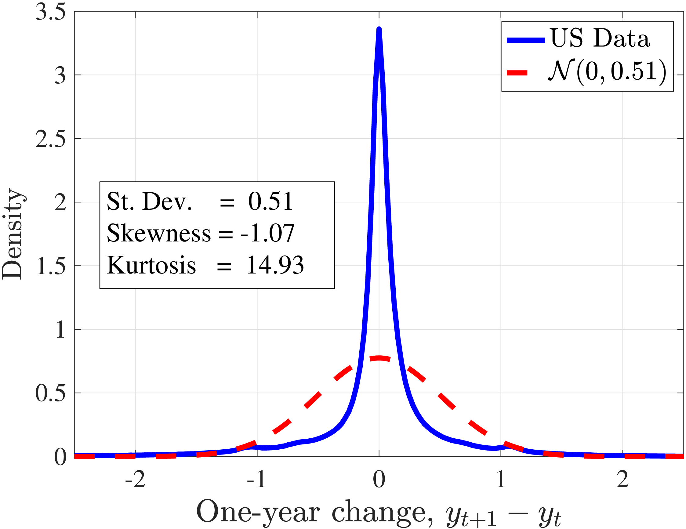
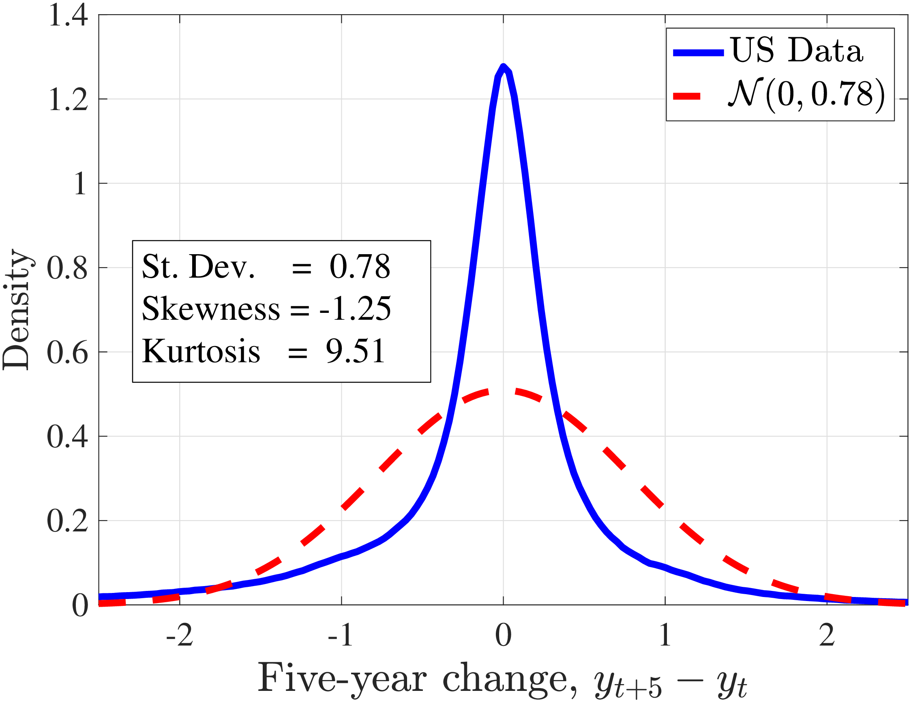
Notes: This figure plots the empirical densities of one- and five-year earnings changes superimposed on Gaussian
densities with the same standard deviation. The data are for all workers in the base sample defined in Section 2 and
\(t=1997\)
.
In addition, earnings growth displays a very high kurtosis relative to a Gaussian density (Figure 1). There are far more people in the data with very small or with extreme earnings changes and fewer people with middling ones. For example, 31% of the annual earnings changes are less than 5%, compared to only 8% under the Gaussian distribution. Also, a typical worker sees a change larger than three standard deviations with a 2.4% chance, which is about one-ninth as likely under a normal distribution. Importantly, the average kurtosis masks significant heterogeneity. For example, five-year earnings growth of males aged 45–55 and earning $100,000 has a kurtosis of 18, compared to 5 for younger workers earning $10,000 (and 3 for a Gaussian distribution).2
To shed some light on the sources of these nonnormalities, we analyze data from the Panel Study of Income Dynamics (PSID) on work hours, hourly wages, and a rich set of additional covariates that are not available in the SSA data. We find that hourly wage changes exhibit little left-skewness but an excess kurtosis with a magnitude and lifecycle variation similar to earnings changes. Furthermore, wage changes are at least as important as changes in hours, even in the tails of the distribution. For example, on average out of an earnings decline of 165 log points, 101 log points are due to wages. Moreover, workers experiencing extreme changes are likely to have gone through nonemployment or job or occupation changes, or to have experienced health shocks, suggesting that the tails are not a statistical artifact or measurement error in the survey data.
Next, we characterize the mean reversion patterns of earnings changes by estimating nonparametric impulse response functions conditional on recent earnings and on the size and sign of the change. We find two types of asymmetry. First, fixing the size of the change, positive changes to high-earnings individuals are quite transitory, while negative ones are persistent; in contrast, the opposite is true for low-earnings individuals. Second, with a fixed level of earnings, the strength of the mean reversion differs by the size of the change: Large changes tend to be much more transitory than small ones. These asymmetries are difficult to detect in a covariance matrix, in which all sorts of earnings changes—large, small, positive, and negative—are masked by a single statistic.
Finally, we document two facts regarding long-term outcomes covering individuals’ entire working lives. First, the cumulative earnings growth over the life cycle varies systematically and substantially across groups of workers with different lifetime earnings. For example, average earnings rise by 60% from age 25 to age 55 for the median lifetime earnings group, by 4.8-fold for the 95th percentile, and by 27.8-fold for the top 1% groups.3 Second, there is substantial variation in individuals’ lifetime nonemployment rate—which we define as the fraction of a lifetime (ages 25 to 60) spent as (full-year) nonemployed. For example, 40% of men experience at most one year of nonemployment, while 18% spend more than half of their working years as nonemployed. These numbers imply an extremely high persistence in the long-term nonemployment state.
While the nonparametric approach allows us to establish key features of earnings dynamics in a transparent way, a tractable parametric process is indispensable because (i) it allows us to connect earnings changes to underlying innovations or shocks to earnings, and (ii) it can be used as an input to calibrate quantitative models with idiosyncratic risk.4 Therefore, in Section 6, we target the empirical moments described above to estimate a range of income processes. We start with the familiar linear-Gaussian framework (i.e., the persistent plus transitory model with Gaussian shocks) and build on it incrementally until we arrive at a rich, yet tractable benchmark specification that can capture the key features of the data. Along the way, we discuss which aspect of the data each feature helps capture so that researchers can judge the trade-offs between matching a particular moment and the additional complexity it brings.
Our benchmark process incorporates two key features to the linear-Gaussian framework: normal mixture innovations to the persistent and transitory components and, more importantly, a long-term nonemployment shock with a realization probability that depends on age and earnings. This state-dependent employment risk generates recurring nonemployment with scarring effects concentrated among young and low-income individuals and helps capture the lifecycle and income variation of the moments. Our empirical facts require non-Gaussian features in persistent innovations; these can be achieved by such income-dependent nonemployment shocks or non-Gaussian shocks to the persistent component, but not by a uniform nonemployment risk that is transitory in nature.5
Related Literature. The earnings dynamics literature has a long history, dating back to seminal papers by Lillard and Willis (1978), Lillard and Weiss (1979), and MaCurdy (1982b). Until recently, this literature focused on linear ARMA-type time series models identified from the variance-covariance matrix, thereby abstracting away from nonlinearities and nonnormalities of the data.6
In an important paper, Geweke and Keane (2000) modeled earnings innovations using normal mixture distributions and found important deviations from normality.7 More recently, using earnings data from France, Bonhomme and Robin (2009) estimate a flexible copula model for the dependence patterns over time and a mixture of normals for the transitory component that displays excess kurtosis. Bonhomme and Robin (2010) use a nonparametric deconvolution method and find excess kurtosis in both permanent and transitory shocks. We go beyond the overall distribution and document that nonnormalities in transitory and persistent components vary substantially with earnings levels and age. Another related paper is Guvenen et al. (2014), which shows that earnings growth becomes more left skewed in recessions; however, it abstracts away from lifecycle variation. We go further by analyzing kurtosis and how it varies across the income distribution, asymmetries in mean reversion, and the heterogeneity in lifecycle income growth rates and lifetime nonemployment rates, which are all absent from that paper.
In contemporaneous work, Arellano et al. (2017) also explore nonlinear earnings dynamics. They propose a new quantile-based panel data framework, which allows the persistence of earnings to vary with the size and sign of the shock. They find asymmetries in mean reversion and non-Gaussian features that are consistent with our results. They also show that the consumption response to earnings shocks displays nonlinearities, which we do not study. Relative to that paper, we provide a more in-depth analysis of the conditional skewness and kurtosis of earnings, document how they differ between job-stayers and job-switchers, and examine systematic variation in lifecycle earnings profiles and lifetime employment rates. Overall, the two papers complement each other.
Finally, our work is also related to that of Altonji et al. (2013), who estimate a joint process for earnings, wages, hours, and job changes via indirect inference by targeting a rich set of moments. Browning et al. (2010) also employ indirect inference to estimate a process featuring “lots of heterogeneity.” However, neither paper explicitly focuses on higher-order moments, their lifecycle evolution, or asymmetries in mean reversion.
2 Data and Variable Construction
2.1 The SSA Dataset
We draw a representative 10% panel sample of the U.S. population from the Master Earnings File (MEF) of the SSA. The MEF combines various datasets that go back as far as 1978. For our purposes, the most important variables include labor income from W-2 forms (for each job held by the employee during the year), self-employment income (from the Internal Revenue Service (IRS) tax form Schedule SE), and various demographics (date of birth, sex, and race).8 We focus on total annual labor earnings, which is the sum of total annual wage income and the labor portion (2/3) of self-employment income.
Wage income is not top coded throughout our sample, whereas self-employment income was capped at the SSA taxable limit until 1994. Although this top coding affects only a small number of individuals, we restrict our sample to the 1994–2013 period to ensure that our analysis is not affected by this issue.9 The only exception is our use of the entire 1978 to 2013 period in Section 5, where we analyze long-term outcomes of workers, for which a longer time series is essential. For robustness, we impute self-employment income above the cap for the years before 1994 using quantile regressions. Only a small number of individuals who make substantial income from self-employment are affected by this imputation, so the effect on our results is minimal. The details are provided in Appendix A.1. Finally, we convert nominal values to real values using the personal consumption expenditure (PCE) deflator, taking 2010 as the base year (see Appendix A for further details on the construction of our sample and variables).
Despite the advantages noted, the dataset also has some important drawbacks, such as limited demographic information, the absence of capital income, and the lack of hours (and thus hourly wage) data. To overcome some of these limitations, we supplement our analysis with survey data whenever possible. Another important limitation is the lack of household-level data. Even though a large share of quantitative models focus on individual earnings fluctuations (which we study), household earnings dynamics are key for some economic questions, about which we have little to say about in this paper.10
2.2 Sample Selection
Our base sample is a revolving panel consisting of males with some labor market attachment that is designed to maximize the sample size (important for precise computation of higher-order moments in finely defined groups) and keep the age structure stable over time. First, in order for an individual-year income observation to be admissible to the base sample, the individual (i) must be between 25 and 60 years old (the working lifespan) and (ii) have earnings above the minimum income threshold \(Y_{\text{min},t}\), equivalent to earnings from one quarter of full-time work (13 weeks at 40 hours per week) at half of the legal minimum wage in year \(t\) (e.g., approximately $1,885 in 2010). The revolving panel for year \(t\) then selects individuals that are admissible in \(t-1\) and in at least two more years between \(t-5\) and \(t-2\). This ensures that the individual was participating in the labor market and we can compute a reasonable measure of average recent earnings—a variable widely used extensively in the paper—which we describe next.
Recent Earnings. The average income of a worker \(i\) between years \(t-1\) and \(t-5\) is given by \(\hat{Y}_{t-1}^{i}=\frac{1}{5}\sum _{j=1}^{5}\max \left \{\tilde{Y}_{t-j}^{i},Y_{\text{min},t}\right \}\), where \(\tilde{Y}_{t}^{i}\) denotes his earnings in year \(t\). We then control for age and year effects by regressing \(\hat{Y}_{t-1}^{i}\) on age dummies separately for each year, and define the residuals as recent earnings (hereafter RE), \(\bar{Y}_{t-1}^{i}\). In Sections 3 and 4, we will group individuals by age and by \(\bar{Y}_{t-1}^{i}\) to investigate how the properties of income dynamics vary over the life cycle and by income levels.
3 Cross-Sectional Moments of Earnings Growth
In this section, we study the distribution of earnings growth rates by analyzing its second to fourth moments. We start by describing our nonparametric method.
3.1 Empirical Methodology: A Graphical Construct
Our main focus is on how the moments of earnings growth vary with recent earnings and age. To this end, for each year \(t\), we divide individuals into six groups based on their age in \(t-1\) (25–29,…, 45–54), and then within each age group, sort individuals into 100 percentile groups by their recent earnings \(\bar{Y}_{t-1}^{i}\). If these groupings are done at a sufficiently fine level, we can think of all individuals within a given age/RE group to be ex ante identical (or at least very similar). Then, for each such group, the cross-sectional moments of earnings growth between \(t\) and \(t+k\) can be viewed as the properties of earnings uncertainty that workers within that group expect to face looking ahead (see Figure 2). In our figures, we plot the average of these moments for each age/RE group over the years between 1997 and 2013-\(k\) (for moments by age only, see Appendix C.6). This approach allows us to compute higher-order moments precisely as each bin contains a large number of observations (see Table A.1 for sample size statistics). To make the figures more readable, we aggregate the six age groups into three: 25–34, 35–44, 45–54.11
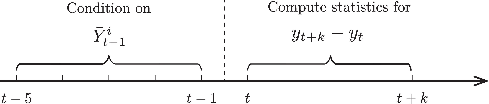
Figure: Figure 2 – Timeline for Rolling Panel Construction
Growth Rate Measures. In our analysis we use two measures of income change, each with its own distinct advantages and trade-offs. The first measure islog growth rate of income between \(t\) to \(t+k\), \(\Delta _{\text{log}}^{k}y_{t}^{i}\equiv y_{t+k}^{i}-y{}_{t}^{i}\), where \(y_{t}^{i}=\tilde{y}_{t}^{i}-d_{t,h(i,t)}\) denote the log income (\(\tilde{y}_{t}^{i}\)) of individual \(i\) in year \(t\) at age \(h(i,t)\) net of age and year effects \(d_{t,h(i,t)}\). \(\left \{d_{t,h}\right \} _{h=25}^{60}\) are obtained by regressing \(\tilde{y}_{t}^{i}\) on a full set of age dummies separately in each year. While its familiarity makes the log change a good choice for the descriptive analysis, it has a well-known drawback that observations close to zero need to be dropped or winsorized at an arbitrary value. When we use \(\Delta _{\text{log}}^{k}y_{t}^{i}\), we drop individuals from the sample with earnings less than \(Y_{\text{min}}\) in \(t\) or \(t+k\), and lose information in the extensive margin.
Our second measure of income growth—arc-percent change—is not prone to this caveat and is commonly used in the firm-dynamics literature, where firm entry and exit are key margins (e.g., Davis et al. (1996)). We define \(\Delta _{\text{arc}}^{k}Y_{t}^{i}=\frac{Y_{t+k}^{i}-Y_{t}^{i}}{\left (Y_{t+k}^{i}+Y_{t}^{i}\right)/2}\), where earnings level \(Y_{t}^{i}=\frac{\tilde{Y}_{t}^{i}}{\tilde{d}_{t,h(i,t)}}\) is net of average earnings in age \(h\) and year \(t\), \(\tilde{d}_{t,h(i,t)}\). Because of its familiarity, we use the log change measure in this section and report the results for arc-percent change in Appendix C.2, which show qualitatively similar patterns.
Transitory vs. Persistent Income Changes. As is well understood, longer-term earnings changes (i.e., \(\Delta _{\text{log}}^{k}y_{t}^{i}\) with larger \(k\)) reflect more persistent innovations. To see this intuition, consider the commonly used random-walk permanent/transitory model in which permanent (\(\eta _{t}^{i}\)) and transitory (\(\varepsilon _{t}^{i}\)) innovations are drawn from distributions \(F_{\eta}\) and \(F_{\varepsilon},\) respectively. We denote the variance, skewness and excess kurtosis of distribution \(F_{x},x\in \{\eta,\varepsilon \}\) by \(\sigma _{x}^{_{2}}\), \(\mathcal{S}_{x}\), and \(\mathcal{K}_{x}\), respectively. Then the second to fourth moments of \(k-\)year log income growth \(\Delta _{\text{log}}^{k}y_{t}^{i}\) are given by (see Appendix B for the derivations):
\[ \begin{aligned} \sigma ^{2}(\Delta _{\text{log}}^{k}y_{t}^{i}) & = & k\sigma _{\eta}^{2}+2\sigma _{\varepsilon}^{2}, \\ \mathcal{S}(\Delta _{\text{log}}^{k}y_{t}^{i}) & = & \underbrace{\frac{k\times \sigma _{\eta}^{3}}{(k\sigma _{\eta}^{2}+2\sigma _{\varepsilon}^{2})^{3/2}}}_{<1}\mathcal{S}_{\eta},\\ \mathcal{K}(\Delta _{\text{log}}^{k}y_{t}^{i}) & = & \underbrace{\frac{k\times \sigma _{\eta}^{4}}{(k\sigma _{\eta}^{2}+2\sigma _{\varepsilon}^{2})^{2}}}_{<1}\mathcal{K_{\eta}}+\underbrace{\frac{2\times \sigma _{\varepsilon}^{4}}{(k\sigma _{\eta}^{2}+2\sigma _{\varepsilon}^{2})^{2}}}_{<1}\mathcal{K}_{\varepsilon}. \end{aligned} \]
Equation 1 shows that as \(k\) increases the variance and kurtosis of \(k-\)year log change \(\Delta _{\text{log}}^{k}y_{t}^{i}\) reflect more of the distribution of \(\eta _{t}^{i}\) than that of \(\varepsilon _{t}^{i}\). Also, skewness is solely driven by permanent changes.12 Finally, the distribution of \(\Delta _{\text{log}}^{k}y_{t}^{i}\) is closer to normal than the underlying distributions of \(F_{\eta}\) and \(F_{\varepsilon}\), because as innovations \(\eta _{t}^{i}\) and \(\varepsilon _{t}^{i}\) accumulate, the distribution of \(\Delta _{\text{log}}^{k}y_{t}^{i}\) converges toward Gaussian, per the central limit theorem.
With these considerations in mind, we document the moments of one-year (\(k=1\)) and five-year (\(k=5\)) residual earnings growth to capture properties of transitory and persistent changes, respectively. As persistent changes have a greater effect on economic decisions compared with easier-to-insure transitory ones, we present the results for \(k=5\) in this section. The figures for \(k=1\) in Appendix C.1 show the same qualitative patterns.
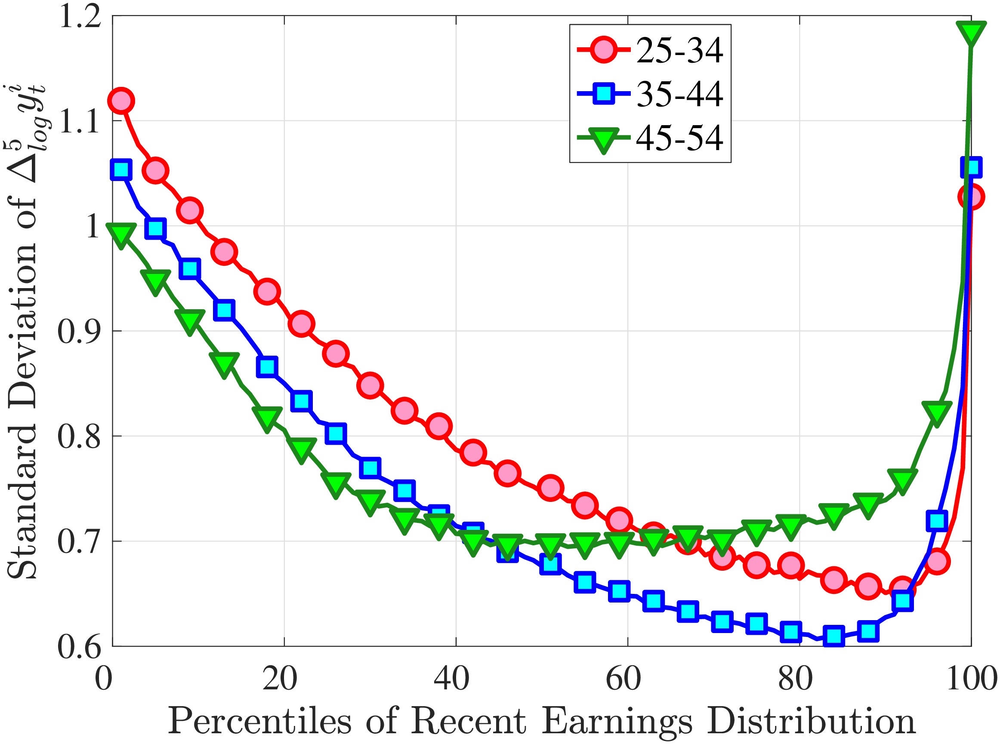
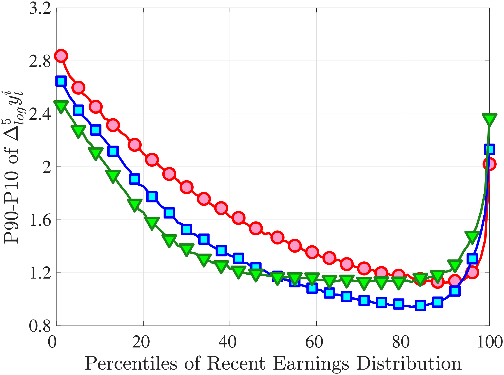
3.2 Second Moment: Standard Deviation
Figure 3a plots the standard deviation of five-year residual earnings growth by age and recent earnings (for clarity we use one marker for every 4th RE percentile group). In the right panel, we also report the difference between the 90th and 10th percentiles of log earnings changes, denoted by P90-P10, which is robust to outliers. Both measures show a pronounced U-shaped pattern by RE for every age group. For example, for 35- to 44-year-olds, the standard deviation falls from 1.05 for the lowest RE group to 0.6 for the 90th percentile, and then rises rapidly to 1.05 for the top 1%.
Baker and Solon (2003) and Karahan and Ozkan (2013) have estimated a U-shaped lifecycle profile for the variance of persistent shocks. Our analysis reveals a more intricate lifecycle variation, as we also condition on RE: Dispersion declines with age for the bottom one third of the RE distribution, is U-shaped until the 95th percentile, and monotonically increases for the top earners. However, notice that the variation with age is quite a bit smaller compared with the RE variation. Importantly, the highest earners (the top 5% or so) are strikingly different from other high earners—even those just below the 95th percentile. The same theme emerges again in higher-order moments.
3.3 Third Moment: Skewness (Asymmetry)
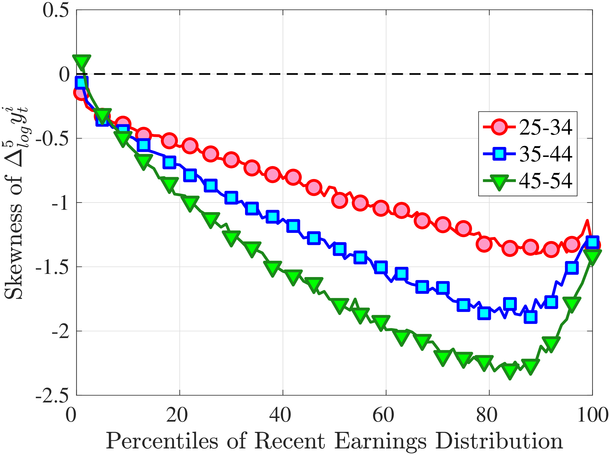
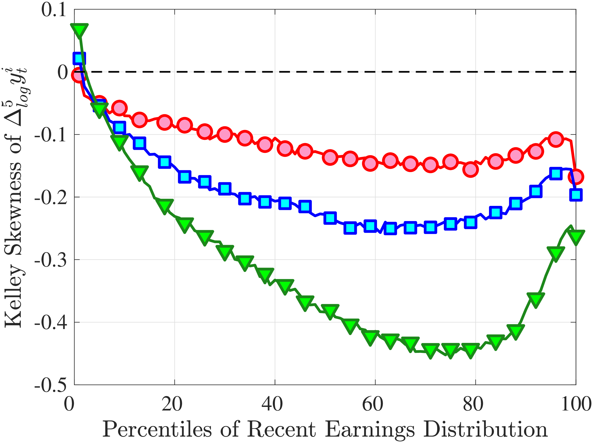
Figure 4a plots the skewness of five-year earnings growth, measured as the third standardized moment. First, notice that earnings changes are negatively (left) skewed at every stage of the life cycle and for (almost) all earnings groups. Second, skewness is increasingly more negative for individuals with higher earnings and as individuals get older. Thus, it seems that the higher an individual’s current earnings, the more room he has to fall and the less room he has left to move up. Note that the variation in skewness with age is more muted for individuals at the bottom or top of the (recent) earnings distribution (similar to the dispersion patterns above).
Is negative skewness as measured by the third central moment driven by extreme observations? While the information on tails is important (and becomes especially valuable in estimating income processes in Section 6), we also look at Kelley (1947) skewness, \(\mathcal{S_{K}}=\frac{\text{(P90-P50)}-\text{(P50-P10)}}{\text{P90-P10}}\), which is robust to observations above the 90th or below the 10th percentile of the distribution. Basically, \(\mathcal{S_{K}}\) measures the relative fractions of the overall dispersion (P90–P10) accounted for by the upper and lower tails. Specifically, \(\mathcal{S_{K}<}0\) implies that the lower tail (P50-P10) is longer than the upper tail (P90-P50).
Kelley’s skewness exhibits essentially the same pattern (Figure 4b). Thus, the asymmetry is prevalent across the entire distribution rather than being driven just by the tails. Furthermore, the magnitudes are substantial. For example, a Kelley measure of –0.44 (for 45- to 54-year-old workers at the 80th RE percentile) implies that P90-P50 accounts for 28% of P90-P10, far removed from the 50-50 of a normal distribution.
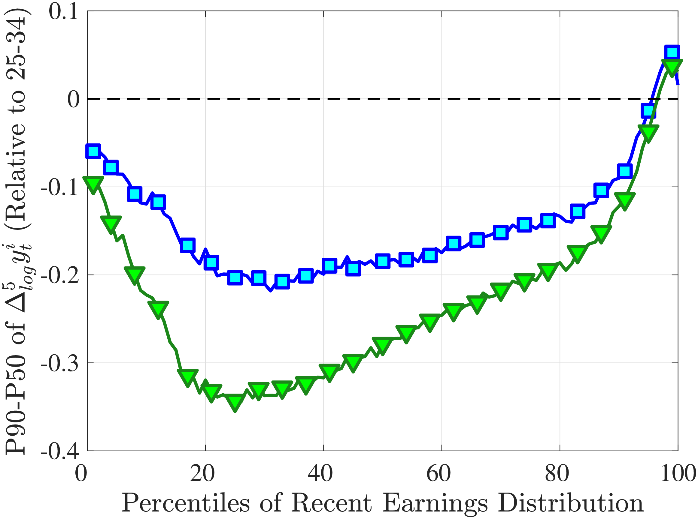
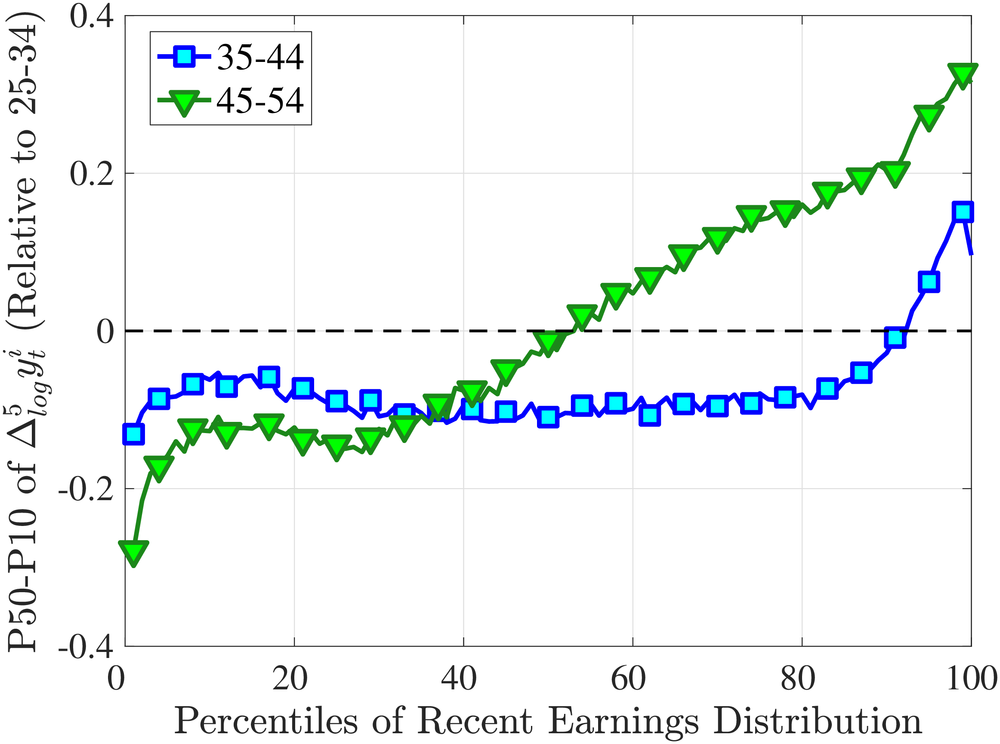
Notes: The y-axes show the change in P90-P50 and P50-P10 from the youngest age group to the two older age groups.
Another question is whether skewness becomes more negative over the life cycle because of a compression of the upper tail (fewer opportunities for large gains) or because of an expansion in the lower tail (higher risk of large declines). To answer this question, we investigate how the P90-P50 and P50-P10 change over the life cycle from their levels at ages 25–34 (Figure 5). Up until age 44, both the P90-P50 and P50-P10 decline with age across most of the RE distribution. However, the upper tail compresses more strongly than the lower tail, which leads to the increasing left skewness. After age 45, the P90-P50 keeps shrinking, but the bottom end opens up for workers with above median RE (large declines become more likely). Top earners are again an exception to this pattern: The upper tail does not compress with age, but the bottom end opens up monotonically.
A natural question is whether the negative skewness is simply due to nonemployment spells. First, notice that nonemployment can generate left skewness in earnings growth only if it has persistent effects: A transitory spell contributes one negative and one positive earnings change of similar size, leaving the symmetry unaffected (see equation 1). Jacobson et al. (1993) and Von Wachter et al. (2009) show that workers’ earnings indeed experience large scarring effects after mass layoffs. We revisit this point in Section 6, where we link earnings changes to the underlying shocks. Second, negative skewness is stronger for upper-middle-income and older workers, for whom unemployment risk is relatively small, implying that a decline in hours is not the main driver. Finally, as noted above, the shift toward more negative skewness is mostly coming from the compression of the right tail up to age 45, which is unlikely to be related to nonemployment.
3.4 Fourth Moment: Kurtosis (Peakedness and Tailedness)
We can think of kurtosis as a measure of the tendency of a density to stay away from \(\mu \pm \sigma\) (see Moors (1986)). Thus, a leptokurtic distribution typically has a sharp/pointy center, long tails, and little mass near \(\mu \pm \sigma\) (relative to a Gaussian distribution). A corollary to this description is that with excess kurtosis, the usual way we interpret standard deviation—as representing the size of the typical observation—is not very useful because most realizations will be either close to the center or out in the tails.
To illustrate this point, we calculate concentration measures for earnings growth. Table 1 reports the fraction of individuals experiencing an absolute log earnings change less than a threshold, \(|\Delta _{\log}^{1}y_{t}|\leq 0.05,0.10\), and so on. In the data 31% of workers experience an earnings change of less than 5%, whereas if innovations were drawn from a Gaussian density with the same standard deviation as the data, only 8% of individuals would experience such changes. Furthermore, extreme events are more likely in the data: A typical worker experiences a change larger than three standard deviations (153 log points) once in a lifetime—with a 2.4% annual chance—whereas this probability is almost one-ninth that size under a normal distribution. These values suggest that the Gaussian assumption vastly overstates the typical earnings growth and misses the extreme changes received by a non-negligible share of the population.
| Prob(\(|\Delta _{\log}^{1}y_{t}|\in S\)) | ||||||
| \(S:\) | \(\leq 0.05\text{}\) | \(\leq 0.10\) | \(\leq 0.20\) | \(\geq 2\sigma (\thickapprox1.0)\) | \(\geq 3\sigma (\thickapprox1.5)\) | |
| Data | 30.6 | 48.8 | 66.5 | 6.64 | 2.37 | |
| \(\mathcal{N}(0,0.51)\) | 7.7 | 15.4 | 30.2 | 4.55 | 1.46 | |
| Ratio | 3.88 | 3.27 | 2.23 | 1.46 | 8.77 | |
Notes: The empirical distribution used in this calculation is for 1997–98, the same as in Figure 1.
The high likelihood of extreme events in the data motivates us to take a closer look at the tails of the earnings growth distribution by examining its empirical log density versus the Gaussian log density (which is an exact quadratic). First, in line with our previous discussion, the data have much thicker and longer tails compared with a normal distribution (Figure 6). Second, the tails decline almost linearly, implying a Pareto distribution at both ends. Third, they are asymmetric, with the left tail declining much more slowly than the right, which contributes to the left skewness documented above. In fact, fitting linear lines to each tail (in the regions \(\pm [1,4]\)) yields a tail index of 1.18 for the right tail and 0.40 for the left tail—the latter showing especially high thickness. We highlight that while the Pareto tail in the earnings levels distribution is well known—indeed, going as far back as Pareto (1897)—the two Pareto tails emerge here in the earnings growth distribution. To our knowledge, the present paper is the first to document this fact.13
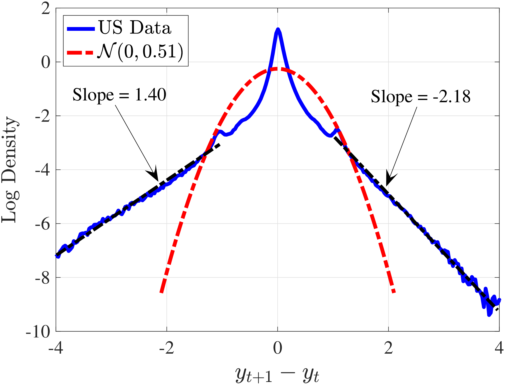
Notes: The empirical distribution in this figure is for 1997-98, the same as in Figure 1 but with the y-axis now in
logs.
Next, to see how kurtosis varies by age and income, we report two statistics in Figure 7 that are analogous to the ones we used for skewness: the fourth standardized moment and the quantile-based Crow and Siddiqui (1967) measure, which is defined as \(\kappa _{\text{C-S}}=\frac{P97.5-P2.5}{P75-P25}\) and is equal to 2.91 for a Gaussian distribution. As with dispersion and skewness, kurtosis varies substantially with age and recent earnings. For example, for all age groups, the fourth standardized moment increases significantly with recent earnings from 3 (Gaussian) for low-income workers to above 14 around the 90th percentile, and then declines sharply in the top 5% of the RE distribution. Kurtosis also rises with age, especially between the first two age groups. The Crow-Siddiqui measure also shows very high kurtosis levels, indicating that the excess kurtosis is not driven by outliers.
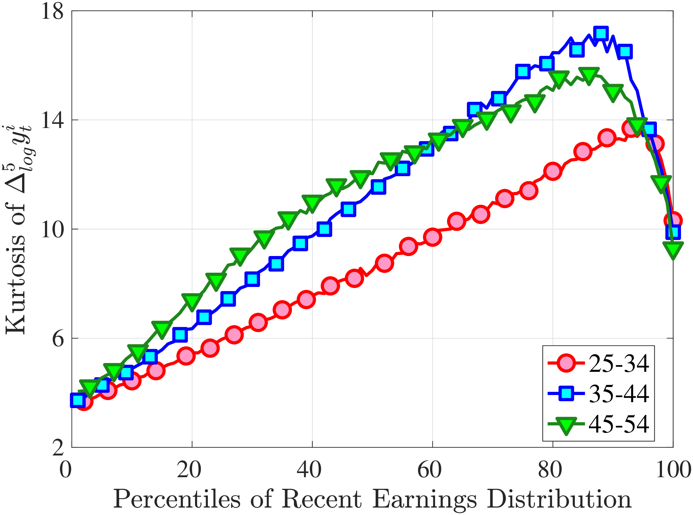
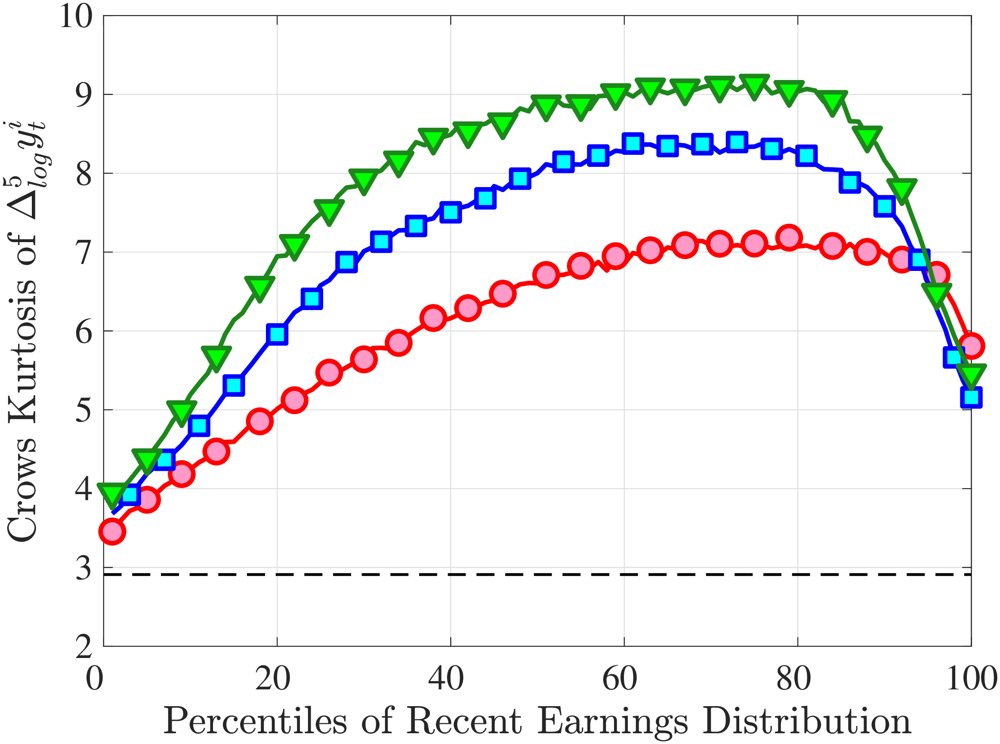
An Alternative Measure of Persistent Changes. As we noted earlier, while the five-year income growth measure reveals a good deal about persistent changes in earnings, it still contains possible transitory innovations in years \(t\) and \(t+5\), which can potentially confound the inferences we draw about persistent changes. To check the robustness of our results, we consider an alternative measure that is based on the change between two consecutive five-year averages of earnings: \(\overline{\Delta}_{\log}^{5}(\bar{y_{t}}^{i})\equiv \log (\bar{Y}_{t+4}^{i})-\log (\bar{Y}_{t-1}^{i})\), where \(\bar{Y}_{t+4}^{i}\) is calculated the same as \(\bar{Y}_{t-1}^{i}\) but over the period \(t\) to \(t+4.\) Averaging earnings before differencing purges transitory changes and better isolates the persistent ones.
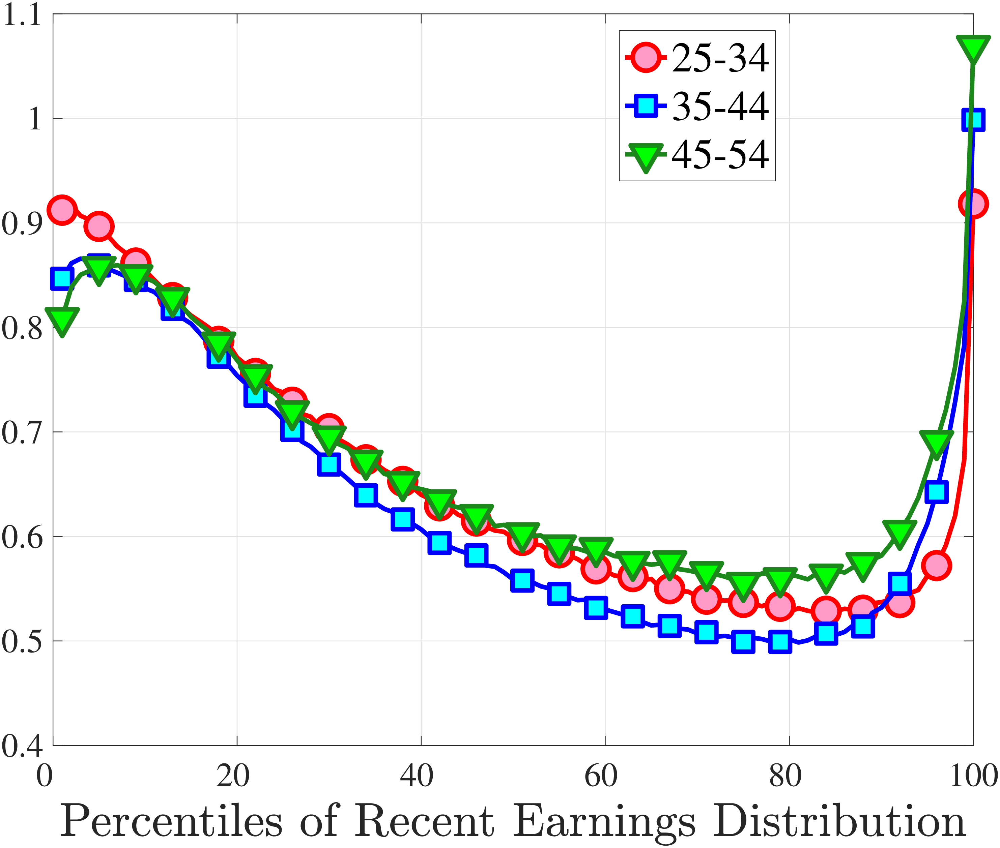
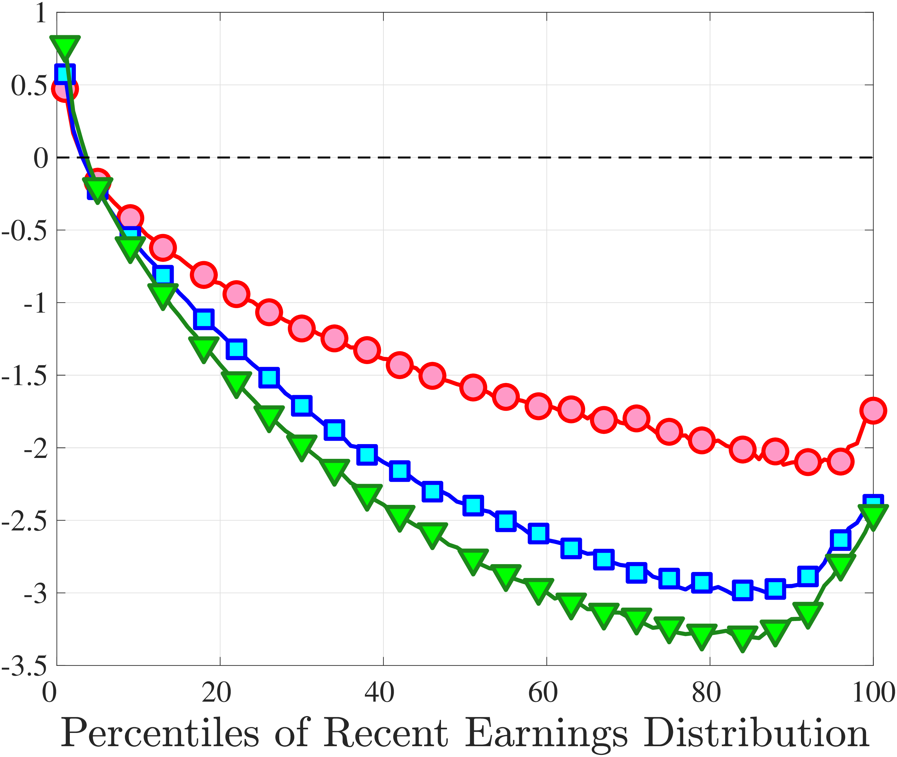
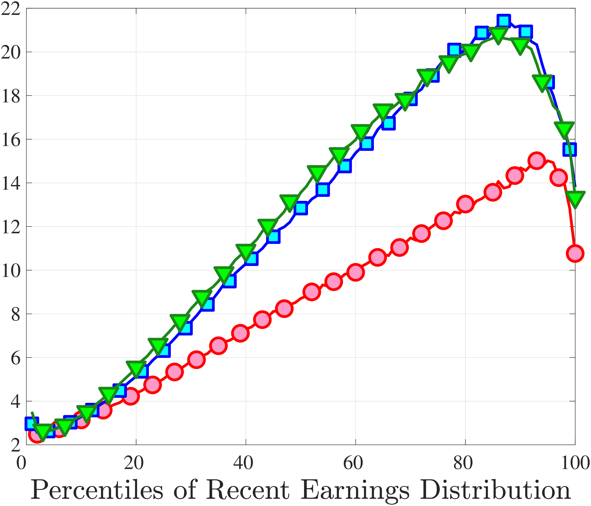
Figure 8 plots the standardized moments of this alternative measure, which show essentially identical patterns to their counterparts using our baseline five-year growth measure (see Appendix C.4 for quantile-based moments). In fact, if anything, this measure shows a slightly larger negative skewness and a higher excess kurtosis. These results confirm our conclusion that the nonnormalities are stronger in persistent earnings changes. A more formal analysis in Section 6 will further confirm this conclusion.
3.5 Job-Stayers and Job-Switchers
Economists have documented that the earnings changes of workers who stay with the same employer (job-stayers) are notably different from the changes of workers who switch jobs (job-switchers) (see Topel and Ward (1992), Low et al. (2010), and Bagger et al. (2014)). This literature has focused on the average change, whereas we examine how the higher-order moments of earnings growth vary between job-stayers and job-switchers.
The SSA dataset contains employer identification numbers (EINs) that allow us to match workers to firms. However, the annual frequency of the data, together with the fact that some workers hold multiple jobs in a given year, poses a challenge for a precise identification of job-stayers and job-switchers. We have explored several plausible definitions for stayers and switchers and found qualitatively similar results. Here, we describe one reasonable definition: A worker is said to be a job-stayer between years \(t\) and \(t+1\) if he has a W-2 form from the same firm in years \(t-1\) through \(t+2\), and that firm is the main employer by providing at least 80% of his total annual earnings in years \(t\) and \(t+1\). A worker is defined as a job-switcher if he is not a job-stayer.14
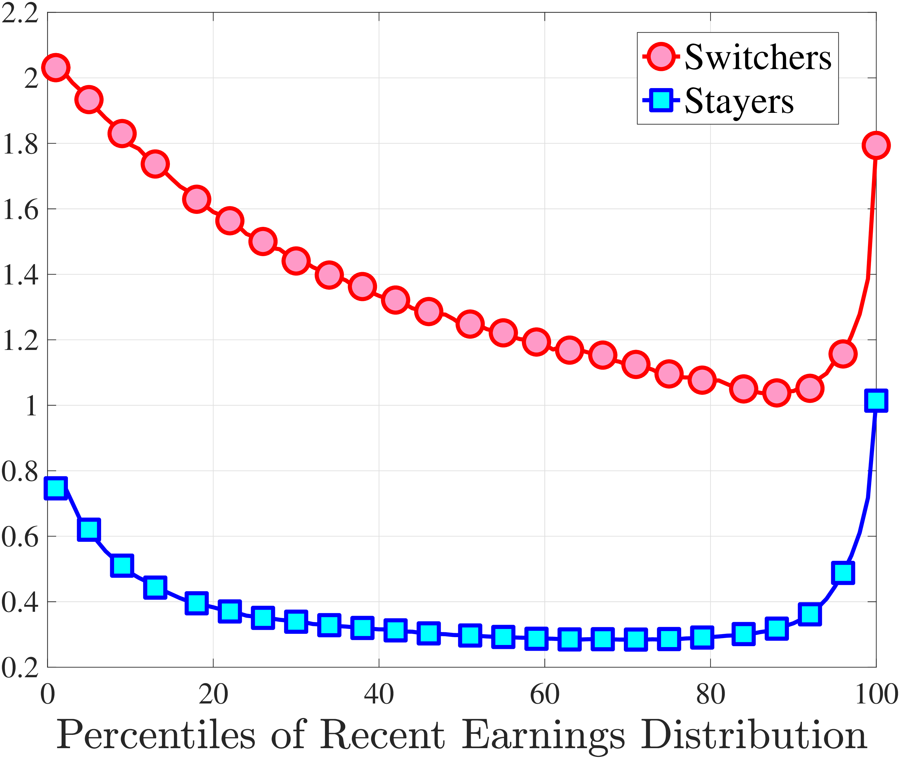
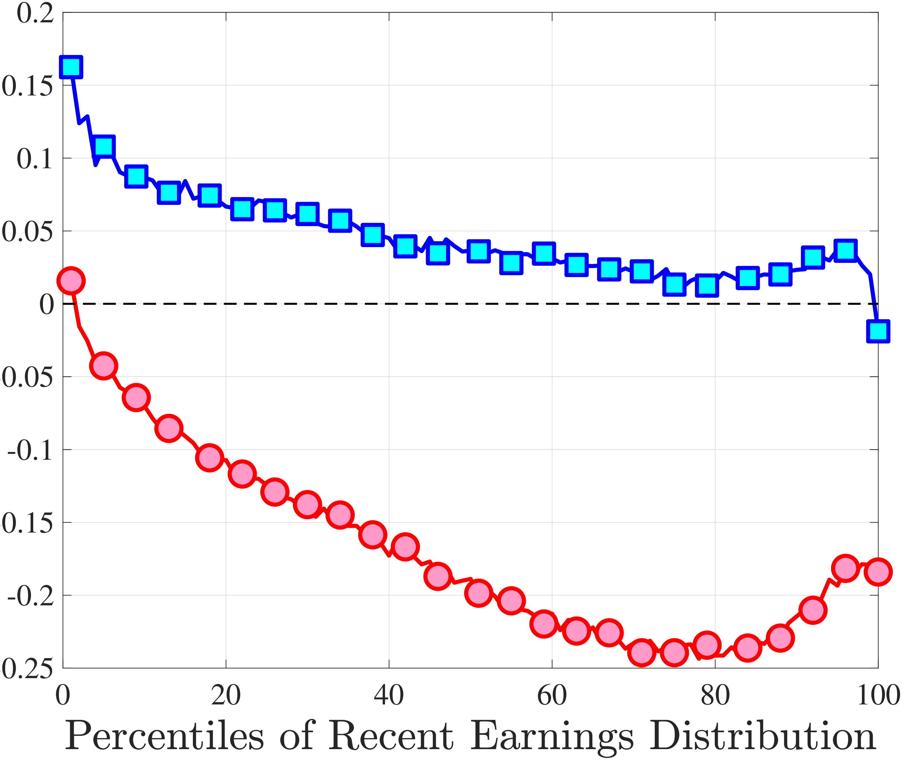
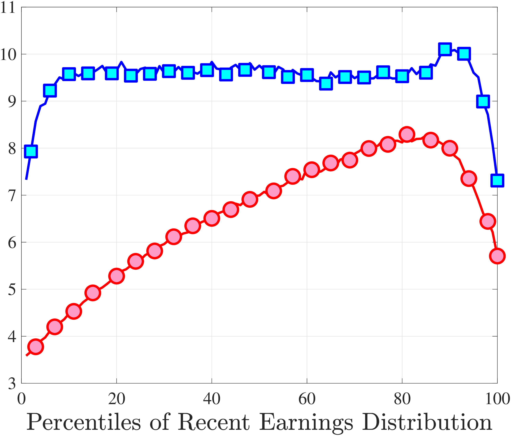
We show in Figure 9 how the quantile-based second to fourth moments of annual earnings growth for stayers and switchers vary with recent earnings. Relative to job-switchers, job-stayers experience earnings changes that have a smaller dispersion (about one-third for median-income workers), and are more leptokurtic, especially for low-RE workers. Changes are symmetric or slightly right skewed for stayers and left skewed for switchers. The age profiles are broadly similar across switchers and stayers, and figures for five-year changes and standardized moments display similar patterns (Appendix C.5).
3.6 What Are the Sources of Nonnormalities in Earnings Growth?
So far, our analysis has focused on the distribution of annual earnings changes and remained silent on what may be behind the nonnormalities. For example, are the left skewness and excess kurtosis also present in the wage growth distribution? What are the lifecycle events associated with extreme income changes? The lack of information in the SSA data other than annual earnings does not allow us to investigate these questions, which, in turn, we study using the PSID.
3.6.1 Separating Earnings, Wages, and Hours
For many economic questions, it is important to know the extent to which nonnormalities in earnings dynamics are driven by wages versus hours. For example, if nonnormalities come from changes in hours and not wages, this would suggest focusing on hours to identify their underlying sources, e.g., preferences for work or shocks to labor supply (health shocks, involuntary layoffs, etc.). If, instead, nonnormalities are also present in wage changes, that would point to a different set of factors on which to focus. To shed light on this question, we analyze the wage growth distribution in the PSID using a sample that closely mimics the SSA sample (see Appendix C.7 for the details).15
| All | 25–39 | 40–55 | |||||
| Normal | Earnings | Wages | Earnings | Wages | Earnings | Wages | |
| Skewness | 0.0 | –0.26 | –0.14 | –0.17 | –0.20 | –0.34 | –0.09 |
| Kelley Skew. | 0.0 | –0.02 | –0.02 | 0.03 | 0.016 | –0.06 | –0.04 |
| Kurtosis | 3.0 | 12.26 | 13.65 | 10.44 | 9.00 | 14.01 | 17.10 |
| Crow Kurt. | 2.91 | 6.83 | 5.59 | 6.33 | 5.02 | 7.33 | 6.11 |
Note: Wages are obtained by dividing annual earnings of male heads of households by their annual hours in the PSID using data
over the period 1999–2013, during which data are biennial.
We start by investigating the non-Gaussian features of two-year earnings changes in the PSID (Table 2). The standardized third moment and the Kelley measure point to a weakly left skewed distribution, possibly due to added noise in the PSID to the extent that measurement error is symmetric. Excess kurtosis is a more striking feature: Both measures of kurtosis from the PSID are quite close to their SSA counterparts. The age patterns are also broadly in line with those from administrative data. In addition, De Nardi et al. (forthcoming) document the income variation in higher-order moments of earnings growth from the PSID and find patterns similar to those in the SSA data.
Turning to hourly wage growth, negative skewness in the overall sample is even less pronounced than that of earnings. Unlike skewness, excess kurtosis of wage growth and its lifecycle variation are roughly similar to those features of earnings growth.16 This evidence suggests that the leptokurtic property of earnings growth cannot be driven entirely by the hours margin. We also conducted an analogous analysis using data from the Current Population Survey (CPS), which has a larger sample size, and reached similar conclusions, specifically a weak left skewness and strong excess kurtosis in earnings and wage growth (see Appendix C.7).
Motivated by the importance of extreme earnings changes for excess kurtosis, we investigate the roles of hours and wages in the tails of the earnings growth distribution. For this purpose, we distribute workers into six groups based on their two-year residual earnings change. As in the SSA data, most workers experience only small earnings changes (col. 1 of Table III). For each group, we compute the average change in residual earnings, hours, and wages (Table III, cols. 2-4).17 Our results show that wage changes are at least as important as hours changes. For example, the bottom group with the average earnings decline of 165 log points experiences a drop of 101 log points in wages. Clearly, extensive margin events (e.g., layoffs) can lead to large declines in hours and wages at the same time. Moreover, wage changes seem to be even more important for smaller earnings changes (e.g., more than 70% of \(|\Delta y|<0.25\) can be attributed to wages).
3.6.2 Linking Earnings Changes to Lifecycle Events
In this section, we link large earnings changes to various lifecycle events. We start with a natural suspect: nonemployment spells. The group with the largest earnings decline also reports the largest increase in the incidence of nonemployment—10 weeks (Table III, col. 5). Similarly, the group with the largest earnings increase reports the largest decline in nonemployment.18 These results underline the importance of the extensive margin for the tails of the earnings change distribution.
| Group | Share | Mean | Mean | Mean | \(\Delta\) wks | Occup. | Employer | Disab. | |
| \(\Delta y\in\) | % | \(\Delta y\) | \(\Delta w\) | \(\Delta h\) | not empl. | switch % | switch % | Flow in % | |
| (1) | (2) | (3) | (4) | (5) | (6) | (7) | (8) | ||
| \((-\infty,-1)\) | 3. | 8% | –1.65 | –1.01 | –0.64 | 10.01 | 26.1 | 45.6 | 9.2 |
| \([-1,-0.25)\) | 14. | 4% | –0.48 | –0.34 | –0.14 | 1.62 | 14.9 | 29.1 | 4.4 |
| \([-0.25,0)\) | 31. | 2% | –0.11 | –0.08 | –0.03 | 0.17 | 6.9 | 13.3 | 3.5 |
| \([0,0.25)\) | 31. | 1% | 0.11 | 0.08 | 0.03 | -0.03 | 5.3 | 9.7 | 2.8 |
| \([0.25,1)\) | 16. | 5% | 0.47 | 0.34 | 0.13 | -1.30 | 8.6 | 16.9 | 2.9 |
| \((1,\infty)\) | 3. | 0% | 1.64 | 1.06 | 0.58 | -7.51 | 18.0 | 30.7 | 3.8 |
Notes: This table shows hours and wage growth (\(\Delta h\) and \(\Delta w\), respectively) and the various lifecycle events for people in different biennial earnings change (\(\Delta y\)) groups. In column 5, “weeks not employed” is the sum of weeks unemployed and out of the labor force. Columns 6 and 7 show the fraction of workers that switch occupation and employer within each earnings change group, respectively. Column 8 shows the fraction of workers who become disabled in that period.
Next, we study occupation and job mobility, both of which are known to be associated with large changes in earnings. The likelihood of occupation and employer switches follows a distinct U-shaped pattern with earnings changes (Table III, cols. 6 and 7, respectively). Compared to the workers with small changes (\(|\Delta y|<0.25\)), the top and bottom earnings-change groups are three to four times more likely to make these switches. The sources of mobility are possibly very different at the top and the bottom earnings-change groups. For example, the switches at the top are likely associated with promotions or outside offers, whereas moves at the bottom are probably necessitated by job losses. We also looked into involuntary geographic moves and found that they are associated with large earnings changes too (Appendix C.7).
Finally, we investigate health shocks, which are known to have large effects on earnings (see Dobkin et al. (2018)). We focus on disabilities that affect individuals’ work performance (see Appendix C.7 for a detailed description). We find higher transition rates into disability for workers with earnings declines, with the highest transition (9.2%) in the bottom earnings-change group (Table III, col. 8). These results suggest that the extreme earnings changes are not purely a statistical artifact or measurement error.
Disability Income. If health shocks are an important source of earnings changes, how important is disability insurance as a safety net? To answer this question, we add individuals’ Social Security Disability Income (SSDI) from the SSA to their labor income and construct a “total income” measure. Our results in Appendix C.8.1 show that the cross-sectional moments of total income overlap with their labor income counterparts, mainly because the share of SSDI recipients is small, ranging from 1.3% in 1978 to 4.1% in 2013. However, SSDI makes a noticeable (albeit slight) difference only for the oldest group of workers, who constitute the majority of the recipients.
To sum up, in light of the vast micro literature that finds very small Frisch elasticities, large changes in earnings, especially declines, are much more likely to represent involuntary shocks beyond the worker’s control such as health problems, reductions in hours imposed by employers, or unemployment.
Related Work. A growing literature uses administrative data from various countries to study the determinants of nonnormalities in earnings growth. Kurmann and McEntarfer (2018) show that hourly wage growth displays high excess kurtosis for job-stayers in the U.S., and wage changes constitute a substantial portion of the earnings changes, mostly for those experiencing increases. These findings are overall consistent with ours. They also argue that large declines in hours of job-stayers are involuntary and imposed by firms. Blass-Hoffmann and Malacrino (2017) use Italian data to argue that changes in weeks worked account for the procyclical left skewness of the one-year and five-year earnings growth (first documented by Guvenen et al. (2014) for the U.S.). In contrast, our analysis from the PSID also attributes an important role to wage growth. Moreover, we find that scarring effects are necessary to generate left skewness through extensive margin fluctuations. Finally, Halvorsen et al. (2018) use Norwegian data and find that hourly wage changes exhibit left-skewness and excess kurtosis, and both the magnitudes and their lifecycle and income variation are similar to those for earnings changes. Furthermore, they show that large earnings changes are mostly driven by wages for high-RE individuals, but the split between wages and hours is more equal for low-RE workers.
4 Dynamics of Earnings
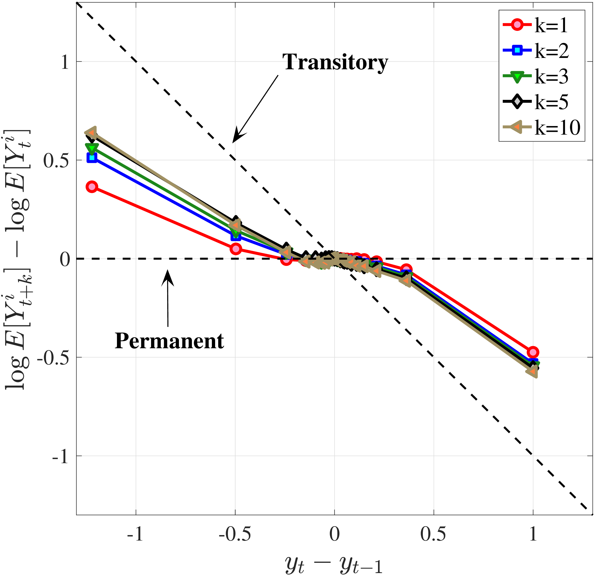
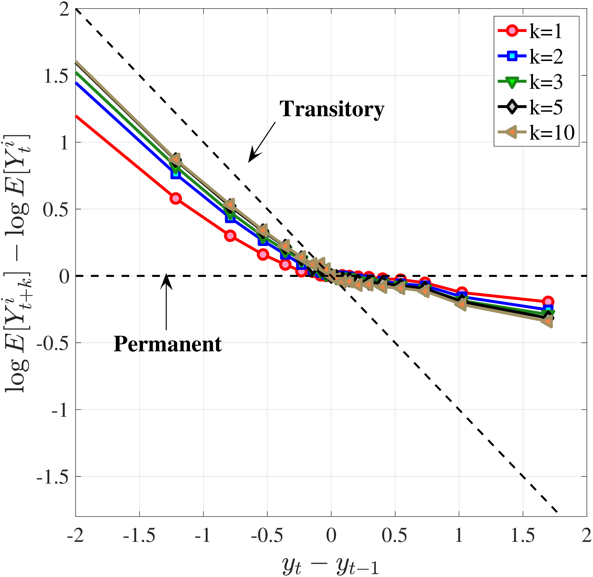
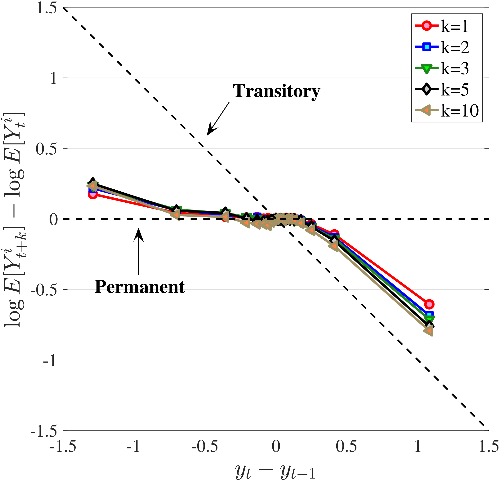
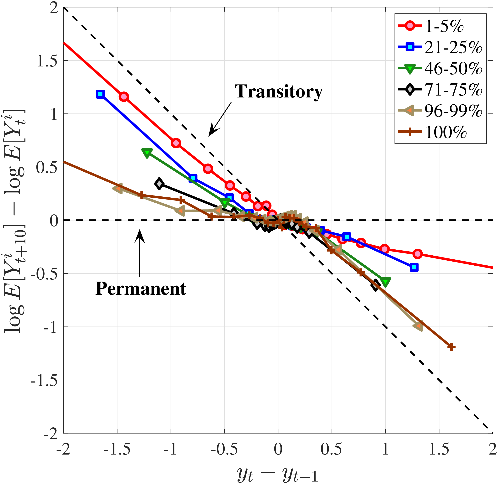
Notes: Median-, low-, and high-RE in panels A, B, and C refer to workers with \(\overline{Y}_{t-1}\) in \((P46-P55),\) \((P6-P10),\) and \((P91-P95),\) respectively. Prime age refers to ages 35 to 50.
Having studied the distribution of earnings changes, we now turn to their persistence. Typically, earnings dynamics are modeled as an AR(1) or a low-order ARMA process, and the persistence parameter is pinned down by the rate of decline of autocovariances with the lag order. While this linear approach might be a good first-order approximation, it imposes strong restrictions, such as the uniformity of mean reversion for positive and negative or large and small changes as well as for workers with different earnings levels.
We exploit our large sample and employ a nonparametric strategy to characterize the nonlinear mean reversion. We do so by documenting the impulse response functions of earnings changes of different sizes and signs for workers with different recent earnings. In particular, we group workers by their earnings growth between \(t-1\) and \(t\), their recent earnings \(\overline{Y}_{t-1}^{i}\), and age, and then follow their earnings over the next 10 years.
To reduce the number of graphs to a manageable level, we combine the first two age groups (ages 25 to 34) into “young workers” and the next three groups (ages 35 to 50) into “prime-age workers.” Within each age group, we rank and group individuals by \(\overline{Y}_{t-1}^{i}\) into the following 21 RE percentiles: 1–5, \(\ldots\), 91–95, 96–99, and 100. Next, within each age and RE group, we sort workers by the size of their log earnings change between \(t-1\) and \(t\) (\(y_{t}^{i}-y_{t-1}^{i}\)) into \(20\) equally sized quantiles. Hence, all individuals within a group have similar age and average earnings up to \(t-1\), and experience a similar change from \(t-1\) to \(t.\) For each such group of individuals, we then compute the log change of their average earnings from \(t\) to \(t+k,\log \mathbb{E}\left [Y_{t+k}^{i}\right]-\log \mathbb{E}\left [Y_{t}^{i}\right]\), where \(Y_{t}^{i}\) is the income level net of age and time effects. Rather than taking the average of log earnings change, this approach allows us to include workers with earnings below the minimum threshold, thereby keeping the composition of workers constant for each \(k\). The results for the alternative approach are qualitatively very similar and are available upon request.
4.1 Impulse Response Functions Conditional on Recent Earnings
In Figure 10, we show the mean reversion of different sizes of earnings changes \(y_{t}^{i}-y_{t-1}^{i}\) for prime-age workers over a 10-year period. Specifically, we plot \(\log \mathbb{E}\left [Y_{t+k}^{i}\right]-\log \mathbb{E}\left [Y_{t}^{i}\right]\) of each \(y_{t}^{i}-y_{t-1}^{i}\) quantile on the y-axis against its average on the x-axis.19 This graphical construct contains the same information as a standard impulse response function but allows us to see the heterogeneous mean reversion patterns more clearly.
We start with the median-RE group (\(\overline{Y}_{t-1}\in P46-P55\)) in Figure 10a. Even at the 10-year horizon, a nonnegligible fraction of the earnings change is still present for this group of workers, indicating a very persistent component in earnings growth. Also, negative changes tend to recover more gradually than positive ones for them. For example, workers whose earnings rise by 100 log points between \(t-1\) and \(t\) lose about 50% of this increase in the following 10 years. Almost all of this mean reversion happens after one year. Workers whose earnings fall by 100 log points recover 25% of that decline in the first year and around 50% of the total within 10 years. Finally, the degree of mean reversion varies with the magnitude of earnings changes, with stronger mean reversion for large changes: Small innovations (i.e., those less than 10 log points in absolute value) look very persistent, whereas larger earnings changes exhibit substantial mean reversion. A univariate autoregressive process with a single persistence parameter will fail to capture this behavior. In Section 6, we will show how to modify the simple income process to accommodate this variation in persistence by the size and sign of the earnings shock.
The analogous impulse response functions for low-income (\(\overline{Y}_{t-1}\in P6-P10\)) and high-income (\(\overline{Y}_{t-1}\in P91-P95\)) workers (Figures 10b and 10c) show that for low-income individuals, negative changes are more short-lived, whereas positive ones are more persistent, and that for high-income individuals the opposite is true.
Extending the results to the entire distribution of recent earnings, we focus on a fixed horizon and plot the cumulative mean reversion from \(t\) to \(t+10\) for the 6 RE groups in Figure 10d. Starting from the lowest RE group (the bottom 5%), notice that negative changes are transitory, with an almost 75% mean reversion rate at the 10-year horizon. But positive changes are quite persistent, with only about a 25% mean reversion at the same horizon. As we move up the RE distribution, the positive and negative branches of each graph start rotating in opposite directions, so that for the highest RE group (top 1%), we have the opposite pattern: only 20 to 25% of earnings declines revert to the mean at the 10-year horizon, whereas around 80% of the increases do so at the same horizon. We refer to this shape as the “butterfly pattern.”
This butterfly pattern broadly resonates with the earnings dynamics in job ladder models. For high-RE workers—who are at the higher rungs of the ladder—a job loss leads to a more persistent earnings decline relative to low-RE workers because of search frictions. Similarly, for low-RE workers, large increases are likely due to unemployment-to-employment or job-to-job transitions, which have long-lasting effects on earnings.20
5 Earnings Growth and Employment: The Long View
In this section, we turn to two questions that complete the picture of earnings dynamics over the life cycle. Both questions pertain to long-term outcomes—covering the entire working life. The first one is about average earnings growth—complementing the second to fourth moments analyzed in Section 3. In particular, how much cumulative earnings growth do individuals experience over their working life, and how does that vary across individuals with different lifetime incomes?
The second question investigates the lifetime nonemployment rate—defined as the fraction of an individual’s working life spent as full-year nonemployed. Although the incidence of long-term nonemployment is of great interest for many questions in economics, documenting it requires long panel data with no sample attrition, a phenomenon most common among long-term nonemployed. The administrative nature of the MEF dataset and its long panel dimension provide an ideal opportunity to study this question.
5.1 Lifecycle Earnings Growth and Its Distribution
For the analysis in this section, we use the full length of the MEF panel, covering 1978 to 2013. We select individuals who (i) were born between 1951 and 1957 (hence for whom we have 33 years of data between ages 25 and 60), and (ii) had annual earnings above \(Y_{\text{min},t}\) in at least 15 years, thereby excluding workers with very weak labor market attachment. We take a closer look at this latter group in the next subsection. We sort individuals into 100 percentiles by their lifetime earnings (LE), computed by averaging their earnings from age 25 through 60. For each LE percentile bin, denoted \(\text{LE}j\), \(j=1,2,...,99,100,\) we compute the growth rate between ages \(h_{1}\) and \(h_{2}\) by differencing the average earnings across all workers (including those with zero earnings) in those LE and age cells; i.e., \(\text{log}(\overline{Y}_{h_{2},j})-\text{log}(\overline{Y}_{h_{1},j}),\) where \(\overline{Y}_{h,j}\equiv \mathbb{E}(\tilde{Y}_{t}^{i}|i\in \text{LE}j,h(i,t)=h)\).
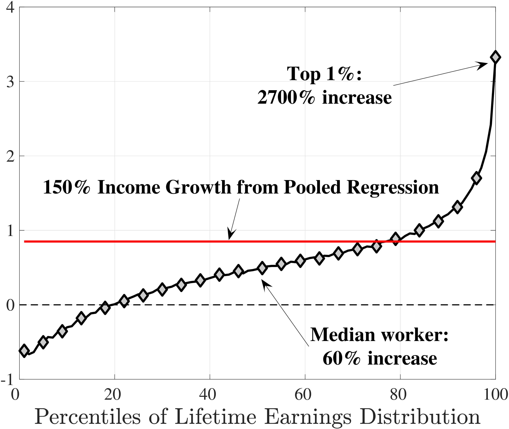
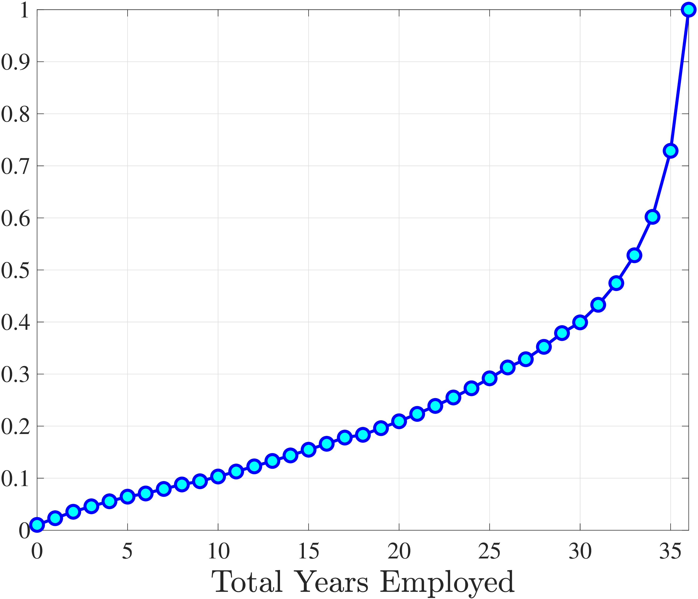
The results in Figure 11a show that between ages 25 and 55 the median worker (by LE) experiences a smaller earnings growth—about 60%—than a 150% mean growth estimated from a Deaton-Paxson pooled regression (see Appendix C.9). More importantly, higher-LE workers experience a much higher earnings growth over the life cycle compared with the rest of the distribution. While an upward slope per se is not surprising (as it is partly mechanical—faster growth will deliver higher LE, everything else held constant), the variation at the top end is so large and the curvature is so steep, that it turns out to be difficult to capture using simple earnings processes, as we discuss in the next section. For example, average earnings grow by 1.5-fold (91 log pts) over 31 years at \(LE80\), by 4.8-fold (157 log pts) at \(LE95\), and by 27.9-fold (333 log pts) in the top 1%.21
One question is whether this extremely high growth rate at the top is driven by higher rates of school enrollment in these groups at age 25 (and thereby low earnings). While the lack of education data does not allow us to answer this question directly, several pieces of evidence are informative. First, about 21.7% of individuals in the \(LE100\) have earnings below the \(Y_{\text{min}}\) threshold at age 25, which is higher than the rate for half of the sample, suggesting schooling could be playing some role (see Figure C.38a). However, this rate drops quickly to 5.95% by age 30, which is one of the lowest in our sample. At the same time, earnings growth for this group between ages 25 and 30 is only slightly higher compared to that between ages 30 and 35 (2.9-fold vs. 2.6-fold), when schooling is unlikely to matter much. Similarly, looking at growth from 35 to 55, we still find a steep profile of earnings growth with respect to LE (see Figure C.37). These observations suggest that low labor supply at age 25 is not the major driver of these patterns.
Turning to the lower end, individuals below \(LE20\) see their earnings decline from age 25 to 55. How important is disability for this decline? Adding SSDI to labor earnings has virtually no effect above the 40th LE group or so (Figure C.35). But it matters at the lower end, mitigating the decline by more than 50% for LE10 and LE5.
5.2 Lifetime Employment Rate and Its Distribution
Next, we investigate the lifetime nonemployment rates across individuals. Using the same criteria as before—working life defined as the period between ages 25 and 60, and full-year nonemployed defined as annual earnings below \(Y_{\text{min}}\)—we examine the cumulative distribution of total lifetime years employed in Figure 11b (for further analysis, see Appendix C.10). The results show that, first, a large fraction of individuals are very strongly attached to the labor market: 28% of individuals were never nonemployed during their working life, and almost half (48%) were nonemployed for less than three years. But second, the distribution has a long left tail, showing a surprisingly large fraction of men who spend half of their working life or more without employment: 18.3% of men spend 18 years—or half of their working life—as full-year nonemployed, and 12.3% spend at least 24 years as nonemployed.
To understand these magnitudes, note that the employment-to-population ratio for prime-age men in cross-sectional data (such as the one the Bureau of Labor Statistics publishes monthly) has averaged around 86% during this time period, implying a monthly nonemployment rate around 14%. Getting nonemployment at annual frequency for 24 years for 12% of the male population requires an extremely high persistence of the long-term nonemployment state. As we shall see in the next section, this statistic turns out to be very hard to match with a simple earnings process with standard parameter values.
6 Econometric Models for Earnings Dynamics
The empirical facts documented so far can be viewed as snapshots of an earnings process taken from different angles. Each one allowed us to identify some key patterns by (partially) isolating other features. When these snapshots are combined, they provide a wealth of information that can be used to identify the underlying earnings process. In this section, we report the results of an extensive model specification search we conducted for (a class of) earnings processes that can reproduce the facts documented above.
Our specification search was guided by several considerations. First, rather than exploring entirely new frameworks for nonlinear and nonnormal dynamics, we start with a well-understood benchmark (a linear-Gaussian model) and incrementally add new, yet familiar, components to build toward richer specifications. At each incremental step, we conduct a battery of diagnostic tests to evaluate the potential of each new component for reproducing key features of the data. Second, there is the usual trade-off between the parsimony of a model and its goodness of fit. A key aspect of parsimony for the purposes of this paper is the computational burden of using an earnings process in a dynamic programming problem, including whether it requires an additional state variable or not. The benchmark process (chosen from among more than 100 models we estimated) requires only one state variable—the same as a standard persistent-plus-transitory model—while offering a good fit to the data, thereby achieving both goals.
6.1 A Flexible Stochastic Process
The models we estimate are special cases of the following general framework, which includes (i) an AR(1) process (\(z_{t}^{i}\)) with innovations drawn from a mixture of normals; (ii) a nonemployment shock whose incidence probability (\(p_{\nu}^{i}(t,z_{t})\)) can vary with age or \(z_{t}\) or both, and whose duration (\(\nu _{t}^{i}\)) is exponentially distributed; (iii) a heterogeneous income profiles component (HIP); and (iv) an i.i.d. normal mixture transitory shock \((\varepsilon _{t}^{i})\):
\[ \begin{aligned} \text{Level of earnings:} & \quad \tilde{Y}_{t}^{i}=(1-\nu _{t}^{i})e^{\left (g\left (t\right)+\alpha ^{i}+\beta ^{i}t+z_{t}^{i}+\varepsilon _{t}^{i}\right)}\\ \text{Persistent component:} & \quad z_{t}^{i}=\rho z_{t-1}^{i}+\eta _{t}^{i},\\ \text{Innovations to AR(1):} & \quad \eta _{t}^{i}\sim \begin{cases} \mathcal{N}(\mu _{\eta,1},\sigma _{\eta,1}) & \text{with prob.}p_{z}\\ \mathcal{N}(\mu _{\eta,2},\sigma _{\eta,2}) & \text{with prob.}1-p_{z} \end{cases}\\ \text{Initial condition of }z_{t}^{i}\text{:} & \quad z_{0}^{i}\sim \mathcal{N}(0,\sigma _{z_{0}})\\ \text{Transitory shock:} & \quad \varepsilon _{t}^{i}\sim \begin{cases} \mathcal{N}(\mu _{\varepsilon,1},\sigma _{\varepsilon,1}) & \text{with prob.}p_{\varepsilon}\\ \mathcal{N}(\mu _{\varepsilon,2},\sigma _{\varepsilon,2}) & \text{with prob.}1-p_{\varepsilon} \end{cases}\\ \text{Nonemployment duration:} & \quad \nu _{t}^{i}\sim \begin{cases} 0 & \text{with prob.}1-p_{\nu}(t,z_{t}^{i})\\ \min \left \{1,exp\left (\lambda \right)\right \} & \text{with prob.}p_{\nu}(t,z_{t}^{i}) \end{cases}\\ \text{Prob of Nonemp. shock:} & \quad p_{\nu}^{i}(t,z_{t})=\frac{e^{\xi _{t}^{i}}}{1+e^{\xi _{t}^{i}}}\text{, where}\xi _{t}^{i}\equiv a+bt+cz_{t}^{i}+dz_{t}^{i}t. \end{aligned} \]
In equation (2), \(g(t)\) is a quadratic polynomial, where \(t=\left (age-24\right)/10\) is normalized age, that captures the lifecycle profile of earnings common to all individuals. The random vector \(\left (\alpha ^{i},\beta ^{i}\right)\) determines ex ante heterogeneity in the level and in the growth rate of earnings and is drawn from a multivariate normal distribution with zero mean and a covariance matrix to be estimated. The innovations, \(\eta _{t}^{i}\), to the AR(1) component are drawn from a mixture of two normals. An individual draws a shock from \(\mathcal{N}(\mu _{\eta,1},\sigma _{\eta,1})\) with probability \(p_{z}\) and otherwise from \(\mathcal{N}(\mu _{\eta,2},\sigma _{\eta,2})\). Without loss of generality, we normalize \(\eta\) to have zero mean (i.e., \(\mu _{\eta,1}p_{z}+\mu _{\eta,2}(1-p_{z})=0\)) and assume \(\mu _{\eta,1}<0\) for identification. Heterogeneity in the initial conditions of \(z_{t}\) is captured by \(z_{0}^{i}\sim \mathcal{N}(0,\sigma _{z_{0}})\). Transitory shocks, \(\varepsilon _{t}^{i}\), are also drawn from a mixture of two normals (eq. 6), with analogous identifying assumptions (zero mean and \(\mu _{\varepsilon,1}<0\)).
Our decision to use normal mixtures is motivated by two considerations. First, they provide a flexible way to model non-Gaussian shock distributions. In fact, by increasing the number of normals that are mixed one can approximate almost any distribution (see McLachlan and Peel (2000)). Second, solving a dynamic programming problem with normal mixture shocks requires minimal adjustments to the computational methods commonly used with Gaussian shocks. This is appealing given our stated objectives.
The last component of the earnings process—and as it turns out, a critical one—is a nonemployment shock (eq. 7) that is intended to primarily capture movements in the extensive margin. Specifically, a worker is hit with a nonemployment shock with probability \(p_{\nu}\) whose duration \(\nu _{t}>0\) follows an exponential distribution with mean \(1/\lambda\) and is truncated at 1 (corresponding to full-year nonemployment with zero annual income). This shock differs from \(z_{t}\) and \(\varepsilon _{t}\) by scaling the level of annual income—not its logarithm—which allows the process to capture the sizable fraction of workers who transition into and out of full-year nonemployment every year.22
None of the components introduced so far depend explicitly on age or recent earnings, whereas variation along these dimensions is a key characteristic of the empirical patterns we saw. One promising way we found for introducing such variation was by making the nonemployment incidence \(p_{\nu}\) depend on age \(t\) and \(z_{t}\) through the logistic function shown in equation 8.23 The dependence of \(p_{\nu}\) on \(z_{t}\)—which we refer to as “state dependence”—turns out to be especially important as it induces persistence in nonemployment from one year to the next (despite \(\nu _{t}\) itself being independent over time).
This completes the description of the benchmark process. We also estimated a 2-state process, which, as expected, fits the data better but increases the computational burden in a dynamic programming problem due to an extra state variable (see Appendix D.2).
Estimation Procedure
We set the model period to a year and estimate the earnings processes using the method of simulated moments (MSM), targeting seven sets of moments. The first six broadly correspond to the moments documented in Sections 3 to 5: (i) the standard deviation, skewness, and kurtosis of one-year and (ii) five-year earnings growth; (iii) impulse response moments over short-term (at one-, two-, and three-year) horizons and (iv) long-term (at five- and ten-year) horizons; (v) average earnings levels of each LE group over the life cycle (essentially a more detailed version of Figure 11a); and (vi) the cumulative distribution of nonemployment (Figure 11b). In addition, the age profile of the within-cohort variance of log earnings (Figure D.3) is a key moment that has been extensively studied in previous research. For both completeness and consistency with earlier work, we include these variances as a seventh set of moments. See Appendix D.1 for the full list of moments and their details.24
The MSM objective function is the (weighted) sum of squared arc-percent deviations between the data and simulated moments. Using arc-percent (as opposed to level) deviations is a natural way to deal with the (large) differences between the scales of different moments—it is essentially reweighting the moments to prevent those with large absolute levels to mechanically receive larger weights. It is also preferable to using percentage deviations because it is more well-behaved when data moments are close to zero. Finally, in terms of weighting, we assign equal weight (1/7) to each of the seven sets of moments and weigh moments within each set equally.25
The resulting high-dimensional objective function has a challenging geometry, presenting a difficult global optimization problem. We use an efficient and parallelizable global search algorithm that makes the estimation feasible on large parallel clusters, although it still requires days or weeks.26 Appendix D.3 presents the details of the estimation.
6.2 Results: Estimates of Stochastic Processes
We now present the estimation results for six different specifications (Table IV). We start from the canonical linear-Gaussian model and add new features step by step until we reach our preferred benchmark process. We discuss along the way which aspect(s) of the data each feature helps capture. Figure 12 plots the fit of each model to the six sets of moments targeted in the estimation. We also show the fit to selected impulse response functions separately in Figure 13.27 We exclude two specifications from these figures for readability and show them in Figures D.12 and D.13 in Appendix D.5.
In Model (1), we start with a simple but widely used linear-Gaussian specification: the sum of an individual fixed effect, an AR(1) process, and an i.i.d. transitory shock, all drawn from Gaussian distributions (i.e., \(\sigma _{\beta}=0\), \(p_{z}=1\), \(p_{\nu}=0\), and \(p_{\varepsilon}=1\) in equations (2) to (8)). The estimates of key parameters are unusually large—the standard deviations of the fixed effect and the transitory shock (\(\sigma _{\alpha}=1.18\) and \(\sigma _{\varepsilon}=0.70\)) are several times larger than the typical estimates in the literature (c.f., Storesletten et al. (2004) and Heathcote et al. (2010b)). The persistence parameter is slightly above 1 (\(\rho =1.005\)), implying a nonstationary process, with the effects of shocks being amplified over time.
The fact that these parameter values are quite different from previous estimates should not come as a surprise, since most of the moments targeted here have not been used in previous analyses. That said, it turns out that one set of moments is responsible for most of these differences—the CDF of lifetime employment rates, which shows that nonemployment is an extremely persistent state for a significant fraction of men.28 To match this large fraction of persistently nonemployed individuals, the estimation chooses a wide dispersion of fixed effects, placing many individuals closer to the minimum threshold. Combined with the large transitory and nonstationary persistent shocks, the model manages to match the lifetime (non)employment distribution very well (Figure 12e).
However, the model fails in most of the other dimensions. First, it generates essentially zero skewness and no excess kurtosis (Figures 12b and 12c), which is not surprising given the Gaussian structure. Second, it vastly overstates lifecycle income growth—for example, implying a 3.1-fold rise at the median compared with only a 60% rise in the data (Figure 12d). Finally, it overshoots both the level of inequality and its rise over the life cycle (Figure 12f).29 Overall, this process does not offer a good fit to the data.
| (1) | (2) | (3) | (4) | (5) | (6) | ||
| Gaussian | Benchmark Process | ||||||
| process | Parameters | Std. Err. | |||||
| G | G | mix | mix | mix | mix | mix | |
| — | — | no/no | yes/yes | no/no | no/no | no/no | |
| no | yes | no | no | yes | yes | yes | |
| — | yes/yes | — | — | yes/yes | yes/yes | yes/yes | |
| G | G | mix | mix | mix | mix | mix | |
| no | no | no | no | no | yes | yes | |
| \(\rho\) | 1.005 | 0.967 | 1.010 | 0.992 | 0.991 | 0.959 | 0.0001 |
| \(p_{z}\) | 5.0% | —\(\dagger\) | 17.6% | 40.7% | 0.0005 | ||
| \(\mu _{\eta,1}\) | \(-1.0^{*}\) | \(-1.0^{*}\) | –0.524 | –0.085 | 0.0006 | ||
| \(\sigma _{\eta,1}\) | 0.134 | 0.197 | 1.421 | 1.070 | 0.113 | 0.364 | 0.0004 |
| \(\sigma _{\eta,2}\) | 0.010 | 0.032 | 0.046 | 0.069 | 0.0002 | ||
| \(\sigma _{z_{0}}\) | 0.343 | 0.563 | 0.213 | 0.446 | 0.450 | 0.714 | 0.0005 |
| \(\lambda\) | 0.030 | 0.016 | 0.0001 | 0.0003 | |||
| \(p_{\varepsilon}\) | 11.8% | 8.8% | 4.4% | 13.0% | 0.0004 | ||
| \(\mu _{\varepsilon,1}\) | –0.826 | 0.311 | 0.134 | 0.271 | 0.0009 | ||
| \(\sigma _{\varepsilon,1}\) | 0.696 | 0.163 | 1.549 | 0.795 | 0.762 | 0.285 | 0.0006 |
| \(\sigma _{\varepsilon,2}\) | 0.020 | 0.020 | 0.055 | 0.037 | 0.0003 | ||
| \(\sigma _{\alpha}\) | 1.182 | 0.655 | 0.273 | 0.473 | 0.472 | 0.300 | 0.0009 |
| \(\sigma _{\beta}\) | 0.196 | 0.0002 | |||||
| \(\text{corr}_{\alpha \beta}\) | 0.768 | 0.0015 | |||||
| Objective value | |||||||
| Decomposition | |||||||
|
9.48 | 6.28 | 7.66 | 6.11 | 5.65 | 5.77 | |
|
43.03 | 14.12 | 23.75 | 15.02 | 14.12 | 9.96 | |
|
26.53 | 5.90 | 12.95 | 9.22 | 5.83 | 5.81 | |
|
18.35 | 13.51 | 20.04 | 16.70 | 9.85 | 8.65 | |
|
28.34 | 22.87 | 32.86 | 27.00 | 16.27 | 12.12 | |
|
37.12 | 10.33 | 24.21 | 11.82 | 7.96 | 6.89 | |
|
20.70 | 8.24 | 16.42 | 12.78 | 1.52 | 3.32 | |
|
3.63 | 10.97 | 9.05 | 4.42 | 6.95 | 8.13 | |
| Model Selection p-val. | |||||||
| Test 1 | 0.000 | 0.000 | 0.000 | 0.000 | 0.000 | 0.000 | |
| Test 2 | 0.000 | 0.000 | 0.000 | 0.000 | 0.000 | — | |
Notes: The top panel provides a summary of the features of each specification, the middle panel shows the estimated values of key parameters (the rest are reported in Table D.3), and the bottom panel reports the weighted percentage deviation between the data and simulated moments for each set of moments (the total objective value is the square root of the sum of the squares of objective values of each component) as well as the p-values for model selection. The \(^{*}\) ’s indicate that in columns 3, and 4 the value of \(\mu _{\eta,1}\) is constrained by the lower bound we impose in the estimation. \(\dagger:p_{z}\) is not a number but a function in this specification and reported in Table D.3. The standard errors of parameter estimates (using a parametric bootstrap with 100 repetitions) are extremely small, thanks to the very large sample size. Hence, we do not report them except for the benchmark process.
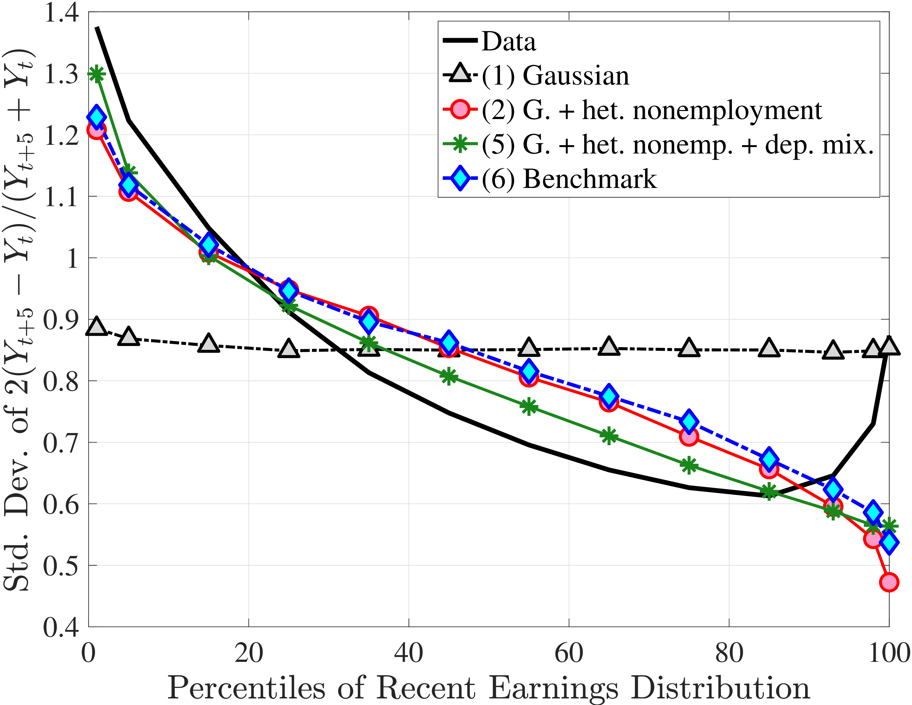
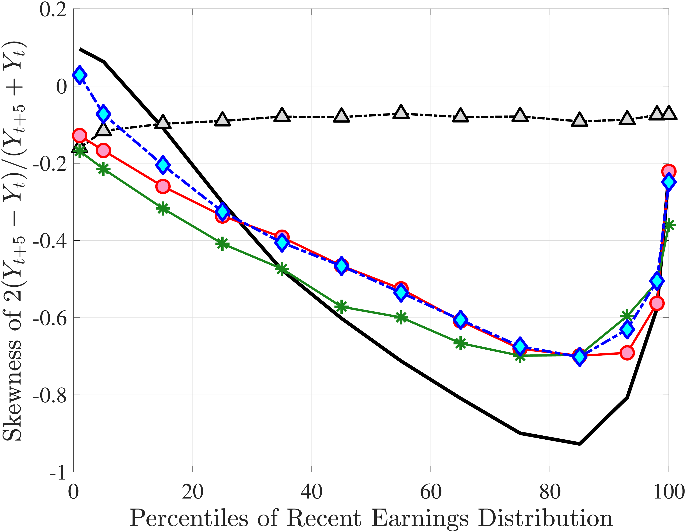
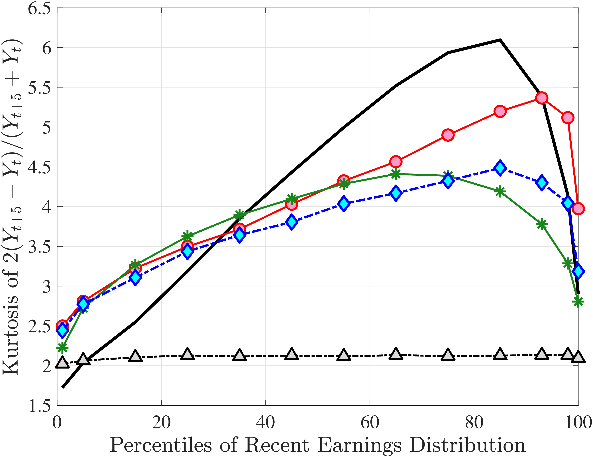
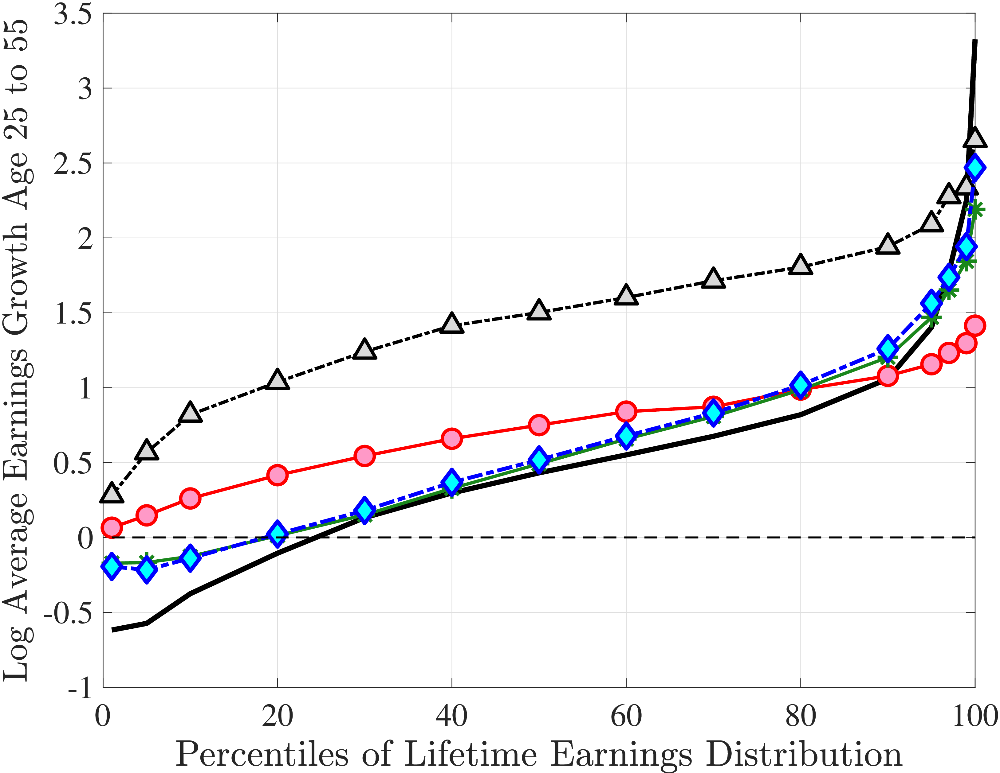
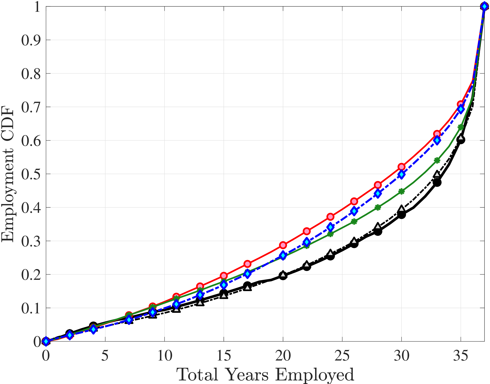
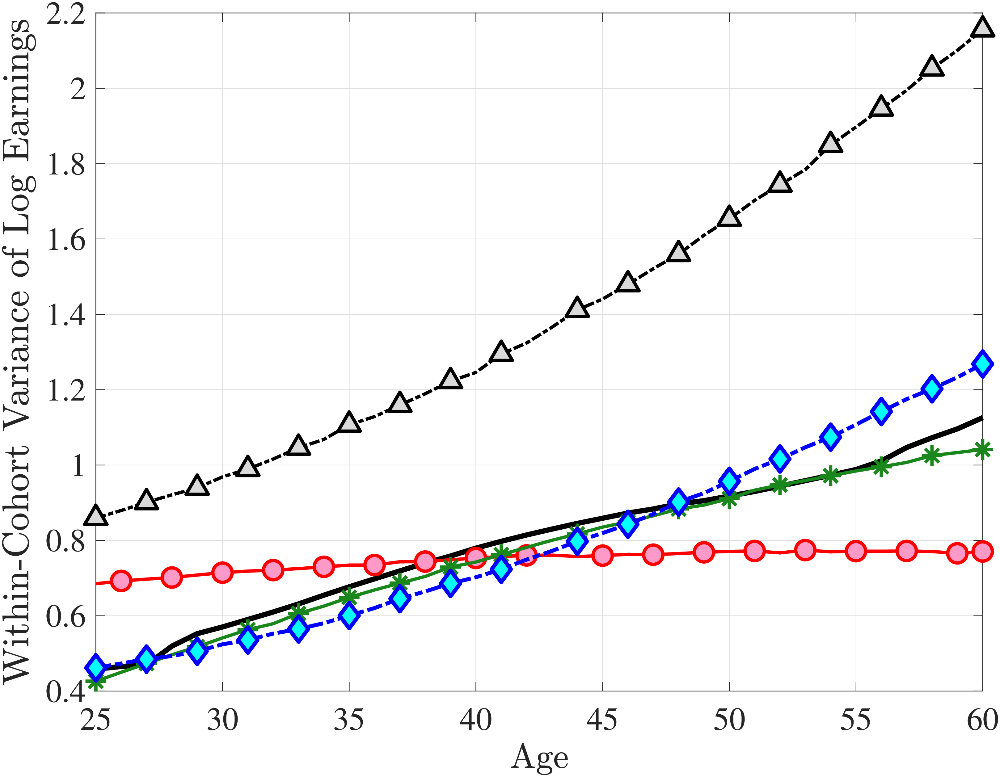
Introducing Nonemployment Shocks
We first introduce nonemployment shocks (\(\nu _{t}\)) to Model (1) to improve the fit by allowing the model to match the employment CDF more easily and leaving more flexibility for matching other moments. Another motivation is to investigate a common conjecture that the negative skewness could be entirely due to unemployment (disaster) shocks. Finally, unemployment shocks are a common feature in quantitative models, so it is instructive to understand their contribution to the fit to the data.
Heterogeneity and state-dependence in nonemployment risk
In Model (2), we allow \(p_{\nu}\) to depend on age and the persistent component \(z_{t}\) (equation (8)).30 The estimated value of \(\lambda =0.03\) implies that 97% of nonemployment spells last for the entire year, so \(\nu\) is best thought of as a full-year nonemployment shock. Importantly, there is striking heterogeneity in nonemployment probability: It varies from 18.2% for the bottom 10% RE workers, to 5.8% for the median, and further down to 0.8% for the top 10% (when averaged across age groups).31 Put differently, those in the bottom decile experience a full-year nonemployment spell about every 5 years, whereas the majority of top decile workers do not experience this at all (i.e., every 125 years). Hence, Model (2) captures the extreme concentration of nonemployment at the bottom of the income distribution. Further, nonemployment risk falls with age, from 7.9% for the first age group to 6.1% for the last age group. Finally, with these state-dependent nonemployment shocks, the model fits the data with a smaller dispersion of fixed effects (\(\sigma _{\alpha}=0.655\)) and transitory shocks (\(\sigma _{\varepsilon}=0.163\)), and with a lower persistence (\(\rho =0.97\)).
Overall, Model (2) provides a much better fit to the data than Model (1). The objective value falls by half, from 74.9 in Model (1) to 35.7, with improved fit to all sets of moments, with the exception of the nonemployment CDF. The most obvious improvement is in the variation in cross-sectional moments by RE levels, which does a fairly good job of capturing the general patterns in the data (first three panels of Figure 12).32 Although this result may seem a bit obvious—given the explicit age and income variation through \(p_{\nu}\)—it is notable for several reasons. First, during the specification search, we have experimented with various other formulations to introduce such heterogeneity (e.g., in the means or variances of innovations in normal mixtures) and did not find them to perform nearly as well. (Model (4) is a specific example of this.)
Second, Model (2) not only generates more realistic heterogeneity in skewness and kurtosis; it also captures their levels better even relative to a specification with uniform nonemployment risk. While not reported in Table IV, we estimated a simpler model with uniform nonemployment risk across workers, i.e., \(b,c,d\equiv 0\) in eq. 8 (see Table D.4). This model manages to generate some excess kurtosis but very little negative skewness. To understand why this is the case, note that nonemployment is basically a large but fully transitory shock when the risk is uniform: Every worker whose income goes down due to nonemployment in the current period bounces back to his previous income level (on average) in the next period. Consequently, uniform nonemployment stretches both tails of the income change distribution, leaving its symmetry largely unaffected but generating some excess kurtosis in annual earnings growth (less so over longer horizons). As a result, the fit improves marginally (73.4 versus 74.9 before), reflecting improvements mainly for kurtosis. Thus, uniform nonemployment risk—the way nonemployment is commonly modeled—cannot generate the significant left-skewness and very high excess kurtosis in earnings growth, especially in the persistent component of earnings.
Two additional features are worth noting. First, the fit to the lifecycle earnings growth moments improves significantly (the objective falls from 37.12 in Model (1) to 10.33 here). Second, in contrast to Model (1), which substantially overstated the rise in inequality with age, Model (2) generates a very flat age-variance profile (Figure 12f). Although, strictly speaking, this is a failure of the model, it actually represents an important step in the right direction: The model manages to match the large dispersion of earnings changes without overstating the rise in the variance of log earnings with age, which has proved challenging for the workhorse linear-Gaussian model, as we have seen for Model (1) (see also Heathcote et al. (2010a) and Daly et al. (2016) for further discussion).
Model (2) yields these improvements by attributing a sizable fraction of earnings volatility to state-dependent nonemployment shocks, which generate systematic (rather than uniform) nonemployment risk. Furthermore, these shocks (through their dependence on \(z_{t}\)) have persistent but nonpermanent effects, thereby facilitating a better fit to impulse response moments as well.
Introducing Normal Mixtures
We next investigate the potential of modeling \(\eta _{t}\) and \(\varepsilon _{t}\) as normal mixtures. To isolate their effects, we shut down nonemployment risk for the time being (\(p_{\nu}\equiv 0\)). Model (3) allows a mixture in persistent and transitory shocks. As before, we begin by restricting the mixture probabilities to be the same for all individuals.33
The fit improves appreciably relative to Model (1), with the objective value falling from 74.9 to 56.7 in Model (3).34 The improvements are largest for skewness, kurtosis, and lifetime income growth moments.35 The normal mixtures have very similar features in both models and for both \(\eta _{t}\) and \(\varepsilon _{t}\). One of the two normals looks like a rare disaster shock: It has a low probability (5%-6% for \(\eta _{t}\) and 12% for \(\varepsilon _{t}\)), large negative mean (as low as –1, the lower bound), and very large standard deviation (in excess of 140 log points). The other normal represents the “typical” earnings change, with a very high probability, slightly positive mean, and very small standard deviation. Put together, the estimated normal mixtures correspond to a world where, in most years, workers experience only small shocks to their income but, every once in a while, they are hit with a potentially very large negative shock. Notice that this description is not too far from the nonemployment shocks.
Not surprisingly, with constant mixture probabilities, Model (3) does not capture the age and income variation in higher-order moments and also overstates the slope of the age-variance profile more than any other model (Figure 12). Thus, in Model (4) we allow \(p_{z}\) to vary with age and \(z_{t}\) with the same functional form used before for \(p_{\nu}\) (eq. 8) but replace \(\xi _{t}^{i}\) with \(\xi _{t-1}^{i}\) (to avoid circularity). Model (4) generates the second best objective value (41.0) among the models so far, only behind Model (2). A large part of this improvement comes from a better match to the age and income variation in cross-sectional moments, with the exception of kurtosis for top earners (Figure D.12).
The most natural specification to which to compare Model (4) is Model (2), as they both feature age and income variation in the shock probability. That said, Model (2) is more parsimonious without the mixture in \(\varepsilon\) and fewer parameters for the exponential shock compared with a normal mixture. Yet, it provides a better fit for six of the seven sets of moments, with the employment CDF being the only exception.
In Model (5), we combine the two most promising features we found so far: the normal mixture specifications for \(\eta _{t}\) and \(\varepsilon _{t}\) from Model (3) with the state-dependent nonemployment risk from Model (2).36 The resulting model improves the fit quite a bit, with an objective value of 27.2 compared with 41.0 for Model (4) and 35.7 for Model (2). Moreover, with nonemployment shocks capturing the negative tail shocks, the normal mixture for \(\eta _{t}\) no longer features a rare disaster shock: The negative mean is no longer at the lower bound, its probability is higher (17.6%), and its standard deviation is much smaller (0.11 versus between 1.07 and 1.58 in previous models).
Compared with Model (2), the improvements are mostly in the impulse response moments (Figure 13), the age-variance profile (showing by far the best fit of any model so far), and the nonemployment CDF. Hence, while the cross-sectional moments can be generated to a large extent with either heterogeneous nonemployment risk or a mixture of normals, the nonlinear earnings persistence is better captured by combining the two features. In particular, the moderate mean reversion following extreme earnings changes (Figure 10) cannot be explained by fully transitory or permanent shocks. Nonemployment shocks are better able to generate this pattern with their long-lasting but nonpermanent effects.
Introducing Heterogeneous Income Profiles
Lastly, the most general specification, Model (6), adds a HIP component to Model (5), further improving the objective value to 22.6 from 27.2. The fit improves for the skewness and long-term impulse response moments; is comparable for the standard deviation, kurtosis, and lifetime income growth moments, and the age-variance profile; and is slightly worse for the age-inequality profile and nonemployment CDF.37 The better fit to impulse response moments mainly arises from a less persistent \(z_{t}\) (\(\rho =0.959\) vs. \(0.991\)), with the half-life of \(\eta _{t}\) shocks declining to 17 years from 77 years in Model (5).38
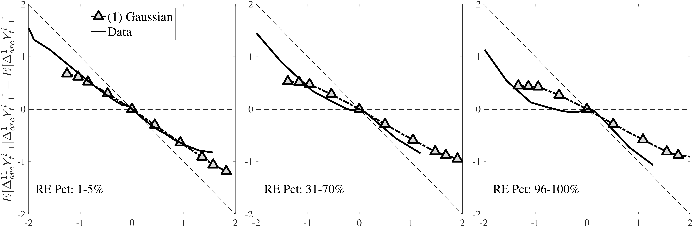
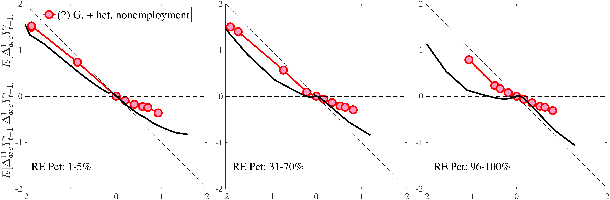
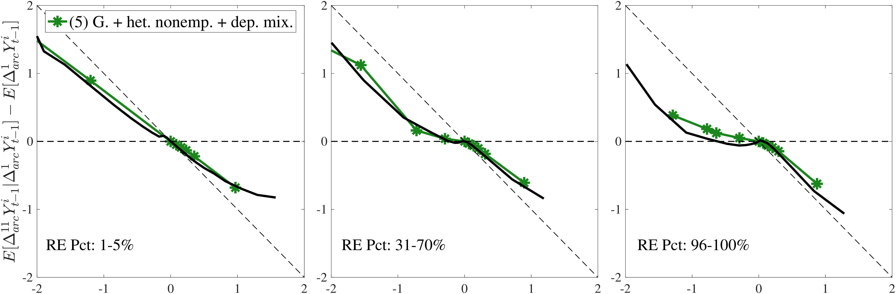
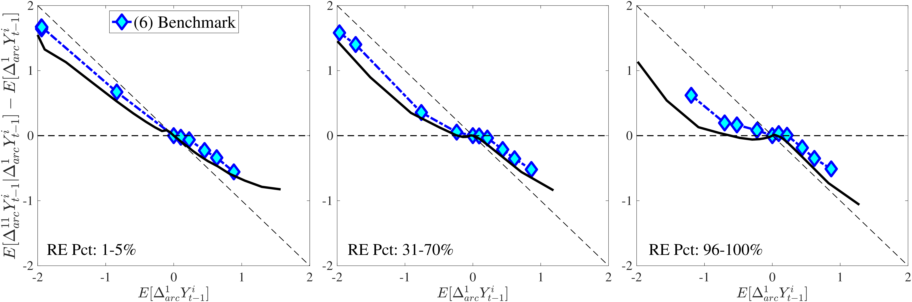
Notes: In the estimation we target arc-percent earnings growth between \(t+k\) and \(t-1\), which allows us to keep the composition of workers constant for each \(k\) (for details see Appendix D.1). To keep concepts analogous to what is shown in Section 4 (income change between \(t\) and \(t+k\)), we plot \(\mathbb{E}[\Delta _{arc}^{k+1}Y_{t-1}^{i}\mid \Delta _{arc}^{1}Y_{t-1}^{i}]-\mathbb{E}[\Delta _{arc}^{1}Y_{t-1}^{i}]\) for \(k=10\). The solid line in each panel shows the data counterpart.
Overall, we believe the benchmark process offers a reasonable trade-off between a good fit to the data and the need for a parsimonious process that can be implemented in models without increasing the computational complexity.39 Nonetheless, one could make an argument in favor of Model (5) as well. An even simpler process with a reasonable fit is Model (2), which does not have the normal mixture in \(\eta _{t}\). But the computational burden introduced by a normal mixture is often very small, so in our subjective opinion, the trade-off present in Model (2) is not likely to be worth it in many applications.
For completeness, we have also carried out a procedure for model selection. Testing different specifications and selecting one of them requires knowing the distribution of the objective value. These tests are in general carried out using the J-statistic, which has a chi-squared distribution if the efficient weighting matrix is employed. The J-test cannot be used in our setting as our weighting matrix is not the efficient one. Nevertheless, we propose two tests (see Appendix D.4 for further details). The first one tests the null hypothesis that a given specification is the true data-generating process. We apply this test to the six specifications and reject all of them (bottom panel of Table IV).
The second one tests the null hypothesis that a given specification provides as good a fit statistically as the 1-state benchmark. This test utilizes the distribution of the objective value for Model (6), which we construct through Monte Carlo simulations. We reject this hypothesis for the first five specifications in Table IV and conclude that the improved fit of the benchmark specification is also statistically significant.
6.3 Parameter Estimates of the Benchmark Process
We now turn to the parameter estimates from the benchmark process and its fit to some untargeted moments. Starting with the AR(1) process, the persistent shock is drawn about every 2.5 years (\(p_{z}=40.7\%\)) from an “unfavorable” distribution—with a negative mean and large standard deviation (\(\mu _{\eta,1}=-0.085\) and \(\sigma _{\eta,1}=0.364\))—and in the other years from a “favorable” one—with a positive mean and small standard deviation (\(\mu _{\eta,2}=0.058\), \(\sigma _{\eta,2}=0.069\)). This mixture of normals implies that innovations to the persistent component are both strongly left skewed (skewness of \(-0.87\)) and leptokurtic (kurtosis around 6.3). In contrast, transitory shocks (\(\varepsilon _{t}\)) are typically smaller: In most years (with 87% probability), they are drawn from a tight distribution, \(\mathcal{N}(-0.041,0.037^{2})\), and every eight years or so (\(p_{\varepsilon}=13.0\%\)) from a distribution with large positive mean and dispersion, \(\mathcal{N}(0.271,0.285^{2})\). Consequently, transitory shocks feature a skewness of 3.2 and a kurtosis of 15.4. However, \(\eta _{t}\) and \(\varepsilon _{t}\) are not the only sources of higher-order moments; workers also face nonemployment risk, which allows the model to generate a leptokurtic density for arc-percent changes with spikes at both ends (Figure 14a). The state dependence in nonemployment risk also leads to age- and income-varying skewness and kurtosis in persistent earnings changes. Thus, as expected, Models (3) and (4) (without nonemployment risk) find persistent shocks to be more strongly leptokurtic and left skewed than Models (5) and (6).40 We conclude that persistent innovations are key drivers of non-Gaussian features in the data.
The initial heterogeneity in earnings is captured by (i) the permanent fixed effect \(\sigma _{\alpha}\) (since \(\beta ^{i}\times 0=0\)), and (ii) \(\sigma _{z_{0}}\), the initial dispersion in \(z_{t}\), whose effect declines at rate \(\rho\). Since the latter is twice as large as the former (\(\sigma _{z_{0}}=0.71\) versus \(\sigma _{\alpha}=0.30\)), a large part of earnings inequality at age 25 reflects persistent but not permanent differences. Finally, our estimate \(\sigma _{\beta}\simeq 2\%\) is close to earlier estimates from the PSID (e.g., Haider (2001) and Guvenen and Smith (2014)), despite using different datasets and moments.
State-dependent Nonemployment Shocks. Almost all workers hit by nonemployment shocks experience full-year nonemployment (\(\lambda =0.0001\)).41 How often are these shocks realized? Similar to Model (2), our benchmark process also displays striking heterogeneity in nonemployment risk. The probability function \(p_{\nu}\) (equation 8) is hard to interpret on its own (see Figure D.14 for a 3D graph), so instead, we investigate this probability for various age and RE quantiles for workers who satisfy the conditions of the RE sample: Nonemployment risk declines modestly over a working life, from 6.9% over 25–34 to 6.1% in the next 10 years, and to 5.5% over 45–54. There is less variation in the data, with the corresponding figures being 6.8%, 6.2%, and 6.6%, respectively.
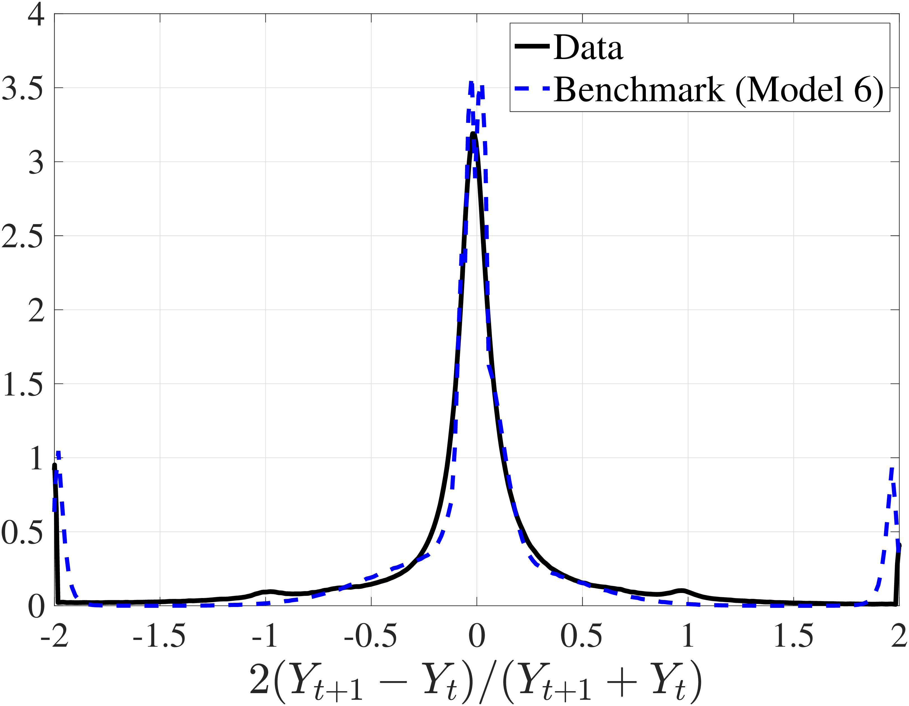
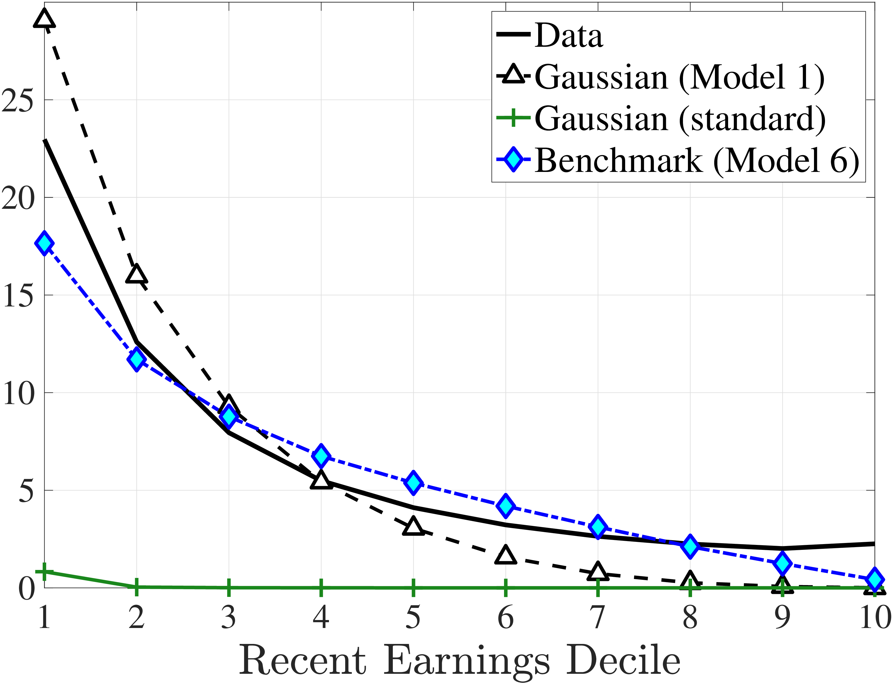
Notes: The parameters of the Gaussian process come from Model 1 in Table IV, whereas Gaussian (standard) is the same process estimated without targeting the employment CDF (see footnote 28 for its parameter estimates). The data series on Panel (B) is conditional on past 2 years’ income (in \(t-1\) and \(t-2\)).
Differences in nonemployment risk between income groups are much more pronounced (Figure 14b). In the bottom RE decile, workers experience nonemployment almost once every six years (with 17.6% probability). This probability declines sharply to 5.4% for the median quintile and to 0.4% for the top decile. The fit to the data is fairly good, though the RE variation is slightly less pronounced compared with the data.42 Perhaps surprisingly, the linear-Gaussian income process also matches this feature of the data reasonably well. As noted earlier, however, this specification’s ability to capture the nonemployment CDF comes at the cost of an implausibly steep inequality profile (Figure 12f). In fact, under a more plausible parameterization, only less than 4% of individuals ever experience a full year of nonemployment over their working life.
How does the model capture the nonlinear earnings dynamics with a single AR(1) component? The autocorrelation of persistent shocks is not precisely captured by \(\rho\), because modeling \(p_{\nu}\) as a function of \(z_{t}\) implies that nonemployment is autocorrelated even though \(v_{t}\) is drawn in an i.i.d. manner.43 Moreover, since this function is highly nonlinear, how income responds on impact to a given shock \(\eta _{t}\) and how persistent this response is depend very much on the persistent component \(z_{t}\) and the sign and magnitude of the shock. This feature, along with the normal mixture shocks, generates the asymmetric mean reversion in impulse responses in Figure 13.
To illustrate its persistence, we examine the future nonemployment risk of workers who are nonemployed in \(t\). As usual, we further condition workers on their RE in \(t-1\). Nonemployment is fairly persistent overall and more so for low-income workers: Between ages 25 and 35, 48% of the workers in the bottom RE decile experience another nonemployment spell five years after the initial nonemployment (Table V). This number declines monotonically over the RE distribution to 35% for the top decile. Furthermore, nonemployment risk becomes more persistent over the working life, particularly for high earners. For example, in the top decile, the conditional probability of nonemployment in \(t+5\) increases from 35% in the first 10 years to 50% in the last 10 (see Guvenen et al. (2017) for an empirical investigation of nonemployment persistence).
| 25-35 | 36–45 | 46–55 | ||||
| Nonemp. at \(t\rightarrow\) | \(t+1\) | \(t+5\) | \(t+1\) | \(t+5\) | \(t+1\) | \(t+5\) |
| RE Groups | ||||||
| 1–10 | 0.543 | 0.481 | 0.583 | 0.500 | 0.623 | 0.519 |
| 41–60 | 0.455 | 0.426 | 0.544 | 0.475 | 0.604 | 0.503 |
| \(91-100\) | 0.334 | 0.352 | 0.491 | 0.440 | 0.582 | 0.498 |
Autocovariance Structure of Earnings. Another set of moments that has been widely used when estimating income processes is the autocovariance matrix of log earnings in levels or changes (e.g., Abowd and Card (1989)). An important drawback of this approach, especially through the lens of our specification, is that it ignores small earnings observations below the minimum income threshold. Our estimation targets the dynamics of earnings in a more complete manner through impulse response functions, which capture the heterogeneity in the dynamics of income changes by their size and sign as well as for workers with different earnings levels (Figure 13).
For completeness and consistency with earlier work, we report these moments and show the benchmark specification’s fit to them in Appendix D.6. In our data, consistent with earlier work using survey data (Meghir and Pistaferri (2004)), the autocovariance of earnings growth approaches zero quickly after a couple of lags. Our model generates a similar pattern, although the autocovariances for smaller lags tend to be closer to zero than in the data. Modeling the transitory component as a moving average of order \(q\) may fix this shortcoming (see Meghir and Pistaferri (2004)). Furthermore, MaCurdy (1982a) noted that if a HIP component is present (\(\sigma _{\beta}^{2}>0\)), the autocovariance of one-year log earnings growth should turn positive at longer lags. In the data, this test would not reject \(\sigma _{\beta}^{2}=0\). Interestingly, MaCurdy’s test reaches a similar conclusion in data simulated from the benchmark process, which features a sizable HIP component (see Guvenen (2009) for a discussion on the reliability of this test).
Discretizing the Benchmark Income Process. Another advantage of building on the linear-Gaussian framework is that existing methods can be adopted to discretize our income process. After all, the benchmark specification is still within the realm of first-order Markov processes, with the two important additions being the normal mixture shocks in transitory and persistent components and the state-dependent nonemployment shocks. The standard Tauchen (1986) methodology does not take a stance on the distribution of shocks. Nevertheless, there are complications that arise due to the nonnormalities. The key issue is the placement of grid points in the discretized space. The negative skewness and high kurtosis require points to be irregularly placed (see Civale et al. (2016) for the optimal grid placement).
Moreover, another crucial task is to capture the nonlinearities in the nonemployment probability. How well these are captured by a discretization depends on how fine the grid points of the persistent component are in the region where nonemployment risk is highly nonlinear. Thus a given level of precision requires many more grid points relative to the standard process. Therefore, in ongoing work (Guvenen et al. (2018)), we choose not to discretize the shock distribution and use quadrature methods instead.
7 Concluding Thoughts
Using earnings histories of millions of U.S. workers, we have studied non-Gaussian and nonlinear earnings dynamics and reached the following conclusions: The distribution of earnings growth is left skewed and leptokurtic. Critically, these features vary substantially over the life cycle and across the earnings distribution: Higher-income and older workers on average face a more left-skewed and leptokurtic earnings growth. Finally, earnings changes display asymmetric persistence: Increases for high earners are quite transitory, whereas declines are very persistent; the opposite is true for low earners.
By targeting these nonparametric facts, we estimated an earnings process that allows for normal mixture innovations to the persistent and transitory components and a long-term nonemployment shock with a realization probability that varies with age and earnings.44 We found that this state-dependent employment risk generates systematic recurring nonemployment with scarring effects, which is important to match the data.
Our empirical findings are broadly consistent with job ladder models, in which workers see little earnings change in most years but once in a while experience a large change due to unemployment or an outside offer. However, whether existing models can be quantitatively consistent with the large lifecycle and income variation in earnings dynamics is an open question (see Hubmer (2018) and Karahan et al. (2019)).
Are non-Gaussian features important for household consumption-savings behavior? Consider a household with constant relative risk aversion preferences that pays a risk premium \(\pi\) to avoid consumption risk by a random proportion \((1+\tilde{\delta})\).45 When \(\tilde{\delta}\) is Gaussian with zero mean and a variance of 0.01, \(\pi\) is \(4.9\%\), compared to 22.2% when \(\tilde{\delta}\) has a skewness of \(-2\) and a kurtosis of 30. While this back-of-the-envelope calculation is meant to be illustrative (e.g., what is relevant for consumption is the dynamics of disposable household income, whereas our facts pertain to male earnings), Guvenen et al. (2018), De Nardi et al. (forthcoming), and Arellano et al. (2017) find that the substantial welfare costs of non-Gaussian income risk carry over to richer and more realistic models.
That said, incorporating nonlinear, non-Gaussian earnings dynamics into quantitative models is still in its infancy. Building on the evidence in Guvenen et al. (2014), Constantinides and Ghosh (2016) and Schmidt (2016) show that an incomplete markets model with procyclical skewness generates plausible asset pricing implications. McKay (2014) and Busch and Ludwig (2020) study cyclical consumption dynamics of these skewness fluctuations and Campbell et al. (2020) investigate mortgage design features for macroeconomic stabilization in their presence. Targeting the moments documented here, Golosov et al. (2016) show that a non-Gaussian process implies a substantially higher optimal top marginal income tax compared with a traditional Gaussian calibration, and Kaplan et al. (2016) introduce leptokurtic idiosyncratic risk in a New Keynesian model to generate a realistic portfolio distribution. Finally, using our benchmark process, Catherine et al. (2020) simulate Social Security retirement wealth and revisit trends in wealth inequality. We hope our findings will further feed back into economic research and policy analyses.
Supplementary Appendix
8 Data Appendix
Constructing a nationally representative panel of males from the MEF is relatively straightforward. The last four digits of the SSN are randomly assigned, which allows us to pick a number for the last digit and select all individuals in 1978 whose SSN ends with that number.46
The measure of wage earnings in the MEF includes all wages and salaries, tips, restricted stock grants, exercised stock options, severance payments, and many other types of income considered remuneration for labor services by the IRS as reported on the W-2 form (Box 1). This measure does not include any pre-tax payments to IRAs, retirement annuities, independent child care expense accounts, or other deferred compensation. We apportion 2/3 of the self-employment income as labor income. Given the lack of direct data on this, the 2/3 allocation has been the convention adopted by the literature as well as the PSID. In a previous version we ignored self-employment income altogether and found similar results, leading us to believe that the exact allocation matters very little.
Finally, the MEF has a small number of extremely high earnings observations. For privacy and confidentiality reasons, we cap (winsorize) observations above the 99.999th percentile of the year-specific income distribution. For background information and detailed documentation of the MEF, see Panis et al. (2000) and Olsen and Hudson (2009).
| # Observations in Each RE Percentile Group | ||||
| Age group | Median | Min | Max | Total (’000s) |
| 28-34 | 141,914 | 75,417 | 147,867 | 13,593 |
| 35-44 | 202,203 | 103,688 | 210,169 | 19,193 |
| 45-54 | 171,043 | 91,058 | 180,318 | 16,312 |
Table A.1 shows some sample size statistics regarding the sample used in the cross-sectional moments. Recall that we compute these statistics for each age-year-recent earnings percentile and aggregate them across years. Therefore, sample sizes refer to the sum across all years of a given age by percentile group. Each row reports the median, minimum, maximum, and total number of observations used to compute the cross-sectional moments for a given age group. Note that even the smallest cell has a sample size of more than 75,000 on which the computation of higher-order moments is based.
8.1 Imputation of Self-Employment Income Above SSA Taxable Limit
We restrict our main sample for cross-sectional and impulse response moments to years between 1994 and 2013 during which neither self-employment income nor wage/salary income is capped. However, this sample period–covering only 20 years–is too short to construct reliable measures of lifetime incomes of individuals. For this purpose, lifetime income moments in section 5 are computed using the whole sample that covers 36 years between 1978 and 2013. But self-employment income is capped by the SSA maximum taxable earnings limit before 1994. In this section we introduce a methodology to impute self-employment income above the top code for years before 1994, and show that imputing self-employment income has a negligible effect on our results.
Let \(y_{t}^{max}\) be the official SSA maximum taxable earnings limit in year \(t\). Our goal is to impute the uncapped (unobservable) self employment income measure, \(\tilde{y}_{i,t}^{SE}\) for individuals who have self-employment income around the maximum taxable earnings limit reported in the MEF data specified by threshold \(\chi y_{t}^{max}\) (i.e., \(y_{it}^{SE}\geq \chi y_{t}^{max}\)), where \(\chi <1\).47
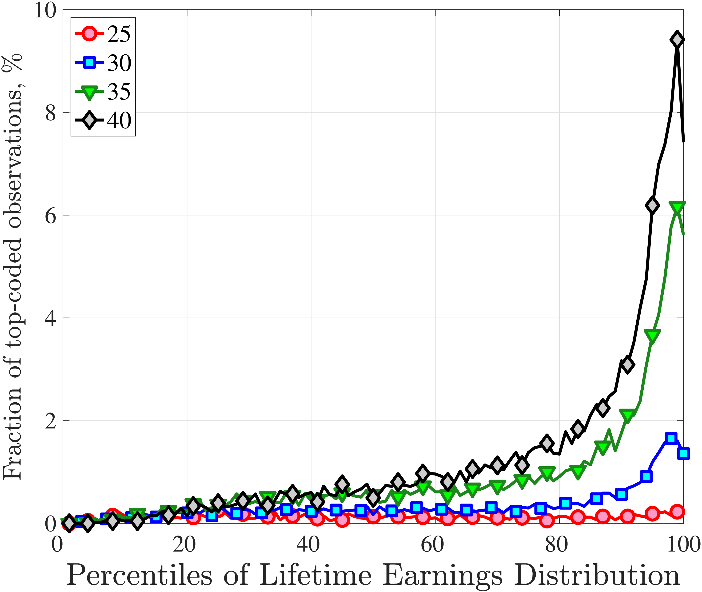
We then use these regression coefficients to impute the uncapped self-employment income before 1994 for individuals who have SE income above the limit \(\chi y_{t}^{max}\) reported in the MEF data. For this purpose, we randomly assign individuals to quantiles \(\tau =1....75\) in our lifetime income sample. Then, the imputed self-employment income for an individual in age group \(h\) with quantile \(\tau\) who has recorded self-employment income above the limit \(\chi y_{t}^{max}\) in year \(t=1981,1981,...1993\) is given by the following equation:48
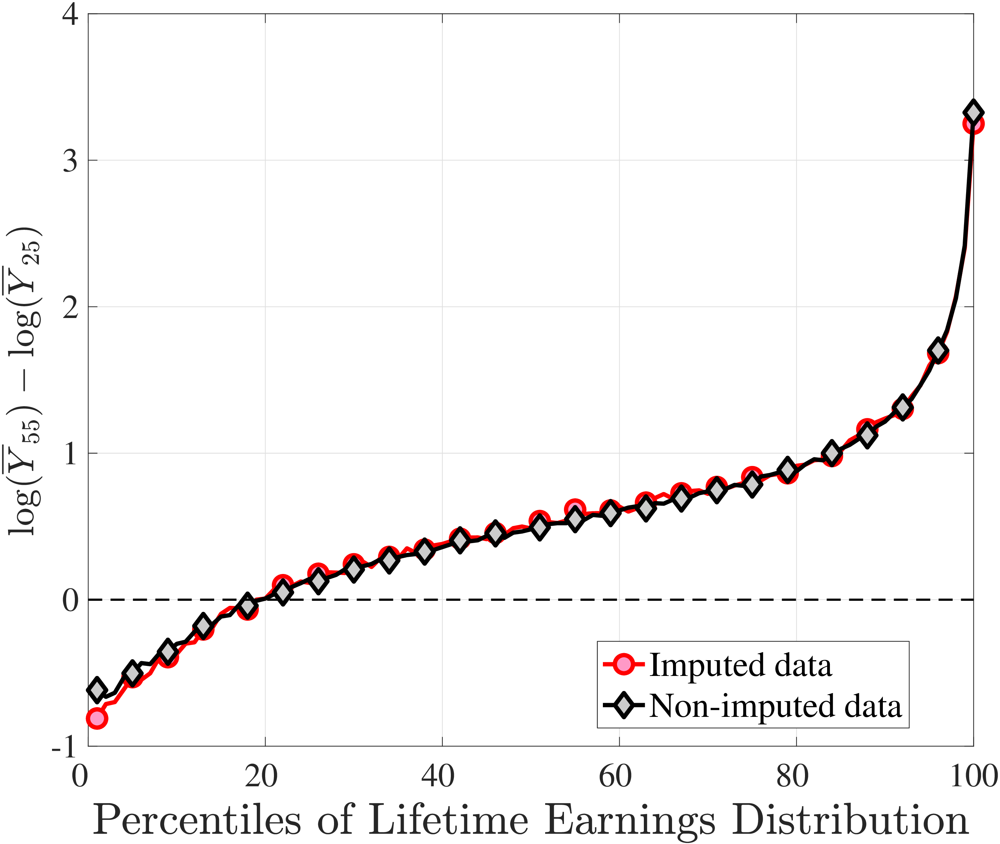
Figure A.1 plots the fraction of top-coded self-employment income observations against the percentiles of lifetime earnings distribution at ages 25, 30, 35, and 40 in our imputed lifetime income sample.49
Furthermore, Figure A.2 plots the lifetime income growth between 25 and 55 against lifetime earnings percentiles using imputed and nonimputed data, which is already shown in Figure 11a. The two series are almost indistinguishable, indicating that top coding has very little effect on lifetime income growth. This is because only a very small number of workers are affected by the top coding; those who had very high self-employment income before 1994 or when the cohort was younger than age 41.
9 Derivation of Higher-Order Moments of Log Change
Let’s suppose that the earnings dynamics are given by the commonly used random-walk permanent/transitory model in which i.i.d. permanent (\(\eta _{t}^{i}\)) and transitory (\(\varepsilon _{t}^{i}\)) innovations are drawn from some general distributions \(F_{\eta}\) and \(F_{\varepsilon},\) respectively. Then, the \(k-\)year log growth of earnings is given by: \[ \Delta _{\text{log}}^{k}y_{t}^{i}=y_{t+k}^{i}-y_{t}^{i}=\sum _{j=t+1}^{t+k}\eta _{j}^{i}+\varepsilon _{t+k}^{i}-\varepsilon _{t}^{i}. \]
Let’s denote the variance, skewness, and excess kurtosis of distribution \(F_{x},x\in \{\eta,\varepsilon \}\) by \(\sigma _{x}^{_{2}}\), \(\mathcal{S}_{x}\), and \(\mathcal{K}_{x}\), respectively. Then the variance is given by: \[ \sigma ^{2}(\Delta _{\text{log}}^{k}y_{t}^{i})=k\sigma _{\eta}^{2}+2\sigma _{\varepsilon}^{2}. \]
In order to derive the skewness of \(\Delta _{\text{log}}^{k}y_{t}^{i}\) we use the following properties:
\[ \begin{aligned} \mathcal{S}(kx) &= \mathcal{S}_{x},\text{for any}k>0,\\ \mathcal{S}(x+y) &= \left (\frac{\sigma _{x}}{\sigma _{x+y}}\right)^{3}\times \mathcal{S}_{x}+\left (\frac{\sigma _{y}}{\sigma _{x+y}}\right)^{3}\times \mathcal{S}_{y},\\ \mathcal{S}(x-y) &= \left (\frac{\sigma _{x}}{\sigma _{x+y}}\right)^{3}\times \mathcal{S}_{x}-\left (\frac{\sigma _{x}}{\sigma _{x+y}}\right)^{3}\times \mathcal{S}_{y}. \end{aligned} \]
Then:
\[ \begin{aligned} \mathcal{S}(\Delta _{\text{log}}^{k}y_{t}^{i}) &= \sum _{j=t+1}^{t+k}\left (\frac{\sigma _{\eta}}{\sigma ^{2}(\Delta _{\text{log}}^{k}y_{t}^{i})}\right)^{3}\times \mathcal{S}_{\eta}\\ &\quad + \left (\frac{\sigma _{\varepsilon}}{\sigma ^{2}(\Delta _{\text{log}}^{k}y_{t}^{i})}\right)^{3}\times \mathcal{S}_{\varepsilon}-\left (\frac{\sigma _{\varepsilon}}{\sigma ^{2}(\Delta _{\text{log}}^{k}y_{t}^{i})}\right)^{3}\times \mathcal{S}_{\varepsilon}\\ &= \frac{k\sigma _{\eta}^{3}S_{\eta}}{\sigma ^{3}(\Delta _{\text{log}}^{k}y_{t}^{i})} \end{aligned} \]
In order to derive the kurtosis of \(\Delta _{\text{log}}^{k}y_{t}^{i}\) we use the following properties:
\[ \begin{aligned} \mathcal{K}(kx) &= \mathcal{K}_{x},\text{for any}k>0,\\ \mathcal{K}(\sum _{j=1}^{k}x_{j}) &= \sum _{j=1}^{k}\left [\left (\frac{\sigma _{x_{j}}}{\sigma (\sum _{j}x_{j})}\right)^{4}\cdot \mathcal{K}_{x_{j}}\right]. \end{aligned} \]
We obtain:
\[ \mathcal{K}(\Delta _{\text{log}}^{k}y_{t}^{i})=\frac{k\times \sigma _{\eta}^{4}}{\sigma ^{4}(\Delta _{\text{log}}^{k}y_{t}^{i})}\mathcal{K_{\eta}}+\frac{2\times \sigma _{\varepsilon}^{4}}{\sigma ^{4}(\Delta _{\text{log}}^{k}y_{t}^{i})}\mathcal{K}_{\varepsilon}. \]
10 Appendix: Robustness and Additional Figures
This section reports additional results from the data. Section C.1 reports the cross-sectional moments of one-year earnings growth. Section C.2 shows the cross-sectional moments of one-year and five-year arc-percent changes of earnings. Section C.3 presents several features of the data on log earnings changes that are mentioned in the paper but are relegated to the appendix. In Section C.4 we show several moments of persistent earnings changes based on the measure introduced in Section 3.4. Section C.5 provides further analysis regarding the higher-order moments of job stayers and switches. Section C.6 documents cross-sectional moments using a much broader sample and shows that the changes in higher-order moments are not driven by the particular sample selection criteria used in the main text. In Section C.6 we present properties of earnings changes in survey data. Section C.8 investigates the role of Social Security Disability Income in our findings. Finally, Section C.9 shows several results about the lifecycle profile of earnings and employment that were left out of the main analysis.
10.1 Cross-Sectional Moments of One-Year Log Earnings Growth
Throughout the main text, we showed the cross-sectional moments of five-year (log) earnings growth. Figures C.1–C.4 show analogous features of the data for one-year earnings growth.
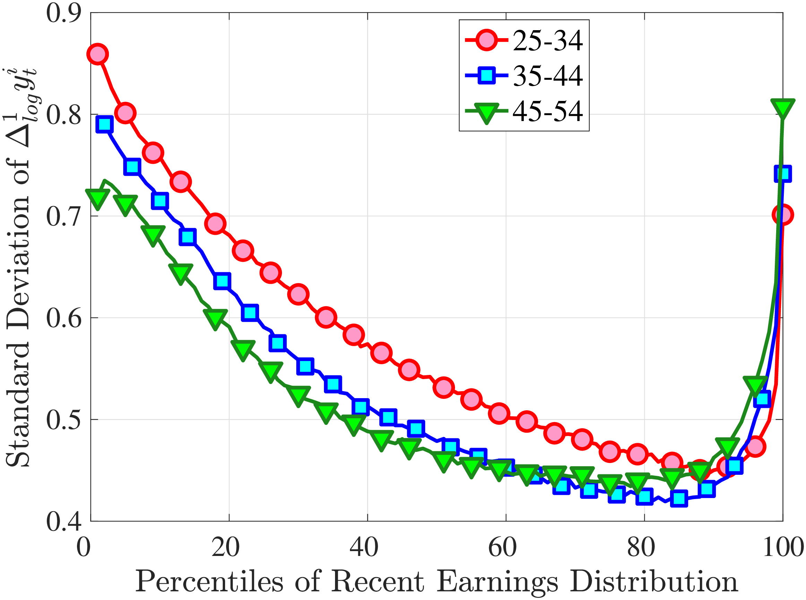
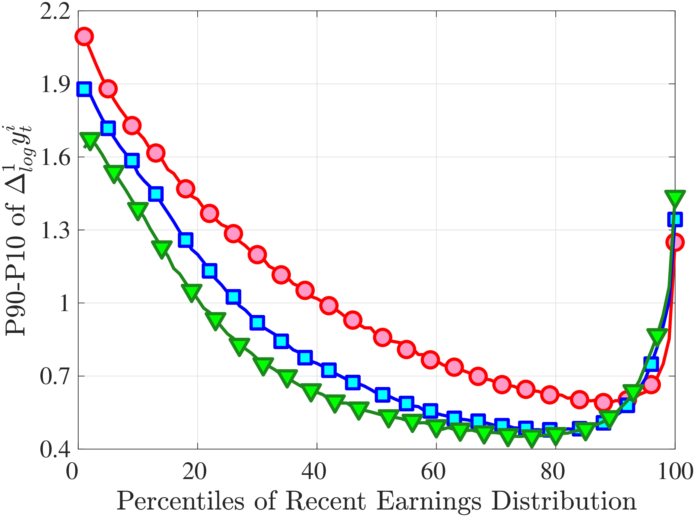
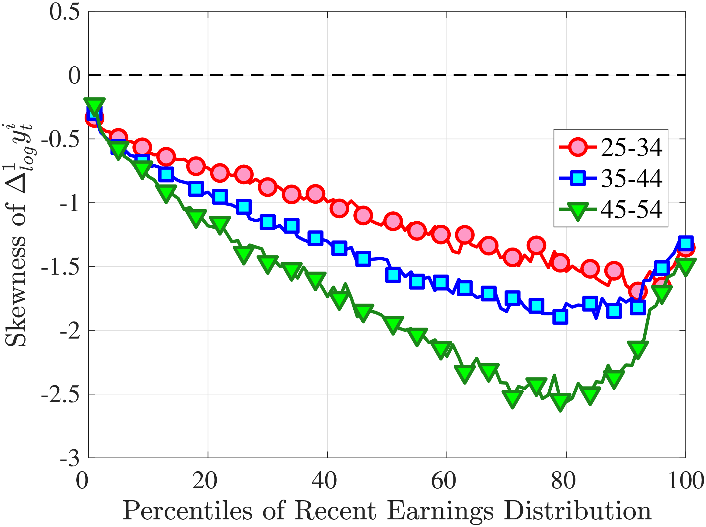
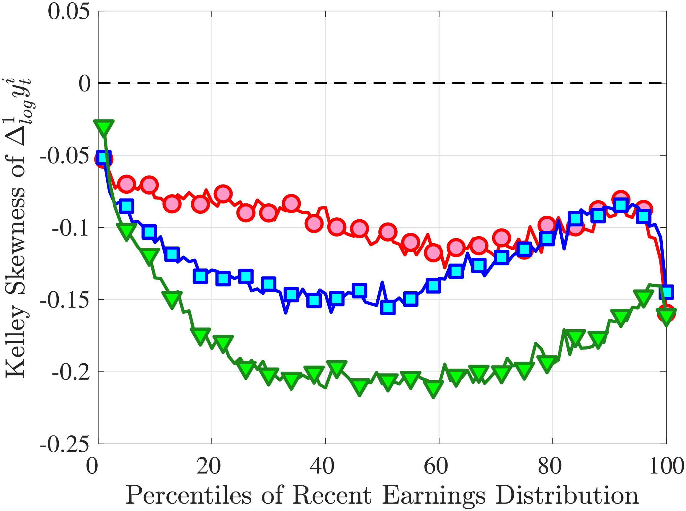
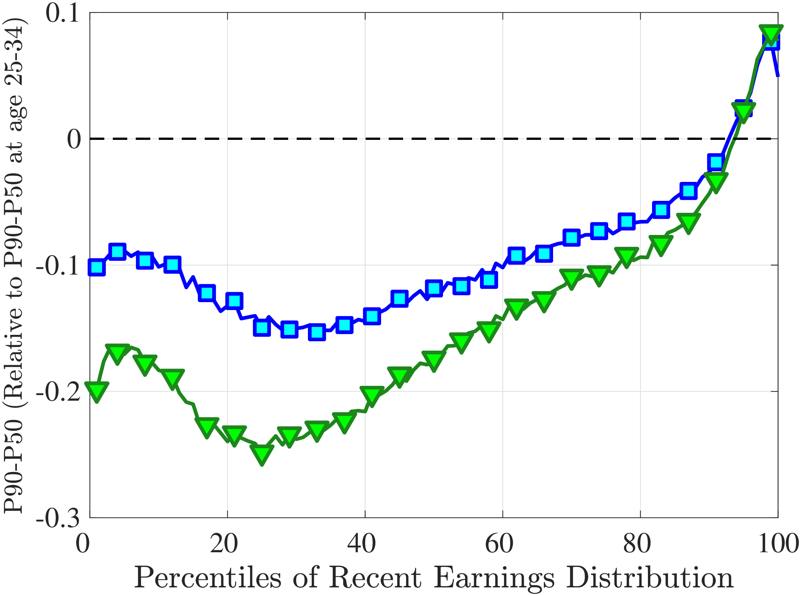
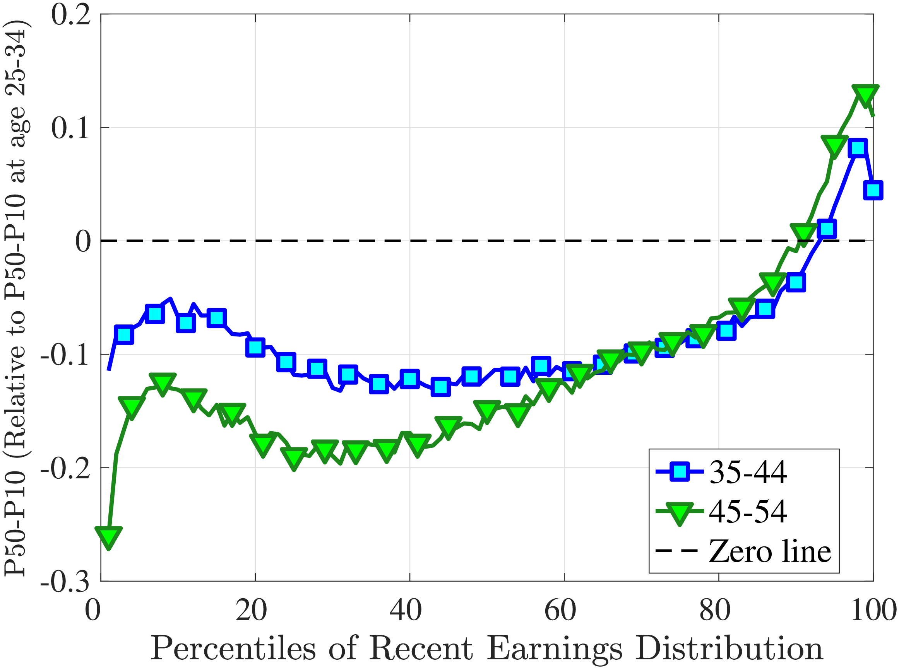
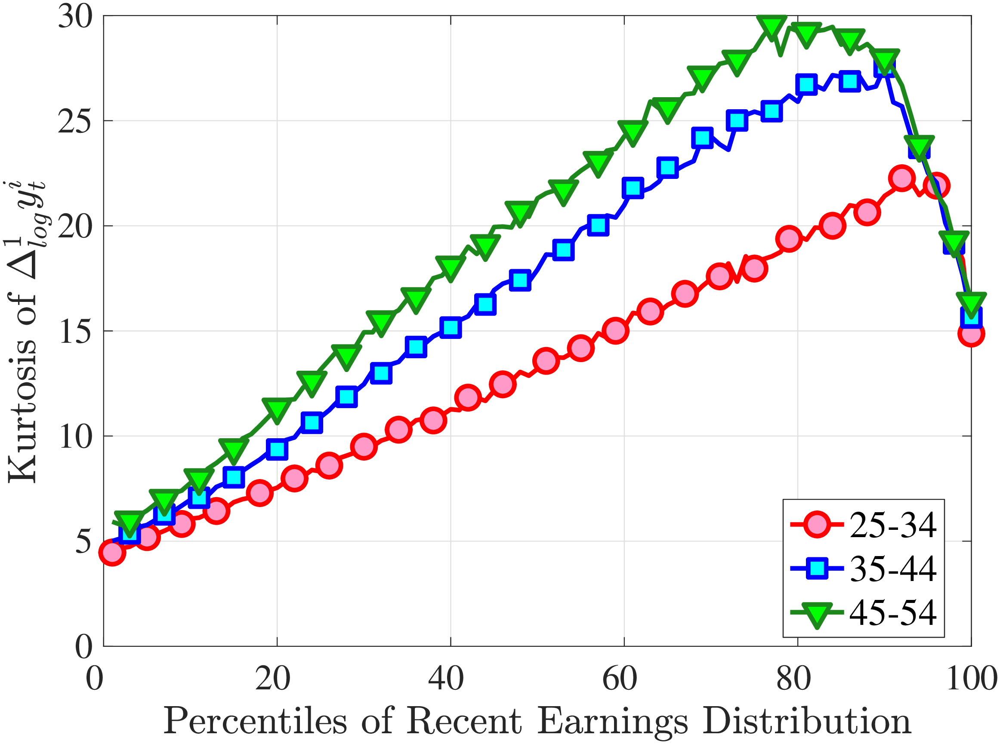
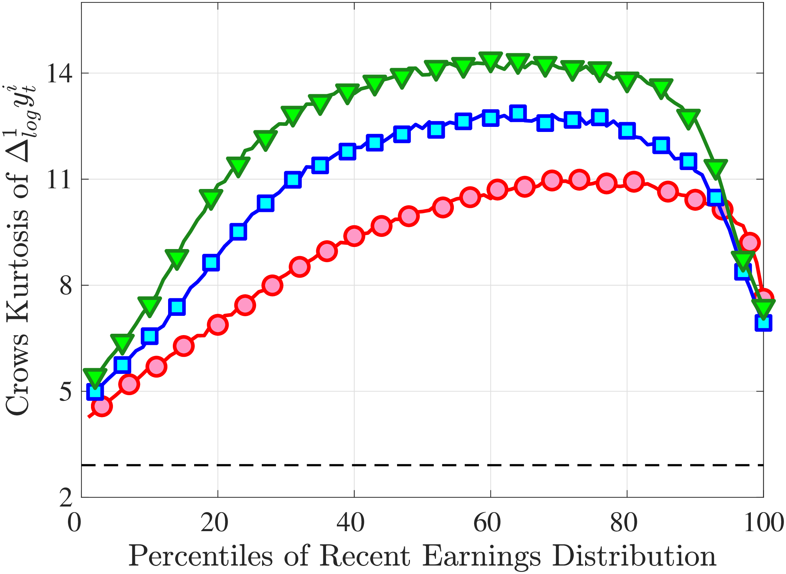
10.2 Arc-Percent Moments
In the main text, we documented moments of log earnings changes. In doing so, we are forced to drop observations close to zero to obtain sensible statistics. However, as we discuss in Section 2, such observations contain potentially valuable information, as they inform us about very large changes in earnings caused by events such as long-term nonemployment. To complement our analysis, this section reports the cross-sectional moments of arc-percent changes defined in Section 2, which we reproduce here for convenience: \[ \text{arc percent change:}\quad \Delta _{\text{arc}}Y_{t,k}^{i}=\frac{Y_{t+k}^{i}-Y_{t}^{i}}{\left (Y_{t+k}^{i}+Y_{t}^{i}\right)/2}. \] This measure allows computation of earnings growth even when the individual has zero income in one of the two years \(t\) and \(t+k\). Section C.2.1 shows the moments of one-year arc-percent change, and C.2.2 shows the moments of five-year change.
10.2.1 Moments of Annual Arc-Percent Changes
Figures C.5a–C.8b show the standardized moments of one-year arc-percent changes.
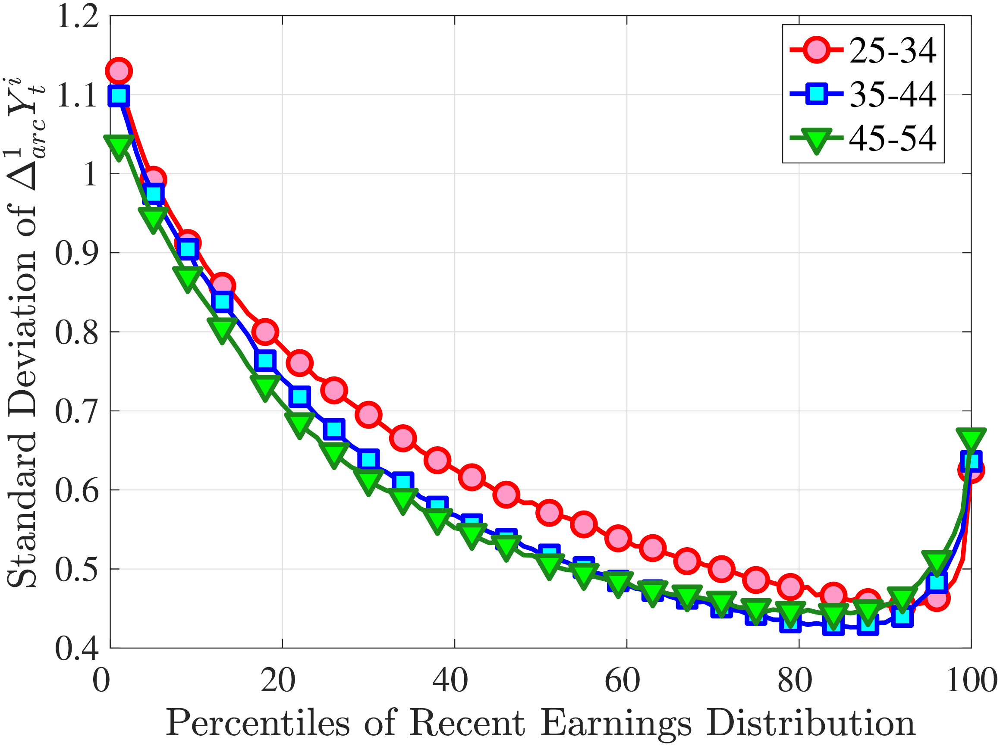
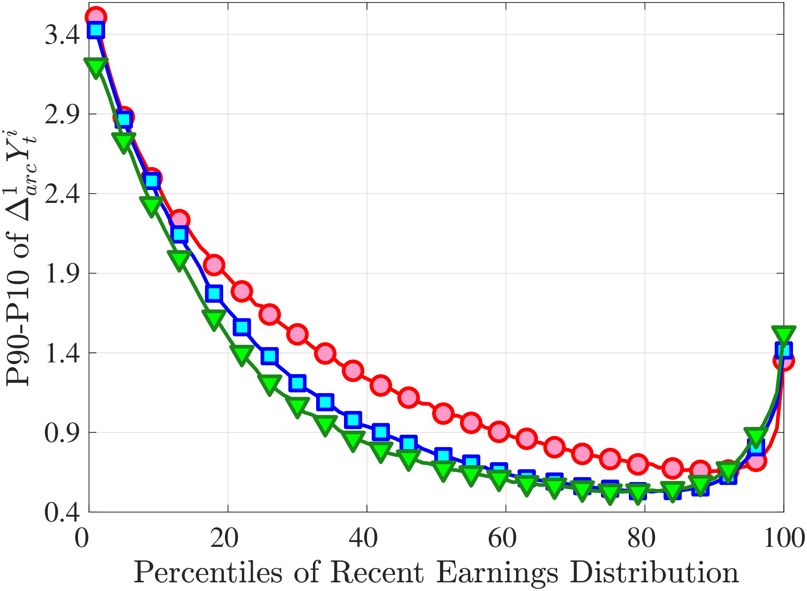
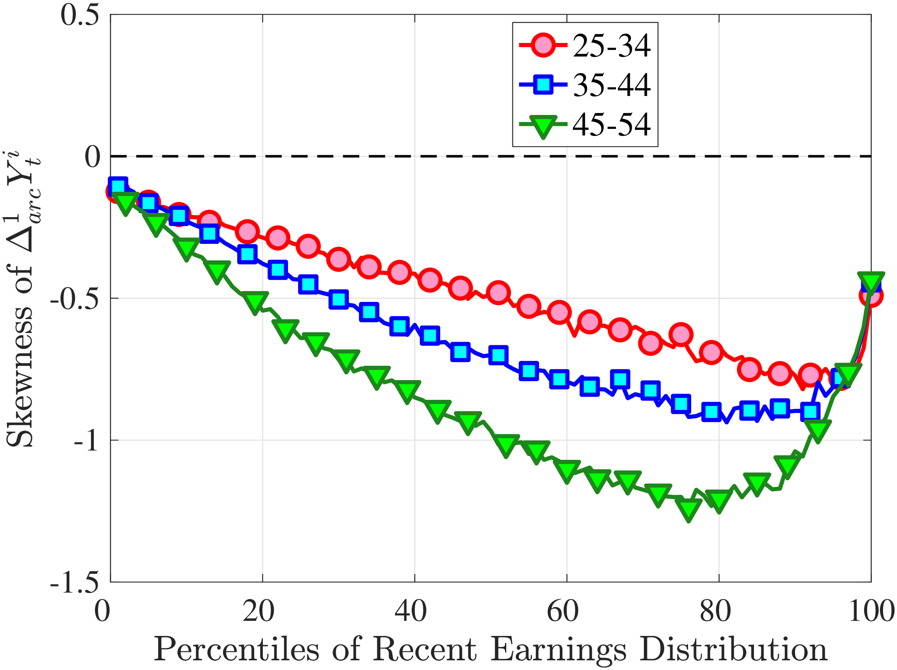
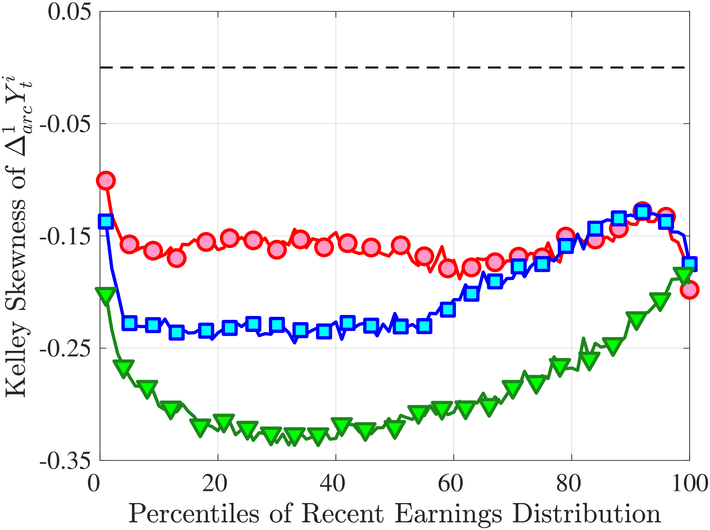
10.2.2 Moments of Five-Year Arc-Percent Changes
Figures C.9a–C.12b show the standardized moments of -year arc-percent changes.
10.3 Further Moments of Log Earnings Change
In this section, we report some additional figures of interest that are omitted from the main text due to space constraints. First, Figure C.13 plots selected percentiles of the annual and five-year log earnings change distribution for every RE percentile.
Second, Figure C.14 shows an additional measure of kurtosis proposed by Moors (1988) for one- and five-year earnings changes. Similar to the measure proposed by Crow and Siddiqui (1967), this measure is robust to outliers in the tails. Moors’ kurtosis, \(\kappa _{M}\) is defined as \[ \kappa _{M}=\frac{\left (P87.5-P62.5\right)+\left (P37.5-P12.5\right)}{P75-P25}. \] For a Gaussian distribution, Moors’ kurtosis is 1.23 (shown on dashed lines).
10.4 An Alternative Measure of Persistent Earnings Changes
In section 3, we studied the distribution of five-year earnings changes, and explained that the five-year changes reflect more of the distribution of the persistent innovations rather than transitory innovations. We also considered an alternative measure (\(\overline{\Delta}_{\log}^{5}(\bar{y_{t}}^{i})\equiv \bar{y}_{t+4}^{i}-\bar{y}_{t-1}^{i}\), where \(\bar{y}_{t+4}^{i}\equiv \log (\bar{Y}_{t+4}^{i})\) and \(\bar{y}_{t-1}^{i}\equiv \log (\bar{Y}_{t-1}^{i})\)) to deal with the caveat that our baseline measure is contaminated by transitory changes in years \(t\) and \(t+k\). The main text showed the standardized moments of this alternative measure; Figure C.15 shows the quantile-based moments.
10.5 Cross-Sectional Moments for Job-Stayers vs. Job-Switchers
In the main text, we analyzed the properties of earnings growth separately for job-stayers and job-switchers by showing quantile-based moments of five-year earnings changes. Here, we first complement our analysis by showing several features of the data that were omitted in the main text to save space. Second, we consider an alternative definition of job-stayers and investigate the cross-sectional moments of earnings according to that definition.
Figure C.16 shows the fraction of job-stayers according to our baseline definition as a function of recent earnings and age. The probability of staying with the same employer increases with recent earnings and age. For the youngest age group (25-34), the probability of staying in the same job is around 20% at the bottom of the recent earnings distribution. This fraction increases with recent earnings and reaches a peak around 60% at the 95th percentile of the RE distribution. This pattern reverses itself slightly at the top of the RE distribution. As workers age, the probability of staying with the same employer increases across the RE distribution.

Second, Figures C.17 and C.18 show the age profile of higher-order moments shown in Section 3.5. The age patterns are broadly similar across switchers and stayers: P90-10 declines slightly, skewness becomes more negative, and kurtosis increases for both job-stayers and job-switchers over the life cycle.
Next, we complement our analysis of job-stayers and job-switchers by investigating the standardized moments of one- and five-year earnings changes (as opposed to quantile-based moments analyzed in the main text). We plot these moments in Figure C.19.
Notes: The series in panels (c) and (d) have been smoothed with lowess using a span of 40%.
The results are consistent with what one might expect. Job-stayers face earnings changes that (i) have half the dispersion of job-switchers, (ii) are less negatively skewed as opposed to job-switchers, who face very negatively skewed changes, and (iii) have a much higher kurtosis than job-switchers. In fact, kurtosis is as high as 40 for annual changes and 25 for five-year changes for job-stayers, but is less than 10 for job-switchers at both horizons.
One caveat worth emphasizing again is that constructing a clean measure of job-stayers and job-switchers is not possible in our dataset, primarily because of the annual nature of the data: We observe when employment spells begin and end only at annual frequency, and therefore cannot infer if a worker worked multiple jobs at the same time or if he switched employers at some point during the year, and if so, whether the change was a direct job-to-job switch or involved a nonemployment spell in between. In our baseline measure, we have opted to be very conservative when defining job-stayers. This measure probably understates job-stayers and overstates true switchers.
We now consider an alternative definition, which is a much more conservative definition of job-switchers. According to this definition, we call an individual a job-switcher in year \(t\) if i) the largest paying employer is different in years \(t\) and \(t+1\), ii) the largest paying employers in years \(t\) and \(t+1\) contribute to at least 75% of the workers total salary, iii) the worker either has no income in year \(t+1\) from the main employer of year t, or if he does, that income in \(t+1\) is less than 25% of what he made in \(t\) (from the same employer). Figure C.20 compares the share of job-stayers according to this alternative definition (left panel) to our baseline (right panel) and Figure C.21 compares the cross-sectional moments of one-year earnings changes. By construction, the fraction of individuals identified as job-stayers and job-switchers is quite different across the two definitions. Nevertheless, all of the substantive conclusions go through regarding the differences in the cross-sectional moments of job-stayers and job-switchers.
Notes: The series in panels (c) and (d) have been smoothed with lowess using a span of 40%.
10.6 Cross-Sectional Moments by Age without Sample Selection
When choosing the sample for cross-sectional moments, we required an individual to have an earnings level above the minimum threshold in \(t-1\) and in at least two more years between \(t-5\) and \(t-2\). Figure C.22 shows that these conditions result in a substantial share of the initial sample being dropped from the analysis. This large selectivity opens up the possibility that some of our results might be specific to our final sample. Here, we relax the selection criteria and include any person for whom earnings change can be computed. Figures C.23–C.28 show the standardized and quantile-based moments of one-year and five-year earnings changes. We find that our substantive conclusions are unchanged: Dispersion of earnings changes declines with age for most of the life cycle, and earnings changes become more negatively skewed and more leptokurtic.
10.7 Survey Data and Higher-Order Moments
Panel Study of Income Dynamics (PSID)
The Panel Study of Income Dynamics has a smaller sample size compared to the CPS, but it has the advantage of following the same household over a much longer period of time. The PSID started collecting data annually in 1968 on a sample of around 5,000 households, of which 3,000 households were representative and the remaining were low-income families (the Census Bureau’s Survey of Economic Opportunities sample, SEO). We restrict our study to households in the core sample and do not use households in the SEO or the Latino subsamples. The questions on income are retrospective, meaning that respondents in a given year are asked about the previous calendar year. We analyze data for the period 1999–2013. During this period, the survey was biennial.
Our measure of labor income (variable ER16463 in 1999) is the sum of wages and salaries, bonuses, pay for overtime, tips, commissions, professional practice or trade, market gardening, miscellaneous labor income, and extra job income. To remain consistent with the rest of the paper, we focus on male heads of household between ages 25 and 55. We deflate annual earnings by the price level with the base year 2010.50
We utilize different variables in the PSID to identify individuals who experience a change in health, start experiencing disability, or experience time out of work or a job or occupation change. We now describe specifically which variables are used to construct the various measures in Table III.
Bad health. The head is asked the following question (ER15447 in 1999): “Would you (HEAD) say your health in general is excellent, very good, good, fair, or poor?” We classify someone in bad health if he reports a poor health condition (==5). Transitions into poor health are identified as someone who reported being in excellent, very good, good, or fair health in the previous survey and reports being in poor health in the current survey. This variable is available throughout our sample period.
Disability. The head is asked the following question on disability (ER15451 in 1999): “For work you can do, how much does it limit the amount of work you can do–a lot, somewhat, just a little, or not at all?” We classify someone as having some disability if he reports having an issue that affects his work a lot (==1), somewhat (==3), or just a little (==5). A new disability is coded as someone who did not have such an issue the last time and reports an issue in the current survey. This variable is available throughout our sample period.
Weeks unemployed. Some individuals report time spent unemployed in units of months (ER21322 in 2003), whereas some report it in units of weeks (ER21320 in 2003). We combine these two variables by taking the maximum reported unemployment duration in weeks. These variables are available starting in 2003.
Weeks out of labor force. The PSID asks about head’s total weeks out of the labor force in the previous calendar year (ER24087 in 2003). This variable is available throughout our sample period.
Move in response to outside events (involuntary reasons). The PSID asks about geographic moves (whether the head changed residence) and the reasons for the move (variable ER13080 in 1999). We classify someone as having moved for involuntary reasons if they report having moved for being evicted, armed services, health reasons, divorce, and health-related retirement. Other observations are classified as nonmovers. This variable is available throughout our sample period.
| Group \(\Delta y\in\) | \((-\infty,-1)\) | \([-1,-0.25)\) | \([-0.25,0)\) | \([0,0.25)\) | \([0.25,1)\) | \((1,\infty)\) |
| Share \(\%\) | \(3.8\%\) | \(14.4\%\) | \(31.2\%\) | \(31.1\%\) | \(16.5\%\) | \(3.0\%\) |
| Invol. move \(\%\) | \(6.9\%\) | \(4.5\%\) | \(3.2\%\) | \(2.6\%\) | \(3.6\%\) | \(4.3\%\) |
Occupation change. The PSID asks about the head’s occupation in the main employer, labeled as job 1 (ER21145 in 2003). This variable is available starting in 2013 and uses the 3-digit occupation code from the 2000 Census of Population and Housing. This variable is available every year since 2003. We code someone as having changed occupations if i) his occupation in the current year \(t\) is different than in the previous survey \(t-2\), ii) he reports having changed jobs (explained below), and iii) his occupation in the next survey \(t+2\) is different from his occupation in year \(t-2\). The last condition is used to deal with potential coding errors of occupations prevalent in most survey data.
Job change. We use the start year of the current main job (job 1) to identify job changes (ER21130 in 2003). If the head reports having started the job in the same year as the survey or the year before, we code him as a job-switcher. This variable is available every year since 2003.
Current Population Survey (CPS)
The CPS is a rotating panel based on addresses. Each address in the survey is interviewed for four consecutive months, then leaves the sample for eight months and then returns for another four consecutive months. Because of this rotating nature, it is possible to match at most three quarters of respondents across months. Since the survey is based on addresses and doesn’t follow households, if households move, they leave the sample and may be replaced by others that move in to the same address. To have a reliable panel, we match individual records using rotation groups, household identifiers, individual line numbers, race, sex, and age.
The Annual Social and Economic Supplement (ASEC) of the CPS, a supplement to the CPS in March, asks respondents about their earnings and hours and weeks worked during the past calendar year (variables incwage, wkslyr and hrslyr, respectively.) We use data for the period 1968–2013 and focus on males between ages 25 and 55. Similar to the SSA sample, we impose a minimum earnings threshold that corresponds to working for 13 weeks for 40 hours a week at half the minimum wage. We focus on three measures: annual earnings, average weekly wages, and average hourly wages. We regress each measure on a full set of age dummies and a race dummy (white and nonwhite). We run these regressions separately for each year and education group (college and noncollege), thereby allowing the coefficients on age and race dummies to depend on age and education. We then obtain the residuals from this regression and analyze the changes in the residuals. We use the CPS weights throughout this analysis.
Higher-order moments in CPS. In the main text, we reported higher-order moments of two-year changes in earnings and wages by age groups. Table C.1 provides similar results from the CPS. The growth measure in the CPS is annual and is therefore not easily comparable to the figures from the PSID. However, the findings are qualitatively similar
| PSID | |||||||
| All | 25–39 | 40-55 | |||||
| Gaussian | Earnings | Wages | Earnings | Wages | Earnings | Wages | |
| Skewness | 0.0 | –0.26 | –0.14 | –0.17 | –0.20 | –0.34 | –0.09 |
| Kelley Skewness | 0.0 | –0.02 | –0.02 | 0.03 | 0.016 | –0.06 | –0.04 |
| Kurtosis | 3.0 | 12.26 | 13.65 | 10.44 | 9.00 | 14.01 | 17.10 |
| Crow Kurtosis | 2.91 | 6.83 | 5.59 | 6.33 | 5.02 | 7.33 | 6.11 |
| CPS | |||||||
| All | 25–39 | 40-55 | |||||
| Earnings | Wages | Earnings | Wages | Earnings | Wages | ||
| Skewness | 0.0 | –0.15 | –0.09 | –0.09 | –0.023 | –0.21 | 0.004 |
| Kelley Skewness | 0.0 | –0.02 | –0.01 | 0.002 | –0.008 | –0.03 | –0.017 |
| Kurtosis | 3.0 | 9.29 | 11.2 | 9.12 | 10.60 | 9.53 | 12.1 |
| Crow Kurtosis | 2.91 | 7.15 | 5.93 | 6.97 | 5.72 | 7.29 | 6.05 |
10.8 The Role of Disability Income
In this section, we investigate the robustness of our findings to the inclusion of income from Social Security disability benefits (SSDI). This is particularly relevant for thinking about the tails of the distribution of earnings changes. To this end, we link to our dataset information about disability benefits from the SSA records. We then define a measure of “total income” as the sum of labor income and annual disability income. Section C.8.1 compares the cross-sectional moments of earnings changes to our baseline and Section C.8.2 does the same for lifetime income growth.
10.8.1 Cross-sectional Moments
Figures C.29–C.34 show several moments of one-year and five-year earnings changes. In each figure and for each age group, we show these moments for labor income and total income separately, where total income is labor income plus disability benefits. For each measure of income, recent earnings are re-calculated using that measure. Otherwise, these graphs are calculated in a fashion analogous to that in Section 3. The main finding here is that the inclusion of disability income has little effect on cross-sectional moments, even at low levels of earnings.
10.8.2 Lifetime income growth moments
Figure C.35 shows growth in average earnings over the life cycle. The left panel shows (log) growth in average earnings between ages 25 and 55, whereas the right panel does the same for 30 and 55. We consider two measures: labor income and total income (including disability benefits). Figure C.35 plots income growth for the two measures against lifetime income. To allow comparability across the two measures, we use labor income to construct each individual’s lifetime income and impose the sample selection criteria based on this measure. This allows us to keep the same overall sample as well as the same people in each lifetime income group. The differences in the two series are therefore only due to disability payments. We find that SSDI makes a difference for the income growth of the bottom LE individuals. For the bottom 1%, we find that SSDI can undo around 50% of earnings declines over the lifetime. This contribution declines gradually and vanishes by around the 20th percentile of the LE distribution. This result is not very surprising since bottom LE workers are more likely to be claiming disability benefits.
10.9 Additional Figures on Lifecycle Patterns of Earnings
To provide a benchmark for the analysis in Section 5, we estimate the average lifecycle profile of log earnings using a standard pooled regression of log individual earnings on a full set of age and (year-of-birth) cohort dummies using the admissible observations (as defined in Section 2) between 1994-2013.51
10.10 Concentration of Nonemployment by Lifetime Earnings Group
In this section, we investigate how concentrated (full-year) nonemployment is. We rank individuals by their lifetime earnings and group them into percentiles. For each lifetime earnings group, we compute what fraction of full-year nonemployment at a given age is accounted for by that group. These are shown in Figure C.38. For example, the bottom 1% of the lifetime earnings distribution accounts for around 50% of total nonemployment at ages 25–30.
11 Estimation
In this section we describe the steps of our estimation procedure of method of simulated moments (MSM) in more detail and provide additional estimation results.
11.1 Moment Selection and Aggregation
Accounting for zeros. Recall that in order to construct the cross-sectional moments of log growth, we have dropped individuals who had very low earnings—below \(\overline{Y}_{\text{min}}\)—in year \(t\) or \(t+k\) so as to allow taking logarithms in a sensible manner. Although this approach made sense for documenting empirical facts that are easy to interpret, for the estimation exercise, we would like to also capture the patterns of these “zeros” (or very low earnings observations), given that they clearly contain valuable information. Targeting log growth moments also creates technical issues with the optimization due to (little) jumps in the objective function as workers cycle in and out of employment. To this end, instead of targeting moments of log earnings change, we target moments of arc percent change, as defined in Section 3. According to this measure, an income change from any positive level to 0 corresponds to an arc-percent change of -2, whereas an income change from 0 to any positive level indicates an arc-percent change of 2.
Aggregating moments. If we were to match all data points for every RE percentile and every age group, it would yield more than 10,000 moments. Although such an estimation is not infeasible, not much is likely to be gained from such a level of detail, and it would make the diagnostics—that is, judging the performance of the estimation—quite difficult. To avoid this, we aggregate the 100 RE percentiles and the 6 age groups into fewer homogeneous groups. We now describe the details of this aggregation and the resulting list of moments targeted in our estimation.
1. Cross-sectional moments of earnings changes. To capture the variation in the cross-sectional moments of earnings changes along the age and recent earnings dimensions, we condition the distribution of earnings changes on these variables. For this purpose, we first group workers into 6 age bins (five-year age bins between 25 and 54) and within each age bin into 13 selected groups of RE percentiles in age \(t-1\). The RE percentiles are grouped as follows: 1, 2–10, 11–0, 21–30,…, 81–90, 91–95, 96–99, 100. Thus, we compute the three moments of the distribution of one- and five-year earnings changes for \(6\times 13=78\) different groups of workers. We then aggregate the 6 age bins into 3 age groups, \(A_{t-1}^{i}\), by taking an average of moments within each age group. The first age group is defined as young workers between ages 25 through 34, the second is between ages 35-44, and the third age group is defined as workers between the ages of 35 and 54. Consequently, we target three standardized moments (i.e., standard deviation, skewness, and kurtosis) of one- and five-year arc-percent change for three age and 13 recent earnings groups, giving us \(3\times 2\times 3\times 13=234\) cross-sectional moments. These moments are shown in Figure D.1.
2. Lifecycle earnings profile. The second set of moments captures the heterogeneity in log earnings growth over the working life across workers who are in different percentiles of the LE distribution. We target the average dollar earnings at 8 points over the life cycle: ages 25, 30,…, and 60 for different LE groups. We combine LE percentiles into larger groups to keep the number of moments at a manageable number, yielding 15 groups consisting of percentiles of the LE distribution: 1, 2–5, 6–10, 11–20, 21–30,…, 81–90, 91–95, 96–97, 98–99, and 100. The total number of moments we target in this set is \(8\times 15=120\).
3. Impulse response functions. We target average arc-percent changes in earnings over the next \(k\) years for \(k=1,2,3,5,10\) conditional on groups formed by crossing age, recent earnings \(\overline{Y}_{t-1}\), and earnings change between \(t-1\) and \(t\Delta _{arc}^{1}Y_{t-1}^{i}\): \(\mathbb{E}[\Delta _{arc}^{k+1}Y_{t-1}^{i}\mid age,\overline{Y}_{t-1},\Delta _{arc}^{1}Y_{t-1}^{i}]\).52
Within each age \(h\) and RE group \(j\), we then estimate our targets for the persistence of earnings growth. For each \(k\)-year expected future earnings growth we create a piecewise linear function of arc-percent growth between \(t\) and \(t-1\), i.e., \(\mathbb{E}_{h,j}[\Delta _{arc}^{k+1}Y_{t-1}^{i}\mid \Delta _{arc}^{1}Y_{t-1}^{i}]=f_{h,j}^{k}(\Delta _{arc}^{1}Y_{t-1}^{i})\). For this purpose, we condition workers in the data into 23 groups with respect to \(\Delta _{arc}^{1}Y_{t-1}^{i}\). We first group all workers who are full-year nonemployed in \(t\) in the first bin. Then we rank the rest of the workers into the following percentiles: 1–2, 3–5, 6–10, 11-15, 16-20, 21-25,…, 91–95, 96–98, 99–100. Then the piecewise linear function \(f_{h,j}^{k}(\Delta _{arc}^{1}Y_{t-1}^{i})\) for year-\(k\) is determined by the linear interpolation of 23 data points of average earnings growth between \(t-1\) and \(t\), \(\mathbb{E}\left [\Delta _{arc}^{1}Y_{t-1}^{i}\right]\) and their corresponding k-year future expected growth, \(\mathbb{E}[\Delta _{arc}^{k}Y_{t}^{i}]\).
For the model-simulated data, we group workers into \(2\times 8\) age and RE groups—similar to the data moments. But within each age \(h\) and RE group \(j\) we now rank workers into 10 \(\Delta _{arc}^{1}Y_{t-1}^{i}\) groups defined by the following percentiles: 1–2, 3–5, 6–10, 11–30, 31–50, 51–70, 71–90, 91–95, 96–98, 99–100. In the estimation of income processes we minimize the distance between 10 different values of \(\mathbb{E}_{h,j}^{model}[\Delta _{arc}^{k+1}Y_{t-1}^{i}\mid \Delta _{arc}^{1}Y_{t-1}^{i}]\) (for each age and RE group and \(k\)-year expectation) from the model and its corresponding data moment from the piecewise linear function, \(f_{h,j}^{k}(\Delta _{arc}^{1}Y_{t-1}^{i})\). As a result, we have a total of \(2\times 8\times 5\times 10=800\) moments based on impulse responses.
Notes: We normalize earnings changes on both the x- and y-axes such that their values at the median quantile of
\(y_{t}^{i}-y_{t-1}^{i}\)
cross at
zero.
The impulse response functions targeted in the estimation are plotted in Figures D.2a–D.2d (to keep the figures similar to their counterparts in Section 4, we plot \(\mathbb{E}[\Delta _{arc}^{k+1}Y_{t-1}^{i}\mid \Delta _{arc}^{1}Y_{t-1}^{i}]-\mathbb{E}[\Delta _{arc}^{1}Y_{t-1}^{i}]\)). More specifically, Figure D.2a plots for prime-age workers with median recent earnings the mean reversion patterns at various horizons. Figures D.2b and D.2c do the same for workers at the 90th and 10th percentiles of the recent earnings distribution, respectively. Lastly, Figure D.2d shows the variation of these impulse response functions with recent earnings.
4. Age profile of within-cohort variance of log earnings. Although the main focus of this section is on earnings growth, the lifecycle evolution of the dispersion of earnings levels has been at the center of the incomplete markets literature since the seminal paper of Deaton and Paxson (1994). For completeness and comparability with earlier work, we have estimated the within-cohort variance of log earnings over the life cycle by controlling for cohort dummies in a sample of cross-sectional moments in the data (Figure D.3). In our estimation, we compute this set of moments for a sample with income observations above the minimum income threshold. We have a total of 36 moments based on the variance of log earnings, one for each age.
5. CDF of Employment over the Life Cycle. We target the distribution of total number of years employed (\(\tilde{Y}_{t,h}^{i}\geq \overline{Y}_{\text{min},t}\)) over the life cycle. In particular, we target the cumulative distribution of total lifetime years employed as shown in Figure 11b. Thus, in total there are 35 such moments targeted in our estimation.
In sum, we target a total of \(J=234+120+800+36+35=1,227\) moments in our estimation.53
11.2 2-State Process
We also estimate a more flexible income process which has 2 AR(1) components, denoted by \(z_{1}\) and \(z_{2}\), each subject to innovations from a mixture of two normals with age and income dependent shock probabilities. Here is the full specification where \(t=\left (age-24\right)/10\) denotes normalized age and for \(j=1,2\):
\[ \begin{aligned} Y_{t}^{i} & =(1-\nu _{t}^{i})\exp \left (g\left (t\right)+\alpha ^{i}+\beta ^{i}t+z_{1,t}^{i}+z_{2,t}^{i}+\varepsilon _{t}^{i}\right)\\ z_{1,t}^{i} & =\rho _{1}z_{1,t-1}^{i}+\eta _{1t}^{i}\\ z_{2,t}^{i} & =\rho _{2}z_{2,t-1}^{i}+\eta _{2t}^{i},\\ \text{Innovations to AR(1):} & \quad \eta _{j,t}^{i}\sim \begin{cases} \mathcal{N}(\mu _{z_{j},1},\sigma _{z,1}) & \text{with pr.}p_{z_{j},t}\\ \mathcal{N}(\mu _{z_{j},2},\sigma _{z,2}) & \text{with pr.}1-p_{z_{j},t} \end{cases}\\ \text{Initial value of AR(1) process:} & \quad z_{j0}^{i}\sim \mathcal{N}(0,\sigma _{j0}),\text{}j=1,2.\\ \text{Nonemployment shocks:} & \text{equation 7}\\ \text{Transitory shock:} & \text{equation 6} \end{aligned} \]
Each AR(1) component, \(z_{1}\) and \(z_{2}\), receives a shock drawn from a mixture of two Gaussian distributions as in our benchmark specification. We again normalize the mean of innovations to the persistent components to zero; i.e., \(\mu _{z_{j},1}p_{z_{j}}+\mu _{z_{j},2}(1-p_{z_{j}})=0\).54
The age and income dependence of moments is captured by allowing the mixture probabilities to depend on age and the sum of persistent components (\(z_{1}+z_{2}\)):55
\[ \begin{aligned} p_{z_{j},t}^{i} & = & \frac{\exp \left (\xi _{j,t-1}^{i}\right)}{1+\exp \left (\xi _{j,t-1}^{i}\right)},\\ \xi _{jt}^{i} & = & a_{z_{j}}+b_{z_{j}}\times t+c_{z_{j}}\times \left (z_{1,t}^{i}+z_{2,t}^{i}\right)+d_{z_{j}}\times \left (z_{1,t}^{i}+z_{2,t}^{i}\right)\times t, \end{aligned} \]
for \(j=1,2.\) The equation for \(p_{\nu t}\) is the same as (16) but \(\xi _{j,t-1}^{i}\) is replaced with \(\xi _{jt}^{i}\). This completes the description of the 2-state process.
This 2-state process provides a significantly better fit to the targeted moments and matches top income inequality as well as the income variation in nonemployment risk (Figures D.4b and D.4a). We find that the two AR(1) components are quite different from each other, especially in terms of their persistence with \(\rho _{2}=0.98\) vs. \(\rho _{1}=0.79\) (Table D.1). We report the probability of drawing a nonemployment shock for various age and RE percentile groups for workers who satisfy the conditions of the base sample in Table D.2. The composition of large negative shocks changes from (hard-to-insure) more persistent innovations to the less persistent ones over the life cycle. The probability of receiving at least one large shock to one of the two AR(1) components or a nonemployment shock in a given year is declining in recent earnings, ranging from 29% at the low end to 9% for individuals above the 90th percentile. Finally, the age and income variation of nonemployment risk in the 2-state specification is qualitatively similar to that in the benchmark process.
Notes: The data series on Panel (A) is conditional on past 2 years of income (in \(t-1\) and \(t-2\)).
| Specification | Parameters | est. | se. | Parameters | est. | se. | |
| AR(1) Component | 2 mixtures | Persistent Components | Normal Mixture Probability | ||||
| \(\hookrightarrow\)Probability age/inc. | yes/yes | \(\rho _{1}\) | 0.791 | 0.0006 | \(a_{z_{1}}\times 1\) | -1.927 | 0.0052 |
| \(\hookrightarrow\)Probability age/inc. | yes/yes | \(\rho _{2}\) | 0.976 | 0.0006 | \(b_{z_{1}}\times t\) | 0.778 | 0.0033 |
| Nonemployment shocks | yes | \(\mu _{\eta _{1},1}\) | -0.393 | 0.0013 | \(c_{z_{1}}\times z_{t-1}\) | -1.432 | 0.0040 |
| \(\hookrightarrow\)Probability age/inc. | yes/yes | \(\mu _{\eta _{2},1}\) | -0.215 | 0.0007 | \(d_{z_{1}}\times t\times z_{t-1}\) | -1.445 | 0.0044 |
| Transitory Shocks | mix | \(\sigma _{\eta _{1},1}\) | 0.561 | 0.0012 | \(a_{z_{2}}\times 1\) | -0.099 | 0.0049 |
| HIP | yes | \(\sigma _{\eta _{1},2}\) | 0.078 | 0.0005 | \(b_{z_{2}}\times t\) | -0.915 | 0.0028 |
| \(\sigma _{\eta _{2},1}\) | 0.591 | 0.0007 | \(c_{z_{2}}\times z_{t-1}\) | -1.122 | 0.0027 | ||
| \(\sigma _{\eta _{2},2}\) | 0.002 | 0.0006 | \(d_{z_{2}}\times t\times z_{t-1}\) | 0.632 | 0.0018 | ||
| Objective value | 19.59 | \(\sigma _{z_{1},0}\) | 0.200 | 0.0008 | |||
| Decomposition: | \(\sigma _{z_{2},0}\) | 0.693 | 0.0007 | Nonemployment Shocks | |||
|
5.05 | Transitory Shocks | \(\lambda\) | 0.001 | 0.0004 | ||
|
6.93 | \(prob_{\varepsilon}\) | 7.8% | 0.0002 | \(a_{\nu}\times 1\) | -2.992 | 0.0043 |
|
4.73 | \(\mu _{\varepsilon,1}\) | 0.467 | 0.0011 | \(b_{\nu}\times t\) | -1.036 | 0.0033 |
|
6.22 | \(\sigma _{\varepsilon,1}\) | 0.420 | 0.0010 | \(c_{\nu}\times z_{t}\) | -3.391 | 0.0040 |
|
12.70 | \(\sigma _{\varepsilon,2}\) | 0.020 | 0.0004 | \(d_{\nu}\times t\times z_{t}\) | -2.120 | 0.0043 |
|
6.98 | Individual Fixed Effect | Deterministic Lifecycle Profile | ||||
|
2.28 | \(\sigma _{\alpha}\) | 0.274 | 0.0008 | \(a_{0}\times 1\) | 2.492 | 0.0013 |
|
5.83 | \(\sigma _{\beta}\) | 0.160 | 0.0002 | \(a_{1}\times t\) | 0.600 | 0.0011 |
| \(\text{corr}_{\alpha \beta}\) | 0.826 | 0.0010 | \(a_{2}\times t^{2}\) | -0.135 | 0.0003 | ||
Note: We define the deterministic lifecycle profile as a quadratic function of \(t\), \(g(t)=a_{0}+a_{1}t+a_{2}t^{2}\), where \(t=\left (age-24\right)/10\). \(y_{t}=z_{t}\) for the 1-state income process with 1 AR(1) component and \(y_{t}=z_{1}+z_{2}\) for 2-state income process with 2 AR(1) components.
| Age groups | RE (Percentile) groups | |||||||
| 25–34 | 35–49 | 45–60 | 1–10 | 21–30 | 41–60 | 71–80 | 91–100 | |
| \(p_{z_{1}}\) (\(\rho _{z_{1}}=0.79\)) | 0.122 | 0.140 | 0.167 | 0.399 | 0.204 | 0.114 | 0.053 | 0.013 |
| \(p_{z_{2}}\) (\(\rho _{z_{2}}=0.98\)) | 0.251 | 0.162 | 0.111 | 0.205 | 0.184 | 0.174 | 0.163 | 0.158 |
| \(p_{\nu}\) (nonemp.) | 0.067 | 0.054 | 0.052 | 0.188 | 0.080 | 0.040 | 0.017 | 0.004 |
| \(\text{Pr}\) (any large shock) | 0.337 | 0.279 | 0.266 | 0.531 | 0.353 | 0.270 | 0.208 | 0.169 |
Notes: This table reports how the probabilities of innovations with large standard deviations vary by age and past income. The first row reports the probability of drawing innovations to the \(z_{1}\) persistent component from the first normal distribution, \(z_{1,1}\sim \mathcal{N}(-0.393,0.561).\) The second row reports the probability of drawing innovations to the \(z_{2}\) persistent component from the first normal distribution, \(z_{2,1}\sim \mathcal{N}(-0.215,0.591).\) The last row reports the probability of any one of the events in the first three rows.
11.3 Numerical Method for Estimation
Objective function. Let \(d_{j}\) for \(j=1,...,J=1227\) denote a generic empirical moment, and let \(\tilde{d}_{j}(\theta)\) be the corresponding model moment that is simulated for a given vector of earnings process parameters, \(\theta\). We simulate the entire earnings histories of 100,000 individuals who enter the labor market at age 25 and work until age 60. When computing the model moments, we apply precisely the same sample selection criteria and employ the same methodology with the simulated data as we did with the actual data. To deal with potential issues that could arise from the large variation in the scales of the moments, we minimize the scaled arc-percent deviation between each data target and the corresponding simulated model moment. For each moment \(j\), define
\[ m_{j}(\theta)=\frac{\tilde{d}_{j}(\theta)-d_{j}}{0.5\left (|\tilde{d}_{j}(\theta)|+|d_{j}|\right)+\psi _{j}}, \]
where \(\psi _{j}>0\) is an adjustment factor. When \(\psi _{j}=0\) and \(d_{j}\) is positive, \(m_{j}\) is simply the (arc) percentage deviation between data and model moments. This measure becomes problematic when the data moment is very close to zero, which is not unusual (e.g., impulse response of arc-percent earnings changes close to zero). To account for this, we choose \(\psi _{j}\) to be equal to the 10th percentile of the distribution of the absolute value of the moments in a given set. The MSM estimator is \[ \hat{\theta}=\arg \min _{\theta}\boldsymbol{m}(\theta)'W\boldsymbol{m}(\theta), \] where \(\boldsymbol{m}(\theta)\) is a column vector in which all moment conditions are stacked, that is, \[ \boldsymbol{m}(\theta)=\left [m_{1}(\theta),...,m_{J}(\theta)\right]^{'}. \]
We choose a weighting matrix that corresponds to essentially first averaging the moments within each of the seven sets, and then assigning equal weight (1/7) to each set of moments. For example, each of the 117 cross-sectional moments (standard deviation, skewness, kurtosis) of one-year earnings growth receives a weight of \(1/(7\times 117)\), each of the 480 short-term impulse response moments receives a weight of \(1/(7\times 480)\), and so on. Recall again that the seven sets of moments are as follows: (i) the standard deviation, skewness, and kurtosis of one-year and (ii) five-year earnings growth; (iii) impulse response moments over short (at one-, two-, and three-year) horizons and iv) long (at five- and ten-year) horizons; (v) average earnings of each LE group over the life cycle; (vi) the cumulative distribution of nonemployment; and (vii) the age profile of the within-cohort variance of log earnings.
Numerical method. The global stage is a multi-start algorithm where candidate parameter vectors are uniform Sobol (quasi-random) points. We typically take about 250,000 initial Sobol points for pre-testing and select the best 1,000 (i.e., ranked by objective value) for the multiple restart procedure depending on the number of parameters to be estimated. For processes with a large number of parameters to be estimated (e.g., the benchmark process or the 2-state process), we also tried using 300,000 initial Sobol points and used the best 2,000 of them. We found this wider search for parameter values to be inconsequential for our estimates. The local minimization stage is performed with a mixture of Nelder-Mead’s downhill simplex algorithm (which is slow but performs well on difficult objectives) and the DFNLS algorithm of Zhang et al. (2010), which is much faster but has a higher tendency to be stuck at local minima. We have found that the combination balances speed with reliability and provides good results.
11.4 Model Selection
Clearly, income processes with more parameters deliver a better fit to the data. To what extent should we prefer the richer parameterized processes in Table IV? To answer this question, we now implement a procedure for model selection to the specifications in Table IV. Specifically, we carry out two tests.
Test 1. The first procedure tests the null hypothesis that a given specification is the true data-generating process. It does so, as in existing specification tests in the literature, by using the asymptotic distribution of the objective value—the J-statistic in the GMM context. Our objective value is different than the traditional J-statistic, since we do not use the efficient weighting matrix, and therefore it does not follow the chi-squared distribution. Therefore, we first derive analytically the asymptotic distribution of our objective value, which we label as the pseudo-J statistic.
Let \(W\) denote the weighting matrix and \(\boldsymbol{m}(\theta)\) the moment conditions defined by \(\tilde{d}(\theta)\) and \(d\) (equation 17) for sample size \(N.\) Let the matrix \(L\) be the Cholesky decomposition of the variance-covariance matrix of moment conditions, \(S=\mathbb{E}\boldsymbol{m}\boldsymbol{m}'\) so that \(LL'=S\).56
\[ \begin{aligned} pseudo-J_{n} & =N\boldsymbol{m}'W\boldsymbol{m}\\ & =\left (\sqrt{N}L^{-1}\boldsymbol{m}\right)^{'}L'WL\left (\sqrt{N}L^{-1}\boldsymbol{m}\right) \\ & \sim z'L'WLz,\ \ \ \ z\sim \mathcal{N}(0,I) \end{aligned} \]
The last line holds because \(\sqrt{N}L^{-1}\boldsymbol{m}\rightarrow _{d}\mathcal{N}(0,I)\) (per the central limit theorem). (If \(W\) is the efficient weighting matrix; that is, \(W=\left [\mathbb{E}\boldsymbol{m}\boldsymbol{m}'\right]^{-1}\), equation (19) boils down to the commonly used chi-squared J-statistic in Hansen (1982).)
To calculate the distribution of this statistic, we take 5,000 draws of the moment conditions (\(\boldsymbol{m}\)) from the benchmark process by repeatedly simulating data with different seeds of random variables. We use these draws to compute \(S=\mathbb{E}\boldsymbol{m}\boldsymbol{m}'\), which is then used to construct \(L\). Then, we simulate random draws from a standard normal distribution, compute pseudo-J for each draw using (19) and use these to obtain the distribution of pseudo-J (see Figure D.5a). Let \(F_{1}\) denote the CDF of this distribution.
Our test computes the probability that the pseudo-J obtained from a given specification, denoted as \(\zeta\), comes from this distribution; that is, \(1-F_{1}(\zeta)\). We apply this test to the 8 specifications in the main part of the draft and, as explained in Section 6.2, reject all of them (see the bottom panel of Table IV).
Test 2. We develop a second procedure that tests a specification against a benchmark (in this case column (8) in Table IV). First, we obtain the distribution of the objective values that can be attained from the 1-state distribution via Monte Carlo methods. Specifically, we draw 100 seeds of random variables and estimate our benchmark process by running a local minimization around the current estimates. We then use these objective values to construct the nonparametric distribution denoted by \(F_{2}\) (see Figure D.5b). Our test compares the objective value of the specification at hand (\(\zeta\)) against this distribution and reports \(1-F_{2}(\zeta)\) (see the bottom panel of Table of IV).
To sum up, our investigation reveals that the benchmark process offers the best fit to the data in a statistical sense. The data reject the hypothesis that the simpler versions analyzed in this paper can provide a similar fit.
Bootstrap Standard Errors. The last column in Table IV reports the standard errors of our benchmark process using a parametric bootstrap. In calculating the bootstrap standard errors we first simulate data using the parameter estimates reported in Table IV and create moments from simulated data. We then run the estimation for 100 different seeds of random variables by targeting these moments obtained in the previous step. For each seed of random variables we run the estimation once by employing a simplex algorithm around the original parameter estimates. We compute the standard errors using the resulting 100 parameter vectors.
11.5 Additional Estimation Results
This section contains estimation results not reported in the main text. We first report the estimates of additional specifications. Then, for all of the estimated income processes, we report some of the parameters that were not reported in Table IV. A comprehensive set of parameters for all income processes are available online for download as an Excel file on authors’ websites.
Model fit: Additional figures. Figure D.6 plots the fit on cross-sectional moments of one-year earnings changes against recent earnings, averaging over the life cycle. Figures D.7 and D.8 show how the estimated models fit the lifecycle variation in the cross-sectional moments of one- and five-year earnings changes (averaging over recent earnings). Figures D.9 and D.10 show the fit on the variation by both recent earnings and age.
Deviations of estimated models from targeted values. In the main text, we compared the model counterparts of targeted moments to the data. In this section, we show how the fit looks through the lens of our objective function in (17). Figure D.11 shows these for several key moments. More specifically, we plot equation 17 for each set of moments, with the exception of income growth moments. Recall that in our estimation we target the levels of income at various ages of different LE percentiles and not the lifecycle growth rates.
Models (3) and (4)’s fit to the data. Figures D.12 and D.13 show how models (3) and (4)—that were omitted in the main text—fit selected moments of the data.
Note: This figure shows how models (2) and (4) fit selected targets. These models were omitted from Figure 12 for the sake of clarity.
Additional parameter estimates. Table D.3 contains several parameters that were not reported in the main text in Table IV due to space constraints. These parameters include deterministic lifecycle profiles and the coefficients on age and income in the probability functions. Since it is difficult to interpret the magnitudes of the coefficients on shock probabilities, in Figure D.14 we show the 3D figure for the estimated relationship between the nonemployment shock probability and age and the persistent component for the benchmark specification.
Results for uniform nonemployment risk and non-Gaussian Persistent Shocks. Table D.4 shows estimates of two specifications that appeared in the previous version of the paper. Model (1b) is an intermediate case between Models (1) and (2): It adds uniform nonemployment risk to the Gaussian process in (1). The estimates from this model implies that 2.1% of workers are hit with a nonemployment shock each year, and about 42% of those experience full-year nonemployment. The nonemployment shocks soaks up some of the transitory variation in earnings, especially in the tails, in turn reducing the estimated standard deviation of \(\varepsilon\) relative to Model (1). The improvement in the objective value is quite limited (73.39 versus 74.87), mainly because this model manages to generate some excess kurtosis but very little negative skewness, and it largely misses the age and income variation in the moments. Furthermore, the estimated persistence is even higher (\(\rho =1.015\)) than in Model (1), moving the model further away from stationarity. it also implies an unusually large initial heterogeneity (\(\sigma _{\alpha}=1.26\)). As a result the fit deteriorates slightly for the impulse response and lifecycle income growth moments.
Model (3b) investigates the relative importance of having a mixture component in only persistent innovations. In that sense it serves as a bridge between models (1) and (3), which features normal mixtures for both transitory and persistent shocks. The objective value falls from 74.9 to 62.1, about two thirds of the improvement of Model (3) relative to (1), indicating that the data demands non-Gaussian features in persistent innovations more than in transitory ones.
| Model: | (1) | (2) | (3) | (4) | (5) | (6) | ||
| Parameters | ||||||||
| Gaussian | Benchmark Process | |||||||
| process | Parameters | Std. Err. | ||||||
| AR(1) Component | G | G | mix | mix | mix | mix | mix | |
| \(\hookrightarrow\)Probability age/inc. | — | — | no/no | yes/yes | no/no | no/no | no/no | |
| Nonemployment shocks | no | yes | no | no | yes | yes | yes | |
| \(\hookrightarrow\)Probability age/inc. | — | yes/yes | — | — | yes/yes | yes/yes | yes/yes | |
| Transitory Shocks | G | G | mix | mix | mix | mix | mix | |
| HIP | no | no | no | no | no | yes | yes | |
| Deterministic Lifecycle Profile Parameters | ||||||||
| \(a_{0}\) | \(\times 1\) | 0.740 | 2.569 | 2.547 | 2.176 | 2.746 | 2.581 | 0.0018 |
| \(a_{1}\) | \(\times t\) | 0.337 | 0.766 | -0.144 | 0.169 | 0.624 | 0.812 | 0.0011 |
| \(a_{2}\) | \(\times t^{2}\) | 0.070 | -0.152 | -0.059 | -0.100 | -0.167 | -0.185 | 0.0003 |
| Nonemployment Shock Probability Function Parameters | ||||||||
| \(a_{\nu}\) | \(\times 1\) | -3.036 | -2.495 | -3.353 | 0.0039 | |||
| \(b_{\nu}\) | \(\times t\) | -0.917 | -1.037 | -0.859 | 0.0031 | |||
| \(c_{\nu}\) | \(\times z_{t}\) | -5.397 | -5.051 | -5.034 | 0.0064 | |||
| \(d_{\nu}\) | \(\times t\times z_{t}\) | -4.442 | -1.087 | -2.895 | 0.0036 | |||
| Normal Mixture Probability Function Parameters | ||||||||
| \(a_{z_{1}}\) | \(\times 1\) | 0.05 | -0.474 | 0.176 | 0.407 | 0.0005 | ||
| \(b_{z_{1}}\) | \(\times t\) | 1.961 | ||||||
| \(c_{z_{1}}\) | \(\times z_{t-1}\) | -3.183 | ||||||
| \(d_{z_{1}}\) | \(\times t\times z_{t-1}\) | -0.187 | ||||||
Note: We define the deterministic lifecycle profile as a quadratic function of \(t\), \(g(t)=a_{0}+a_{1}t+a_{2}t^{2}\), where \(t=\left (age-24\right)/10\). \(y_{t}=z_{t}\) for the 1-state income process with 1 AR(1) component and \(y_{t}=z_{1}+z_{2}\) for the 2-state income process with 2 AR(1) components.
| (1b) | (3b) | Model: | (1b) | (3b) | |
| Uniform | Mix. | Uniform | Mix. | ||
| Nonemp. | Trans. | Nonemp. | Trans. | ||
| G | mix | Objective value | 73.39 | 62.11 | |
| — | no/no | Decomposition: | |||
| yes | no |
|
8.53 | 7.56 | |
| no/no | — |
|
39.78 | 21.14 | |
| G | G |
|
19.15 | 17.99 | |
| no | no |
|
20.72 | 22.74 | |
| Parameters |
|
32.24 | 37.73 | ||
| \(\rho\) | 1.015 | 0.998 |
|
39.63 | 26.60 |
| \(p_{z}\) | 5.9% |
|
17.63 | 16.64 | |
| \(\mu _{\eta,1}\) | \(-1.0\) |
|
3.96 | 10.29 | |
| \(\sigma _{\eta,1}\) | 0.085 | 1.580 | Model Selection p-val. | ||
| \(\sigma _{\eta,2}\) | 0.0291 | Test 1 | 0.000 | 0.000 | |
| \(\sigma _{z_{0}}\) | 0.183 | 0.340 | Test 2 | 0.000 | 0.000 |
| \(\lambda\) | 0.547 | ||||
| \(\sigma _{\varepsilon,1}\) | 0.488 | 0.371 |
Results for additional specifications. Table D.5 presents estimates from an earlier version of the paper that used a slightly different weighting matrix in the estimation. In particular, the weighting matrix used in this table first assigns 15% relative weight to the employment CDF moments. The rest of the moments share the remaining 85% weight according to the following scheme: the cross-sectional moments (standard deviation, skewness, kurtosis) collectively receive a relative weight of 35%, the lifecycle earnings growth moments and impulse response moments each receive a weight of 25%, and the variance of log earnings by age receives a weight of 15%.
The columns 7 to 15— report the estimates of 8 different specifications that are not reported in the main text. Columns (7), (8), and (9) are different versions of Column (5) of Table (IV). Namely, we model nonemployment probability as a logistic function of a number of combinations of individual fixed effect \(\alpha\) and persistent component \(z\) (similar to equation (8)). In particular, in column (7) nonemployment probability is a quadratic function of \(\alpha\). In column (8) nonemployment probability \(p_{\nu}\) is assumed to be a linear function of \(\alpha +z\) and age and their interaction. In column (9) nonemployment probability depends linearly on \(\alpha\) and \(z\) and their interaction.
Columns (10) and (11) are similar to our benchmark specification. Again they only differ in how the nonemployment shock probability is modeled. In column (10) \(p_{\nu}\) is a quadratic function of \(z\). In column (11) \(p_{\nu}\) depends on \(z\), \(z^{2}\) and age and the interaction of \(z\) and age.
In column (12) we introduce variance heterogeneity to the 1-state benchmark process. In particular, we allow the variance of each innovation from \(\mathcal{N}(\mu _{z,1},\sigma _{z,1}^{i})\) to the persistent component be individual-specific, with a lognormal distribution with mean \(\overline{\sigma}_{z,1}\) and a standard deviation proportional to \(\widetilde{\sigma}_{z,1}\), i.e., \(\text{log}\left (\sigma _{z,1}^{i}\right)\sim \mathcal{N}(\log \overline{\sigma}_{z,1}-\frac{\widetilde{\sigma}_{z,1}^{2}}{2},\widetilde{\sigma}_{z,1})\).
In the next income process (column (13)), in the 1-state benchmark process we incorporate age and income dependence into the mixture probability in innovations to the persistent component similar to equation (16).
In column (14) we introduce ex ante variance heterogeneity in the 2-state benchmark process. Thus the variance of each innovation from \(\mathcal{N}(\mu _{z_{j},1},\sigma _{z_{j},1}^{i})\) to the persistent component \(j\) is individual-specific, with a lognormal distribution with mean \(\overline{\sigma}_{z_{j},1}\) and a standard deviation proportional to \(\widetilde{\sigma}_{z_{j},1}\), i.e., \(\text{log}\left (\sigma _{z_{j},1}^{i}\right)\sim \mathcal{N}(\log \overline{\sigma}_{z_{j},1}-\frac{\widetilde{\sigma}_{z,1}^{2}}{2},\widetilde{\sigma}_{z_{j},1})\).
The last column (column (15)) shows the parameter estimates for the specification presented in column (3) but without imposing a lower bound for the mean of persistent shocks.
| Specification: | (7) | (8) | (9) | (10) | (11) | (12) | (13) | (14) | (15) | |
| Nonemp. | Nonemp. | Nonemp. | Nonemp. | Nonemp. | 1-state | 1-state | 2-state | Column (3) | ||
| depends | depends | depends | depends | depends | Benchmark | Benchmark | Benchmark | No Bound | ||
| on \(\alpha\) | on \(\alpha +z\) & age | on \(\alpha\) and \(z\) | on \(z\) and \(z^{2}\) | on \(z,z^{2},\) & age | w/ var. het. | w/ \(\eta\) het. | w/ var. het. | for \(\mu _{z,1}\) | ||
| AR(1) Component | mix | mix | mix | mix | mix | mix | mix | 2 mixtures | mix | |
| \(\hookrightarrow\)Probability age/inc. | no/no | no/no | no/no | no/no | no/no | no/no | yes/yes | yes/yes | no/no | |
| Nonemployment shocks | yes | yes | yes | yes | yes | yes | yes | yes | no | |
| \(\hookrightarrow\)Probability age/inc. | yes/\(\alpha\) | yes/\(\alpha +z\) | no/\(\alpha,z\) | no/\(z,z^{2}\) | yes/\(z,z^{2}\) | yes/yes | yes/yes | yes/yes | — | |
| Transitory Shocks | mix | mix | mix | mix | mix | mix | mix | mix | mix | |
| HIP | no | no | no | yes | yes | yes | yes | yes | no | |
| Variance Heterogeneity | no | no | no | no | no | yes | no | yes | no | |
| Parameters | ||||||||||
| \(\rho _{1}\) | 0.847 | 0.978 | 0.976 | 0.968 | 0.964 | 0.960 | 0.965 | 0.824 | 1.005 | |
| \(\rho _{2}\) | 0.979 | |||||||||
| \(p_{z_{1}}\) | 0.044 | 0.150 | 0.091 | 0.219 | 0.427 | 0.274 | 0.0124 | |||
| \(\mu _{\eta _{1},1}\) | -0.961 | -0.327 | -0.576 | -0.335 | -0.120 | -0.107 | -0.436 | -0.393 | -5.63 | |
| \(\mu _{\eta _{2},1}\) | -0.270 | |||||||||
| \(\sigma _{\eta _{1},1}\) | 1.396 | 0.689 | 0.575 | 0.304 | 0.345 | 0.433 | 0.788 | 0.620 | 0.471 | |
| \(\sigma _{\eta _{1},2}\) | 0.066 | 0.083 | 0.168 | 0.174 | 0.061 | 0.0827 | 0.195 | 0.116 | 0.148 | |
| \(\sigma _{\eta _{2},1}\) | 0.564 | |||||||||
| \(\sigma _{\eta _{2},2}\) | 0.001 | |||||||||
| \(\sigma _{\eta _{1},1}^{i}\) | 0.162 | 0.002 | ||||||||
| \(\sigma _{\eta _{2},1}^{i}\) | 0.013 | |||||||||
| \(\sigma _{z_{1},0}\) | 0.339 | 0.154 | 0.193 | 0.719 | 0.689 | 1.5042 | 0.530 | 0.189 | 0.227 | |
| \(\sigma _{z_{2},0}\) | 0.603 | |||||||||
| \(\lambda\) | 0.196 | 0.104 | 0.022 | 0.001 | 0.002 | 0.005 | 0.014 | 0.001 | ||
| \(a_{\nu}\times\) | \(1\) | -3.875 | -2.399 | -3.191 | -4.131 | -3.115 | -2.958 | -3.773 | -3.045 | |
| \(b_{\nu}\times\) | \(t,\alpha\) | -5.366 | -1.241 | -1.932 | -1.108 | -1.341 | 0.468 | -1.092 | ||
| \(c_{\nu}\times\) | \(\left [z_{t},\alpha,(\alpha +z_{t})\right]\) | -3.550 | -5.528 | -5.477 | -3.914 | -4.222 | -3.635 | -3.219 | ||
| \(d_{\nu}\times\) | \(\alpha ^{2},z^{2}\) | 0.293 | 1.611 | 0.832 | ||||||
| \(e_{\nu}\times\) | \(t[z_{t},(\alpha +z_{t})]\) | -1.837 | 0.700 | -2.403 | -3.450 | -3.560 | -2.240 | |||
| \(prob_{\varepsilon}\) | 0.227 | 0.104 | 0.239 | 0.290 | 0.105 | 0.130 | 0.115 | 0.095 | 0.210 | |
| \(\mu _{\varepsilon,1}\) | 0.115 | 0.249 | 0.146 | 0.159 | 0.296 | 0.223 | 0.340 | 0.340 | -0.09 | |
| \(\sigma _{\varepsilon,1}\) | 0.449 | 0.562 | 0.239 | 0.142 | 0.247 | 0.384 | 0.283 | 0.438 | 1.024 | |
| \(\sigma _{\varepsilon,2}\) | 0.061 | 0.042 | 0.072 | 0.022 | 0.064 | 0.048 | 0.081 | 0.025 | 0.024 | |
| \(\sigma _{\alpha}\) | 0.808 | 0.520 | 0.640 | 0.289 | 0.274 | 0.313 | 0.267 | 0.273 | 0.4367 | |
| \(\sigma _{\beta}\) | 0.194 | 0.205 | 0.217 | 0.204 | 0.182 | |||||
| \(\text{corr}_{\alpha \beta}\) | 0.630 | 0.676 | 0.489 | 0.974 | 0.435 | |||||
| Objective value | 40.33 | 28.28 | 26.19 | 23.32 | 22.11 | 21.81 | 21.74 | 18.43 | 47.9 | |
| Decomposition: | ||||||||||
|
4.86 | 4.81 | 5.31 | 5.86 | 5.93 | 5.09 | 5.95 | 4.95 | 7.92 | |
|
21.15 | 15.76 | 14.67 | 12.760 | 10.65 | 10.09 | 9.52 | 7.06 | 22.99 | |
|
6.67 | 6.04 | 4.80 | 5.63 | 5.88 | 6.32 | 6.70 | 4.70 | 13.99 | |
|
27.98 | 18.19 | 15.82 | 13.54 | 13.50 | 13.25 | 13.70 | 11.58 | 36.40 | |
|
15.10 | 10.81 | 10.39 | 9.21 | 8.39 | 8.24 | 7.84 | 8.37 | 8.94 | |
|
7.70 | 3.38 | 1.66 | 3.36 | 3.47 | 3.68 | 3.16 | 2.23 | 4.99 | |
|
6.46 | 5.71 | 7.66 | 5.94 | 6.43 | 7.14 | 6.52 | 5.86 | 8.91 | |
Note: In this table we present estimates from an earlier version of the paper for which we use a slightly different weighting matrix in the estimation. In particular, the weighting matrix used in this table first assigns 15% relative weight to the employment CDF moments. The rest of the moments share the remaining 85% weight according to the following scheme: the cross-sectional moments (standard deviation, skewness, kurtosis) collectively receive a relative weight of 35%, the lifecycle earnings growth moments and impulse response moments each receive a weight of 25%, and the variance of log earnings by age receives a weight of 15%.
11.6 Autocovariance Structure of Earnings
Another set of moments that has been widely used for decades to estimate income processes is the autocovariance of earnings in level and changes (e.g., Abowd and Card (1989)). In this section, for completeness with the earlier literature we document these moments from data along with their simulation counterparts from our benchmark specification. Tables D.6 and D.7 show autocovariance matrix of log earnings over the life cycle in levels and changes, respectively.
Following Abowd and Card (1989); MaCurdy (1982a), in figure D.15, we show the autocovariance of 1-year log earnings growth at several lags:
\[ \operatorname{cov}\left [\log \left (y_{h+1}\right)-\log \left (y_{h}\right),\log \left (y_{h+k+1}\right)-\log \left (y_{h+k}\right)\right]\quad \text{for}\quad k>1, \]
where \(\log \left (y_{h}\right)\) is log earnings at age \(h\). As usual we only include observations that are above the minimum income threshold, \(Y_{min}.\) Left panel of Figure D.15 shows that in our data, consistent with earlier work using survey data (Meghir and Pistaferri (2004)), the autocovariance of earnings growth is small and approaches to zero quickly after a couple of lags. Our model generates a similar pattern, although the autocovariance for \(k=1\) tend to be smaller and the lags \(k>1\) approach to zero (right panel of Figure D.15). Similar patterns are also clearly seen in autocorrelations of earnings from the data and our benchmark process (Figure D.16). Both in the data and in our benchmark process, the autocorrelations of earnings growth starts around -0.20 and approaches quickly to zero after a couple of lags (in the benchmark process for \(k>1\)). The small discrepancy between our process and the data for shorter lags \(k\) can be addressed by modeling the transitory component as a moving average of order \(q\) (MA(q)) process (see Meghir and Pistaferri (2004)).
Notes: Ths figure shows the autocovariance of earnings growth at several lags as shown by equation 20. The dashed lines are 95% bootstrap confidence bands. The left panel is from the SSA’s MEF and the right panel is from simulated data from our benchmark process.
MaCurdy (1982a) noted that if a HIP component is present (\(\sigma _{\beta}^{2}>0\)), the autocovariance of one-year log earnings growth should turn positive at longer lags. Figure D.15 shows that in the data the autocovariance of log earnings growth does not increase above zero even after 35 years (left panel). Therefore, this test would not reject \(\sigma _{\beta}^{2}=0\) in the data. Interestingly, MaCurdy’s test reaches a similar conclusion when applied to data simulated from our benchmark specification, which features a sizable HIP component (right panel of Figure D.15).
Notes: This figure shows the autocorrelation of earnings growth at several lags (\(\operatorname{corr}\left [\log \left (y_{h+1}\right)-\log \left (y_{h}\right),\log \left (y_{h+k+1}\right)-\log \left (y_{h+k}\right)\right]\quad \text{for}\quad k>2,\)). The left panel is from the SSA’s MEF and the right panel is from simulated data from our benchmark process.
Guvenen (2009) discusses why MaCurdy (1982a) may reject \(\sigma _{\beta}^{2}>0\) even if the true process features a HIP component. If the variance of the persistent component is large enough the autocovariance of earnings growth may not be significantly greater than zero even after 20–30 years. This is indeed the case in our model. The theoretical autocovariance of earnings growth given by equation 20 for the estimated parameter values of our benchmark process becomes positive, and barely so, only with a 35 year lag. Furthermore, as Karahan et al. (2019); Guvenen (2009) show, the HIP component may have a Pareto distribution, which would imply that \(\beta\) heterogeneity is negligible for most of the population, but the top of the distribution has a much larger \(\beta\) than the rest.
| age | 25 | 26 | 27 | 28 | 29 | 30 | 31 | 32 | 33 | 34 | 35 | 36 | 37 | 38 | 39 | 40 | 41 | 42 | 43 | 44 | 45 | 46 | 47 | 48 | 49 | 50 | 51 | 52 | 53 | 54 | 55 | 56 | 57 | 58 | 59 | 60 |
| 25 | 0.68 | 0.41 | 0.34 | 0.30 | 0.28 | 0.26 | 0.25 | 0.24 | 0.23 | 0.23 | 0.22 | 0.21 | 0.21 | 0.20 | 0.20 | 0.20 | 0.20 | 0.19 | 0.19 | 0.19 | 0.18 | 0.18 | 0.18 | 0.17 | 0.17 | 0.16 | 0.16 | 0.15 | 0.14 | 0.14 | 0.13 | 0.12 | 0.11 | 0.10 | 0.10 | 0.08 |
| 26 | 0.69 | 0.43 | 0.37 | 0.33 | 0.31 | 0.29 | 0.28 | 0.27 | 0.27 | 0.26 | 0.25 | 0.25 | 0.25 | 0.24 | 0.24 | 0.23 | 0.23 | 0.23 | 0.22 | 0.22 | 0.22 | 0.22 | 0.21 | 0.20 | 0.20 | 0.19 | 0.18 | 0.18 | 0.17 | 0.16 | 0.15 | 0.14 | 0.13 | 0.12 | 0.11 | |
| 27 | 0.70 | 0.45 | 0.39 | 0.36 | 0.34 | 0.32 | 0.31 | 0.30 | 0.29 | 0.29 | 0.28 | 0.28 | 0.27 | 0.27 | 0.26 | 0.26 | 0.26 | 0.25 | 0.25 | 0.25 | 0.24 | 0.24 | 0.23 | 0.23 | 0.22 | 0.21 | 0.21 | 0.20 | 0.19 | 0.18 | 0.17 | 0.16 | 0.15 | 0.14 | ||
| 28 | 0.72 | 0.46 | 0.41 | 0.38 | 0.36 | 0.35 | 0.34 | 0.33 | 0.32 | 0.31 | 0.31 | 0.30 | 0.30 | 0.29 | 0.29 | 0.28 | 0.28 | 0.28 | 0.27 | 0.27 | 0.27 | 0.26 | 0.25 | 0.25 | 0.24 | 0.23 | 0.22 | 0.22 | 0.20 | 0.19 | 0.19 | 0.18 | 0.16 | |||
| 29 | 0.73 | 0.48 | 0.43 | 0.40 | 0.38 | 0.37 | 0.36 | 0.35 | 0.34 | 0.34 | 0.33 | 0.33 | 0.32 | 0.32 | 0.31 | 0.31 | 0.31 | 0.30 | 0.30 | 0.29 | 0.29 | 0.28 | 0.27 | 0.27 | 0.26 | 0.25 | 0.24 | 0.23 | 0.22 | 0.21 | 0.20 | 0.19 | ||||
| 30 | 0.74 | 0.50 | 0.45 | 0.42 | 0.41 | 0.39 | 0.38 | 0.37 | 0.37 | 0.36 | 0.36 | 0.35 | 0.34 | 0.34 | 0.33 | 0.33 | 0.32 | 0.32 | 0.31 | 0.31 | 0.30 | 0.29 | 0.29 | 0.28 | 0.27 | 0.26 | 0.24 | 0.23 | 0.22 | 0.21 | 0.20 | |||||
| 31 | 0.76 | 0.52 | 0.47 | 0.44 | 0.43 | 0.41 | 0.40 | 0.40 | 0.39 | 0.38 | 0.37 | 0.37 | 0.36 | 0.36 | 0.35 | 0.35 | 0.34 | 0.33 | 0.33 | 0.32 | 0.32 | 0.31 | 0.30 | 0.29 | 0.27 | 0.26 | 0.26 | 0.24 | 0.23 | 0.22 | ||||||
| 32 | 0.77 | 0.53 | 0.49 | 0.46 | 0.45 | 0.43 | 0.42 | 0.41 | 0.41 | 0.40 | 0.39 | 0.39 | 0.38 | 0.37 | 0.37 | 0.36 | 0.35 | 0.35 | 0.34 | 0.33 | 0.33 | 0.32 | 0.31 | 0.29 | 0.28 | 0.27 | 0.26 | 0.25 | 0.24 | |||||||
| 33 | 0.79 | 0.55 | 0.51 | 0.48 | 0.46 | 0.45 | 0.44 | 0.43 | 0.42 | 0.42 | 0.41 | 0.40 | 0.40 | 0.39 | 0.39 | 0.38 | 0.37 | 0.36 | 0.35 | 0.35 | 0.34 | 0.32 | 0.31 | 0.30 | 0.29 | 0.28 | 0.27 | 0.26 | ||||||||
| 34 | 0.81 | 0.57 | 0.53 | 0.50 | 0.48 | 0.47 | 0.46 | 0.45 | 0.44 | 0.43 | 0.43 | 0.42 | 0.41 | 0.41 | 0.40 | 0.39 | 0.38 | 0.37 | 0.36 | 0.36 | 0.35 | 0.33 | 0.32 | 0.31 | 0.29 | 0.28 | 0.27 | |||||||||
| 35 | 0.82 | 0.59 | 0.54 | 0.52 | 0.50 | 0.49 | 0.47 | 0.47 | 0.45 | 0.45 | 0.44 | 0.43 | 0.43 | 0.41 | 0.41 | 0.40 | 0.39 | 0.38 | 0.37 | 0.36 | 0.35 | 0.34 | 0.32 | 0.31 | 0.30 | 0.28 | ||||||||||
| 36 | 0.83 | 0.60 | 0.56 | 0.53 | 0.52 | 0.50 | 0.49 | 0.48 | 0.47 | 0.46 | 0.45 | 0.45 | 0.44 | 0.43 | 0.42 | 0.41 | 0.40 | 0.39 | 0.38 | 0.37 | 0.36 | 0.34 | 0.33 | 0.31 | 0.30 | |||||||||||
| 37 | 0.84 | 0.62 | 0.57 | 0.55 | 0.53 | 0.51 | 0.50 | 0.49 | 0.48 | 0.47 | 0.47 | 0.45 | 0.45 | 0.44 | 0.42 | 0.42 | 0.41 | 0.39 | 0.38 | 0.37 | 0.35 | 0.34 | 0.33 | 0.31 | ||||||||||||
| 38 | 0.86 | 0.63 | 0.59 | 0.56 | 0.54 | 0.53 | 0.52 | 0.51 | 0.50 | 0.49 | 0.48 | 0.47 | 0.46 | 0.45 | 0.43 | 0.42 | 0.41 | 0.40 | 0.39 | 0.37 | 0.36 | 0.34 | 0.33 | |||||||||||||
| 39 | 0.88 | 0.65 | 0.60 | 0.57 | 0.56 | 0.54 | 0.53 | 0.52 | 0.51 | 0.49 | 0.49 | 0.47 | 0.46 | 0.45 | 0.44 | 0.43 | 0.41 | 0.40 | 0.39 | 0.37 | 0.36 | 0.34 | ||||||||||||||
| 40 | 0.89 | 0.66 | 0.61 | 0.59 | 0.57 | 0.55 | 0.54 | 0.53 | 0.51 | 0.50 | 0.49 | 0.48 | 0.47 | 0.45 | 0.44 | 0.43 | 0.42 | 0.40 | 0.39 | 0.37 | 0.36 | |||||||||||||||
| 41 | 0.90 | 0.67 | 0.62 | 0.60 | 0.58 | 0.56 | 0.55 | 0.54 | 0.52 | 0.51 | 0.50 | 0.48 | 0.47 | 0.46 | 0.44 | 0.43 | 0.42 | 0.40 | 0.39 | 0.37 | ||||||||||||||||
| 42 | 0.91 | 0.68 | 0.63 | 0.61 | 0.59 | 0.57 | 0.56 | 0.54 | 0.53 | 0.51 | 0.50 | 0.49 | 0.48 | 0.46 | 0.44 | 0.43 | 0.41 | 0.40 | 0.38 | |||||||||||||||||
| 43 | 0.92 | 0.69 | 0.64 | 0.62 | 0.60 | 0.58 | 0.56 | 0.55 | 0.53 | 0.52 | 0.50 | 0.49 | 0.47 | 0.46 | 0.45 | 0.43 | 0.42 | 0.40 | ||||||||||||||||||
| 44 | 0.93 | 0.70 | 0.66 | 0.63 | 0.61 | 0.59 | 0.57 | 0.55 | 0.54 | 0.52 | 0.51 | 0.49 | 0.48 | 0.46 | 0.45 | 0.43 | 0.42 | |||||||||||||||||||
| 45 | 0.93 | 0.71 | 0.66 | 0.63 | 0.61 | 0.59 | 0.57 | 0.56 | 0.54 | 0.53 | 0.51 | 0.49 | 0.48 | 0.46 | 0.44 | 0.43 | ||||||||||||||||||||
| 46 | 0.95 | 0.72 | 0.67 | 0.64 | 0.62 | 0.60 | 0.58 | 0.56 | 0.55 | 0.53 | 0.51 | 0.50 | 0.48 | 0.46 | 0.44 | |||||||||||||||||||||
| 47 | 0.95 | 0.72 | 0.67 | 0.64 | 0.62 | 0.60 | 0.58 | 0.56 | 0.54 | 0.53 | 0.51 | 0.49 | 0.48 | 0.46 | ||||||||||||||||||||||
| 48 | 0.95 | 0.73 | 0.68 | 0.65 | 0.62 | 0.60 | 0.58 | 0.56 | 0.54 | 0.52 | 0.50 | 0.49 | 0.47 | |||||||||||||||||||||||
| 49 | 0.95 | 0.73 | 0.68 | 0.65 | 0.63 | 0.60 | 0.58 | 0.56 | 0.54 | 0.52 | 0.50 | 0.48 | ||||||||||||||||||||||||
| 50 | 0.96 | 0.73 | 0.69 | 0.65 | 0.63 | 0.60 | 0.58 | 0.56 | 0.54 | 0.52 | 0.50 | |||||||||||||||||||||||||
| 51 | 0.96 | 0.74 | 0.69 | 0.66 | 0.63 | 0.60 | 0.58 | 0.56 | 0.54 | 0.51 | ||||||||||||||||||||||||||
| 52 | 0.97 | 0.74 | 0.69 | 0.66 | 0.63 | 0.60 | 0.58 | 0.56 | 0.53 | |||||||||||||||||||||||||||
| 53 | 0.98 | 0.75 | 0.69 | 0.66 | 0.63 | 0.60 | 0.58 | 0.56 | ||||||||||||||||||||||||||||
| 54 | 0.99 | 0.75 | 0.70 | 0.66 | 0.63 | 0.60 | 0.58 | |||||||||||||||||||||||||||||
| 55 | 0.98 | 0.75 | 0.70 | 0.66 | 0.63 | 0.60 | ||||||||||||||||||||||||||||||
| 56 | 1.00 | 0.76 | 0.71 | 0.67 | 0.64 | |||||||||||||||||||||||||||||||
| 57 | 1.03 | 0.78 | 0.73 | 0.68 | ||||||||||||||||||||||||||||||||
| 58 | 1.04 | 0.80 | 0.74 | |||||||||||||||||||||||||||||||||
| 59 | 1.06 | 0.81 | ||||||||||||||||||||||||||||||||||
| 60 | 1.08 |
| age | 25 | 26 | 27 | 28 | 29 | 30 | 31 | 32 | 33 | 34 | 35 | 36 | 37 | 38 | 39 | 40 | 41 | 42 | 43 | 44 | 45 | 46 | 47 | 48 | 49 | 50 | 51 | 52 | 53 | 54 | 55 | 56 | 57 | 58 | 59 |
| 25 | 0.413 | -0.091 | -0.028 | -0.012 | -0.006 | -0.005 | -0.002 | -0.001 | 0.000 | 0.000 | -0.001 | -0.001 | 0.000 | 0.000 | 0.000 | 0.000 | 0.001 | 0.002 | 0.002 | -0.001 | 0.001 | 0.001 | -0.001 | 0.001 | 0.000 | -0.001 | 0.001 | 0.001 | 0.001 | -0.001 | 0.002 | 0.000 | -0.003 | -0.003 | 0.006 |
| 26 | 0.389 | -0.088 | -0.027 | -0.010 | -0.006 | -0.004 | -0.001 | -0.001 | 0.000 | 0.000 | -0.001 | 0.000 | 0.000 | 0.000 | 0.000 | 0.000 | 0.000 | 0.000 | 0.001 | 0.000 | 0.000 | -0.001 | 0.001 | 0.000 | 0.000 | 0.001 | 0.000 | 0.000 | 0.000 | 0.000 | -0.001 | 0.001 | 0.000 | 0.001 | |
| 27 | 0.372 | -0.087 | -0.026 | -0.010 | -0.006 | -0.003 | -0.003 | 0.000 | 0.000 | 0.000 | 0.000 | 0.000 | 0.000 | -0.001 | -0.001 | -0.001 | 0.001 | 0.001 | 0.001 | 0.000 | 0.001 | 0.000 | 0.000 | 0.001 | -0.001 | 0.001 | 0.001 | 0.002 | -0.001 | -0.001 | -0.001 | 0.002 | -0.001 | ||
| 28 | 0.359 | -0.085 | -0.024 | -0.009 | -0.005 | -0.003 | -0.002 | -0.002 | 0.000 | 0.000 | 0.000 | 0.000 | 0.000 | -0.001 | 0.000 | 0.000 | 0.000 | 0.000 | 0.000 | 0.000 | 0.000 | 0.000 | 0.000 | 0.000 | 0.000 | -0.001 | 0.000 | 0.001 | 0.001 | 0.001 | 0.000 | -0.002 | |||
| 29 | 0.347 | -0.084 | -0.023 | -0.008 | -0.005 | -0.003 | -0.002 | -0.002 | -0.001 | 0.000 | -0.001 | 0.000 | 0.001 | -0.002 | 0.001 | 0.000 | 0.000 | 0.000 | 0.001 | 0.000 | 0.000 | 0.001 | -0.001 | -0.001 | 0.000 | -0.001 | 0.001 | 0.001 | 0.000 | -0.002 | -0.001 | ||||
| 30 | 0.339 | -0.084 | -0.022 | -0.009 | -0.005 | -0.004 | -0.002 | 0.000 | -0.002 | -0.001 | 0.000 | -0.001 | 0.000 | -0.001 | 0.000 | 0.000 | -0.001 | 0.000 | 0.000 | -0.001 | 0.001 | -0.001 | 0.000 | 0.000 | 0.000 | -0.001 | 0.002 | 0.001 | 0.000 | -0.001 | |||||
| 31 | 0.331 | -0.083 | -0.021 | -0.009 | -0.005 | -0.003 | -0.002 | -0.001 | -0.001 | -0.001 | 0.000 | 0.000 | -0.001 | -0.001 | 0.000 | -0.001 | 0.000 | 0.000 | 0.001 | 0.000 | 0.000 | 0.001 | 0.000 | -0.002 | 0.001 | -0.002 | 0.000 | 0.001 | 0.001 | ||||||
| 32 | 0.324 | -0.083 | -0.021 | -0.008 | -0.005 | -0.003 | -0.002 | -0.001 | -0.001 | 0.000 | 0.000 | 0.000 | 0.000 | 0.000 | -0.001 | 0.000 | 0.000 | 0.000 | 0.000 | 0.001 | 0.000 | -0.001 | 0.001 | 0.002 | 0.002 | -0.001 | 0.001 | 0.000 | |||||||
| 33 | 0.320 | -0.082 | -0.021 | -0.008 | -0.005 | -0.003 | -0.003 | -0.001 | -0.001 | -0.001 | 0.000 | -0.001 | -0.001 | 0.000 | -0.001 | 0.001 | -0.001 | 0.000 | -0.001 | 0.001 | 0.000 | -0.001 | -0.001 | -0.001 | -0.001 | 0.001 | 0.001 | ||||||||
| 34 | 0.312 | -0.079 | -0.020 | -0.007 | -0.005 | -0.003 | -0.001 | -0.002 | -0.002 | -0.001 | 0.000 | -0.001 | 0.000 | -0.001 | 0.000 | 0.001 | 0.000 | 0.000 | 0.000 | -0.001 | 0.001 | 0.001 | -0.001 | 0.001 | 0.000 | -0.002 | |||||||||
| 35 | 0.305 | -0.079 | -0.019 | -0.007 | -0.004 | -0.003 | -0.003 | -0.001 | -0.001 | 0.000 | -0.001 | 0.000 | 0.000 | 0.000 | -0.001 | 0.000 | 0.000 | 0.000 | 0.001 | 0.000 | 0.000 | 0.000 | -0.001 | -0.001 | 0.000 | ||||||||||
| 36 | 0.301 | -0.077 | -0.019 | -0.007 | -0.005 | -0.003 | -0.002 | -0.002 | -0.001 | 0.000 | -0.001 | -0.001 | 0.000 | -0.001 | -0.002 | 0.001 | 0.000 | 0.000 | 0.000 | -0.001 | -0.001 | -0.001 | 0.000 | 0.000 | |||||||||||
| 37 | 0.296 | -0.078 | -0.019 | -0.007 | -0.004 | -0.004 | -0.001 | -0.002 | -0.001 | -0.001 | 0.000 | -0.002 | -0.001 | 0.000 | -0.001 | 0.000 | -0.001 | 0.001 | 0.000 | 0.000 | 0.001 | -0.002 | -0.001 | ||||||||||||
| 38 | 0.293 | -0.077 | -0.018 | -0.007 | -0.004 | -0.002 | -0.002 | -0.002 | -0.001 | -0.001 | 0.000 | 0.000 | 0.000 | -0.001 | -0.001 | 0.000 | -0.001 | -0.001 | 0.002 | 0.000 | 0.001 | 0.000 | |||||||||||||
| 39 | 0.295 | -0.078 | -0.018 | -0.007 | -0.004 | -0.003 | -0.002 | -0.001 | -0.001 | -0.001 | 0.000 | 0.000 | 0.000 | -0.001 | 0.000 | 0.001 | -0.001 | 0.000 | 0.000 | -0.001 | -0.001 | ||||||||||||||
| 40 | 0.290 | -0.075 | -0.017 | -0.007 | -0.004 | -0.002 | -0.003 | -0.001 | -0.002 | -0.002 | 0.000 | -0.001 | -0.001 | 0.000 | -0.002 | 0.000 | -0.001 | 0.001 | -0.001 | 0.000 | |||||||||||||||
| 41 | 0.287 | -0.076 | -0.017 | -0.006 | -0.004 | -0.003 | -0.001 | -0.001 | -0.001 | -0.002 | -0.001 | 0.000 | -0.001 | -0.001 | -0.001 | 0.000 | -0.001 | 0.001 | 0.001 | ||||||||||||||||
| 42 | 0.284 | -0.074 | -0.016 | -0.006 | -0.004 | -0.004 | -0.001 | -0.002 | -0.001 | 0.000 | 0.000 | -0.001 | -0.001 | -0.001 | -0.001 | 0.000 | -0.001 | 0.000 | |||||||||||||||||
| 43 | 0.280 | -0.073 | -0.016 | -0.008 | -0.003 | -0.003 | -0.002 | -0.001 | -0.001 | 0.000 | 0.000 | 0.000 | -0.002 | 0.000 | -0.001 | -0.001 | 0.000 | ||||||||||||||||||
| 44 | 0.278 | -0.073 | -0.015 | -0.008 | -0.004 | -0.003 | -0.003 | 0.000 | -0.001 | -0.001 | 0.000 | 0.000 | -0.001 | -0.001 | 0.000 | -0.001 | |||||||||||||||||||
| 45 | 0.274 | -0.072 | -0.015 | -0.006 | -0.003 | -0.003 | -0.002 | -0.002 | -0.001 | -0.001 | 0.001 | -0.002 | -0.001 | 0.000 | 0.000 | ||||||||||||||||||||
| 46 | 0.273 | -0.070 | -0.016 | -0.007 | -0.003 | -0.003 | -0.001 | -0.001 | -0.002 | -0.002 | 0.000 | 0.000 | -0.001 | -0.001 | |||||||||||||||||||||
| 47 | 0.271 | -0.071 | -0.015 | -0.007 | -0.004 | -0.003 | -0.002 | -0.001 | 0.000 | -0.001 | -0.002 | 0.000 | -0.001 | ||||||||||||||||||||||
| 48 | 0.269 | -0.069 | -0.015 | -0.006 | -0.004 | -0.003 | -0.002 | -0.002 | -0.001 | -0.001 | -0.001 | -0.001 | |||||||||||||||||||||||
| 49 | 0.269 | -0.069 | -0.014 | -0.007 | -0.003 | -0.003 | -0.002 | -0.002 | 0.000 | -0.001 | -0.001 | ||||||||||||||||||||||||
| 50 | 0.266 | -0.068 | -0.014 | -0.006 | -0.004 | -0.002 | -0.001 | -0.002 | -0.002 | 0.000 | |||||||||||||||||||||||||
| 51 | 0.271 | -0.066 | -0.015 | -0.006 | -0.004 | -0.002 | -0.002 | -0.001 | -0.001 | ||||||||||||||||||||||||||
| 52 | 0.272 | -0.068 | -0.014 | -0.006 | -0.003 | -0.003 | -0.003 | -0.001 | |||||||||||||||||||||||||||
| 53 | 0.273 | -0.065 | -0.014 | -0.008 | -0.003 | -0.003 | -0.002 | ||||||||||||||||||||||||||||
| 54 | 0.274 | -0.067 | -0.013 | -0.005 | -0.003 | -0.002 | |||||||||||||||||||||||||||||
| 55 | 0.285 | -0.064 | -0.014 | -0.006 | -0.004 | ||||||||||||||||||||||||||||||
| 56 | 0.310 | -0.065 | -0.016 | -0.008 | |||||||||||||||||||||||||||||||
| 57 | 0.308 | -0.065 | -0.013 | ||||||||||||||||||||||||||||||||
| 58 | 0.310 | -0.065 | |||||||||||||||||||||||||||||||||
| 59 | 0.317 |
References
Footnotes
In this paper, we focus on men for comparability with earlier work. Our analysis for women found qualitatively similar patterns. These results are reported in an online appendix on the authors’ websites.↩︎
Importantly, these non-Gaussian features of earnings growth are mostly due to persistent changes, which we infer from both the five-year income growth and the change between two consecutive five-year averages. The income processes we estimate in Section 6 also confirm this conclusion.↩︎
A positive relationship between lifetime earnings and lifecycle earnings growth is to be expected. What is surprising is that the magnitudes are so large that they cannot be explained by simple processes.↩︎
Although we follow the common practice in the literature of referring to innovations as income “shocks,” individuals are likely to have more information about them than what we—as econometricians—can identify from earnings data alone. Separating expected from unexpected changes requires either survey data on expectations (e.g., Pistaferri (2003)) or economic choices (e.g., Cunha et al. (2005) and Guvenen and Smith (2014)). Tackling this important question is beyond the scope of this paper.↩︎
A transitory nonemployment shock (or any transitory shock for that matter) cannot generate left skewness in earnings growth, because each nonemployment spell contributes same-sized negative and positive earnings change observations (one when the worker becomes nonemployed and one when he returns to work), consequently, stretching both tails of the distribution, leaving the symmetry unaffected.↩︎
Quantitative macroeconomists use income processes usually by discretizing them using Tauchen or Rouwenhorst methods. Typical implementations of the Tauchen method assume the shocks are normally distributed. The Rouwenhorst method does not rely on this assumption, but it focuses on matching the first two moments of earnings levels and ignores the mechanical implications for the distribution of changes.↩︎
In an even earlier contribution, Horowitz and Markatou (1996) showed how an income dynamics model can be estimated nonparametrically and found evidence of nonnormality in the error components.↩︎
The measure of earnings on the W-2 form (Box 1) includes all wages and salaries, tips, restricted stock grants, exercised stock options, severance payments, and other types of income considered remuneration for labor services by the IRS. It does not include any pre-tax payments to individual retirement accounts (IRAs), retirement annuities, child care expense accounts, or other deferred compensation.↩︎
In an earlier version (available on our websites), we conducted the analysis using wage and salary income over the entire sample period and reached the same substantive conclusions.↩︎
Household earnings dynamics and hourly wage dynamics in the PSID also display non-Gaussian and nonlinear features (e.g., Arellano et al. (2017), Arellano et al. (2018), and De Nardi et al. (2019)).↩︎
To be more precise, the first age group consists of individuals aged 28–34 in year \(t-1\) due to the base sample requirement of having a minimum three years of admissible observations.↩︎
A time-varying distribution of transitory innovations can also lead to asymmetry in earnings growth.↩︎
Toda and Walsh (2015) show that consumption growth also exhibits a double Pareto tail.↩︎
Note that this is a very conservative definition of a job stayer. In Appendix C.5, we take the opposite approach, consider a conservative definition of a job switcher and reach similar conclusions.↩︎
Another approach is to estimate structural models of endogenous labor supply (such as those in Low et al. (2010) and Heathcote et al. (2010b)).↩︎
It is well known that there is significant measurement error in hours in the PSID, which leads to “division bias” when constructing hourly wages (see Bound et al. (2001) and Heathcote et al. (2010b)). This measurement error attenuates left skewness (if it is classical) and excess kurtosis (if it is Gaussian), implying that our estimates are lower bounds (see Halvorsen et al. (2018)).↩︎
Log earnings, hours and wages have been residualized by similar but separate regressions. Therefore, at the individual level, residual hours and wages do not exactly add up to residual earnings. However, as cols. 2–4 of Table III show, the discrepancy is negligible.↩︎
We reached similar conclusions analyzing unemployment and out of labor force separately. The incidence of unemployment is somewhat lower in the PSID than it is in the CPS: 6.8% of our sample reports some unemployment in the previous year, compared with around 10% in a similar CPS sample.↩︎
The average mean reversion varies across the RE groups because of different earnings histories. Therefore, we normalize earnings changes on both the x - and y -axes such that their values at the median quantile of \(y_{t}^{i}-y_{t-1}^{i}\) cross at zero.↩︎
Lise (2012) shows that a job ladder model with a precautionary savings motive captures wealth and consumption dispersions better than the incomplete markets model with a linear-Gaussian income process.↩︎
Earnings decline from age 45 to 55 for 80% of the population, and those above LE80 experience only small increases (Figure C.37b in Appendix C.9). The decline in earnings later in life could be due to a decline in hours because of partial retirement (see Aaronson and French (2004)).↩︎
It takes a –350 log point shock to \(z_{t}\) or \(\varepsilon _{t}\) for a worker earning $50,000 to drop below \(Y_{\text{min}}\). Generating such large shocks with sufficiently high frequency to match worker exit rates makes it challenging to simultaneously match the high frequency of smaller shocks.↩︎
We have considered various alternative specifications such as making \(p_{z}\) (instead of \(p_{\nu}\)) a function of age and recent earnings; modifying \(\xi _{t}^{i}\) by including quadratic terms in \(t\) or \(z_{t}\) or by introducing dependence on \(\alpha ^{i}\); and making the innovation variances or their mixture probabilities a function of \(t\) or \(z_{t-1}\), among others. We discuss some of these specifications later.↩︎
The targeted moments differ from those in the descriptive analysis in two ways. First, some additional statistics that are discussed in the descriptive analysis but not reported above to save space are targeted in estimation (e.g., the moments of one-year changes). Second, while the log growth measure is convenient for exposition, it requires dropping very low earnings observations and results in a loss of valuable information along the extensive margin. Thus, in the estimation, we target the arc-percent analogs of these moments (shown in Appendix C.2). Using the arc-percent measure also allows us to target the dynamic effects of nonemployment as part of the impulse response moments.↩︎
Although we found similar estimates with the equal weighting (identity) matrix (for the benchmark process), we prefer our approach because the somewhat arbitrary number of moments within each set does not artificially affect its importance. For example, instead of targeting the moments of one- and five-year growth rates, we could also add two-, three-, and four-year growth rates to the list of targets. These additional moments are highly correlated with the original ones, so they do not provide substantially more information, yet adding them would increase the number of moments in the set (and the weight received) by 2.5 times. Our approach avoids this outcome. We have also experimented with other weighting matrices; for example, in earlier versions of this paper, we assigned weights based on our subjective views about the importance of each moment in typical incomplete markets applications and found similar estimates. We have chosen not to use the optimal weighting matrix because our moments are very precisely estimated thanks to the sheer size of our dataset; therefore, efficiency is not a concern.↩︎
The algorithm is a version of the TikTak algorithm described in Arnaud et al. (2019). The latest version of this algorithm incorporates improvements we made while using it for this paper.↩︎
Given the very large number of moments used in the estimation, it is not feasible to show and discuss all of them here. We show the fit of models to the remaining moments in Appendix D.5.↩︎
Reestimating the same process without targeting the employment CDF yields \(\sigma _{\alpha}=0.42\), \(\rho =1.0,\sigma _{\eta}=0.155,\) and \(\sigma _{\varepsilon}=0.59\). These estimates are similar to those in previous studies cited above, with the exception of \(\sigma _{\varepsilon}\) being on the high side.↩︎
Notice that the variance of log earnings at age 25 (85 log points) is less than half of what would be predicted from the estimated parameters (\(\sigma _{\alpha}^{2}+\sigma _{\varepsilon}^{2}+\sigma _{z,0}^{2}+\sigma _{\eta,1}^{2}=202\) log points). This difference arises because the variance is computed excluding workers below the minimum threshold.↩︎
We have also considered an alternative specification where \(p_{\nu}\) depends on \(\alpha\), \(z_{t}\), age, and their interaction terms. We found modest improvement in the objective value. This result is not surprising because more than 80% of ex ante heterogeneity is captured by differences in the initial conditions of the (highly) persistent component, \(z_{0}\), which can capture ex ante heterogeneity in nonemployment risk.↩︎
Two recent papers attribute an important role to heterogeneity in unemployment risk. Jarosch (2017) shows heterogeneity in job security across firms to be important in accounting for the scarring effects of unemployment. Karahan et al. (2019) find ex ante differences in unemployment risk to be important drivers of lifetime earnings differences among the bottom half of the distribution.↩︎
Because the age variation is smaller than the RE variation in the data, we omit the age patterns here and report them in Figures D.7 and D.8. The fit improves along this dimension as well.↩︎
Nonemployment shocks can be mimicked by the mixture of normals if one of them has a very large negative mean and a small variance. To distinguish the two modeling tools from each other, we impose a lower bound of –1 (or –63% mean shock) on the smaller mean of both mixture distributions (\(\mu _{\eta,1}\) and \(\mu _{\varepsilon,1}\)). We also estimated with a bound of –5 (or –99.3%). The objective value for the latter is significantly lower but the fit is still worse than that in Model (2) (Table D.5).↩︎
We have also estimated a specification which has a mixture only in the persistent component that yields an objective value of 62.1 (see Table D.4 for parameter estimates). Thus, the data demands non-Gaussian features in persistent innovations more than in transitory ones.↩︎
We have also estimated a specification that adds uniform nonemployment risk to Model (3) and found its probability to be almost zero (0.01%) (Table D.5).↩︎
We found that the alternative—in which \(p_{\nu}\) is constant and \(p_{z}\) is age and income dependent—was outperformed by Model (5). Further, adding heterogeneous \(p_{z}\) to Model (5) improves the fit very little.↩︎
The better fit is not visible in Figure 13 as it shows a small number of impulse response moments.↩︎
The fact that adding HIP to a process lowers the estimated \(\rho\) is well understood (Guvenen (2009)). Basically, the age profile of the variance of earnings is close to linear, which can be generated by an AR(1) process only if \(\rho =1\). HIP provides flexibility to generate the linear age profile, allowing \(\rho\) to fall to values more consistent with the mean reversion patterns.↩︎
We have also considered introducing individual-specific heterogeneity in innovation variances, a feature that Browning et al. (2010) found important in their estimation. While allowing for this heterogeneity improved the fit in simpler specifications we estimated, adding it to the richer specifications made a very small difference to the fit of the models. This suggests that a significant part of the heterogeneity in earnings volatility across individuals we see in the data might be attributable to variation by characteristics such as age and income history.↩︎
In fact, in Model (3), in which the only sources of nonnormalities are the persistent and transitory innovations, we find persistent innovations to be more left-skewed and leptokurtic than transitory ones.↩︎
Recall that shorter term nonemployment spells are captured by transitory and persistent shocks.↩︎
These patterns are also consistent with the evidence from the Survey of Income and Program Participation on income and age variation in unemployment risk (see Karahan et al. (2019)).↩︎
Krusell et al. (2011) also show that persistent idiosyncratic productivity shocks play a key role in matching the persistence of the nonemployment found in the CPS data.↩︎
The descriptive facts documented here (including those in the appendix) add up to more than 10,000 empirical moments. Adding analogous moments for women, as mentioned in footnote 1, doubles this number. The richness of this information is far beyond what we are able to fully utilize in the estimation in this paper. Furthermore, different questions may require different subsets of these moments to focus on. With these considerations in mind, we make all the moments available online on our websites.↩︎
In particular, \(\pi\) solves \(U(c\times (1-\pi))=\mathbb{E}\left [U(c\times (1+\tilde{\delta})\right]\), where \(U(c)=\frac{c^{1-\gamma}}{1-\gamma}\) with \(\gamma =10\).↩︎
In reality, each individual is assigned a transformation of their SSN number for privacy reasons, but the same method applies. This process yields a 10% random sample of all SSNs issued in the United States in or before 1978. Using SSA death records, we drop individuals who are deceased in or before 1978 and further restrict the sample to those between ages 25 and 60. In 1979, we continue with this process of selecting the same last digit of the SSN. Individuals who survived from 1978 and who did not turn 61 continue to be present in the sample, whereas 10% of new individuals who just turned 25 are automatically added (because they will have the last digit we preselected), and those who died in or before 1979 are again dropped. Continuing with this process yields a 10% representative sample of U.S. males in every year from 1978 to 2013.↩︎
- We assume \(\chi =0.95<1\), because the MEF data have several observations above the SSA taxable limit implying measurement error around the limit. For this purpose we take the uncapped self-employment income measure in 1996, \(y_{i,1996}^{SE}\), and regress it on observables that can also be constructed for the period before 1994. 48 48 The first year with uncapped self-employment income is 1994 but we use 1996 self-employment income in the regression due to measurement issues in the 1992 data for self-employment income. In particular, we first group workers into three bins based on their age in year 1996: 28–29, 30–34, and 35–40. 49 49 Our imputed lifetime income sample employs a balanced panel that selects all individuals who are between ages 25 and 28 in 1981 (who were born between 1954 and 1957). This condition ensures that we have 33-years of earnings histories between ages 25 and 60 for each individual (which might include years with zero earnings). The same condition also implies that, in this sample, only workers younger than 40 are affected by the top coding until 1993 and we impute their capped self-employment income. Next, within each age group \(h\), we estimate quantile regressions of uncapped self-employment income in 1996 for 75 equally spaced quantiles \(\tau\). Thus, in total we estimate the following specification \(3\times 75\) times—one for each age group and quantile:
\[\begin{array}{c} \log y_{i,1996}^{SE}=\\ \sum _{k=0}^{3}\alpha _{1,k}^{h,\tau}\mathbb{I}\left \{y_{i,1996-k}^{W}<Y_{\text{min},1996-k}\right \} +\sum _{k=0}^{3}\alpha _{2,k}^{h,\tau}\mathbb{I}\left \{y_{i,1996-k}^{W}\geq Y_{\text{min},1996-k}\right \} \log y_{i,1996-k}^{W}\\ +\sum _{k=1}^{3}\alpha _{3,k}^{h,\tau}\mathbb{I}\{y_{i,1996-k}^{SE}>\chi y_{1996-k}^{max}\}+\sum _{k=1}^{3}\alpha _{4,k}^{h,\tau}\mathbb{I}\left \{y_{i,1996-k}^{SE}<Y_{\text{min},1996-k}\right \} \\ +\sum _{k=1}^{3}\alpha _{5,k}^{h,\tau}\mathbb{I}\left \{y_{i,1996-k}^{SE}\geq Y_{\text{min},1996-k}\right \} \min \left (\log y_{i,1996-k}^{SE},\log \chi y_{1996-k}^{max}\right)+\varepsilon _{it}, \end{array}\]
where \(y_{i,t}^{W}\) is the wage and salary income of individual \(i\) in year \(t\), \(\mathbb{I}\) is the indicator function, and \(\varepsilon _{it}\) is the residual term. The right-hand-side variables are as follows: (i) a dummy variable of whether the worker’s wage earnings \(y_{i,t}^{W}\) is less than the minimum income threshold \(Y_{min,t}\); (ii) if it is higher than \(Y_{min,t}\), the log of wage earnings \(\log y_{i,t}^{W}\); (iii) a dummy variable of whether the self-employment income \(y_{i,t}^{SE}\) is above the maximum cap \(\chi y_{t}^{max}\); (iv) a dummy variable of whether \(y_{i,t}^{SE}\) is less than the minimum threshold \(Y_{min,t}\); (v) if it is higher than \(Y_{min,t}\), the log self-employment income capped at the maximum threshold \(\log \left (\min (y_{i,t}^{SE},\chi y_{t}^{max})\right)\). We also include 3 lags of these as independent variables. Then, \(\alpha _{i,k}^{h,\tau}\) denotes the regression coefficient of variable \(i\) with lag \(k\) for age group \(h\), quantile \(\tau\).↩︎
- The imputed lifetime income sample starts with year 1981 because, to impute self-employment income, we need to observe wage and self-employment income in the previous three years between 1978 and 1980. \[\begin{array}{c} \log \tilde{y}_{i,t}^{SE}=\\ \sum _{k=0}^{3}\alpha _{1,k}^{h,\tau}\mathbb{I}\left \{y_{i,t-k}^{W}<Y_{\text{min},t-k}\right \} +\sum _{k=0}^{3}\alpha _{2,k}^{h,\tau}\mathbb{I}\left \{y_{i,t-k}^{W}\geq Y_{\text{min},t-k}\right \} \log y_{i,t-k}^{W}\\ +\sum _{k=1}^{3}\alpha _{3,k}^{h,\tau}\mathbb{I}\{y_{i,t-k}^{SE}>\chi y_{t-k}^{max}\}+\sum _{k=1}^{3}\alpha _{4,k}^{h,\tau}\mathbb{I}\left \{y_{i,t-k}^{SE}<Y_{\text{min},t-k}\right \} \\ +\sum _{k=1}^{3}\alpha _{5,k}^{h,\tau}\mathbb{I}\left \{y_{i,t-k}^{SE}\geq Y_{\text{min},t-k}\right \} \min \left (\log y_{i,t-k}^{SE},\log \chi y_{t-k}^{max}\right). \end{array}\] ↩︎
Recall that in this sample only workers younger than 40 are affected by the top coding. Almost no observations are top coded for individuals below the 20th percentile of the lifetime earnings distribution, in particular at young ages. As expected, the fraction of top-coded observations increases with age and with lifetime earnings and is highest for workers in the 99th percentile when they are 40 years old.↩︎
We use the consumer price index for all urban consumers (CPI-U) published by the Bureau of Labor Statistics. We drop observations that report earnings less than $1,500. We residualize earnings, wages, and hours by regressing them on a full set of age dummies, controlling for 3 race, 3 education and 8 region dummies. The three education levels are: less than 11 years (less than high school), 12 years (high school), and more (college dropout, BA degree, or more). We take the maximum grade achieved as the relevant education level of an individual throughout the sample. Race dummies correspond to white, black, and the remaining race and ethnicities. We clean the age variable so that it increases by two for each individual across two surveys. We run these regressions separately by year, obtain the residuals, and analyze the change in the residuals between consecutive interviews. We group observations into 7 bins, depending on the magnitude of this change.↩︎
This procedure is standard in the literature; see, e.g., Deaton and Paxson (1994) and Storesletten et al. (2004). The estimated age dummies are plotted as circles in Figure C.36 and represent the average lifecycle profile of log earnings. It has the usual hump-shaped pattern that peaks around age 50. These age dummies turn out to be indistinguishable from a fourth-order polynomial in age: y_{h}=-0.0240+0.2013h-0.6799h^{2}+1.2222h^{3}+9.4895h^{4}, where \(h=(\text{age}-24)/10\). Figure C.37 contains two panels on the distribution of lifecycle growth rates that complement the analysis in Section 5.↩︎
Notice that, different from the moments we have shown in Section 4, we target earnings growth between \(t+k\) and \(t-1.\) This is because all workers have \(\tilde{Y}_{t-1}^{i}\geq Y_{min,t-1}\) in \(t-1\) by construction of the RE sample. Thus, we can compute the arc-percent growth between \(t+k\) and \(t-1\) for all workers, which keeps the composition of workers constant in each \(k.\) In each year, we first group workers into two age bins, denoted by \(h\): young workers (25-34) and prime-age workers (35-55). Then, within each age group individuals are ranked into the following RE percentiles, denoted by \(j\): 1–5, 6–10, 11–30, 31–50, 51–70, 71–90, 91–95, 96–100.↩︎
The full set of moments targeted in the estimation are reported (in Excel format) as part of an online appendix available from the authors’ websites.↩︎
We don’t have to make the identification assumption of \(\mu _{z_{j},1}<0\) as we did for the benchmark process, because the first Gaussian, \(\mathcal{N}(\mu _{z_{j},1},\sigma _{z,1})\) is already different than the second one \(\mathcal{N}(\mu _{z_{j},2},\sigma _{z,2})\) by having a mean \(\mu _{z_{j},1}\) constant over age and income, whereas \(\mu _{z_{j},2}\) varies by income and age. The latter is because \(p_{z_{j}}\) is a function of persistent components and age. We also allow for heterogeneity in the initial conditions of the persistent processes, \(z_{1,0}^{i}\) and \(z_{2,0}^{i}\), given in equation (14). Since the specifications of \(z_{1}\) and \(z_{2}\) are the same so far, we need an identifying assumption to distinguish between the two, so, without loss of generality, we impose \(\rho _{1}<\rho _{2}\).↩︎
We have also considered an alternative specification where the innovation variances are functions of earnings and age. After extensive experimentation, we have found it to perform poorly.↩︎
If \(S\) is positive semi-definite instead of positive definite, such a decomposition can be obtained from the \(LDL\) decomposition, which exists for semi-definite matrices. To see this, let \(\tilde{L}\) and \(D\) be such that \(\tilde{L}D\tilde{L}'=S\) and define \(L=\tilde{L}\sqrt{D}\), where \(\sqrt{D}\) is the diagonal matrix containing the square root of the diagonal elements of \(D\).↩︎